第1章 研究是什麼：從經驗判斷到系統性證據
章首導讀
在職專班學生通常不缺少工作問題。製造現場可能長期出現重工，行政單位可能一再遇到補件，企業主管可能擔心年輕員工留任率降低，教師也可能發現學生完成課程後仍不會應用。這些都是真實而重要的經驗，也可能成為研究的起點。
真正的困難，是我們很容易把第一個想到的原因當成答案。主管看到幾位年輕員工離職，便歸因於「抗壓性不足」；教師看到學生表現不佳，便認為是「學習動機不足」；公司導入生成式 AI 後文件撰寫變快，便宣布整體效率已經提升。這些說法可能有部分道理，卻也可能忽略其他同時存在的因素。
研究不是否定經驗，而是把經驗轉換成可以說明、檢查與修正的證據。我們要問的不是「這個說法聽起來合不合理」，而是：問題是否清楚？依據是什麼？還有哪些解釋？需要什麼資料？這些資料最多能支持多大的結論？
工作經驗讓我們看見值得注意的現象；研究方法則幫助我們判斷，這個現象究竟能說明什麼。
本章核心問題
- 研究與工作經驗、調查報告及改善方案有什麼不同？
- 一項主張如何從觀察，經由資料與分析，形成可接受的證據？
- 為什麼研究者必須主動尋找替代解釋？
- 研究如何協助實務決策，又有哪些事情不能由單一研究回答？
- 生成式 AI 可以協助哪些研究工作，又不能代替研究者承擔哪些責任？
本章學習目標
完成本章後，應能：
- 說明研究的基本意義與核心構成。
- 區分工作經驗、意見蒐集、管理報告、改善專案與研究。
- 分辨觀察、推測、資料、證據、主張與結論。
- 對直覺判斷提出合理的替代解釋。
- 判斷描述、比較、關聯、解釋及評估等研究目的。
- 將一項工作困擾轉換成可以繼續查證的研究現象。
- 依循「提問、驗證、解釋、決策」原則使用生成式 AI。
本章學習路徑
工作經驗與現象 → 提出值得回答的問題 → 區分觀察與推測 → 規劃資料與方法 → 形成可檢查的證據 → 提出有限度的結論 → 回到實務進行判斷
1.1 從工作經驗走向研究
1.1.1 經驗是重要起點，但不是研究終點
在職學生熟悉組織的制度、流程與例外情況，常能看到外部研究者不容易發現的問題。這是研究的重要優勢。許多具有價值的研究題目，正是從長期工作中不斷出現的異常、差異或矛盾開始。
但是，經驗也有侷限。我們容易記得近期、特殊或情緒強烈的事件，也比較容易接受符合原先立場的資訊。例如，曾遇到兩位新進員工突然離職，之後便可能特別注意年輕員工的不穩定行為，卻忽略更多穩定留任的案例。
研究要求多做一步：把「認為如此」改成「根據什麼認為如此」，再追問「是否還有其他合理解釋」。經驗仍然重要，但不能直接成為研究終點。
課堂判斷
請想一項工作中「大家都認為原因很明顯」的問題。這個原因是已被資料確認，還是長期流傳的共同印象？
1.1.2 工作困擾與研究問題並不相同
「學生都不願意學」「同仁不配合新系統」「顧客一直抱怨」都是工作困擾。它們表達了不滿與改善期待，卻沒有說明誰、何時、在哪個情境發生，也沒有指出目前真正不知道的是什麼。
以「同仁不配合新系統」為例，可以先改成：「新系統上線三個月後，不同職務人員的實際使用頻率、使用任務與放棄使用情形為何？」這還不是最後的研究題目，但已經從情緒評價走向可觀察現象。
越希望提出有效改善，越需要先把問題定義清楚。若問題定義錯誤，再積極的方案也可能只處理表面症狀。
1.1.3 五種常被混在一起的活動
研究不是唯一使用資料的活動。經驗判斷、意見調查、管理報告、改善專案與研究都可能有價值，只是目的與證據要求不同。
表 1-1 五種活動的比較
| 活動 | 主要目的 | 常見依據 | 主要產出 |
|---|---|---|---|
| 經驗判斷 | 快速理解與決策 | 個人經驗、少數事件 | 判斷或建議 |
| 意見調查 | 了解特定對象的回答 | 問卷、投票、訪談 | 比例或意見摘要 |
| 管理報告 | 支援組織管理 | 營運資料與指標 | 現況與決策資訊 |
| 改善專案 | 改變現況 | 問題分析、方案與績效 | 改善措施與成果 |
| 研究 | 回答明確問題 | 文獻、系統性資料與分析 | 有證據邊界的結論 |
判斷一件工作是否為研究，不能只看「有沒有問卷」「有沒有統計」或「報告寫得多長」，而要看問題、方法、資料與結論之間是否形成可以檢查的邏輯。
課堂案例：離職率升高
- 主管憑經驗認為薪資太低：較接近經驗判斷。
- 人資整理三年離職紀錄：較接近管理報告。
- 公司發放員工滿意度問卷：屬於意見調查。
- 根據文獻提出可能因素，再蒐集資料檢驗：已呈現研究邏輯。
- 導入留才方案並持續記錄、反思與修正：若程序完整，可能形成行動研究。
▌ 本節小結
- 經驗是發現題目的來源，但不能自動成為結論。
- 工作困擾需要轉換成可觀察、可取得資料的現象。
- 研究的關鍵是問題、方法、資料與結論彼此一致。
1.2 研究的基本意義與構成
1.2.1 一個可操作的研究定義
本課程採用一個容易操作的定義：
研究是針對一個清楚且值得回答的問題，參考既有知識，採取可以說明與檢查的方法蒐集或分析資料，形成有證據支持、且不超出證據範圍的結論。
這個定義包含六個連動部分：問題、既有知識、方法、資料、證據，以及論證與結論。資料很多但問題模糊，分析便會失去方向；問題重要但方法不合適，取得的資料便無法回答；分析程序正確但結論超出資料範圍，研究仍然不可靠。
1.2.2 問題：研究究竟要回答什麼
「員工離職」「人工智慧」「課程滿意度」只是主題，還不是研究問題。研究問題需要指出對象、情境、關係或未知之處。例如：「完成職業訓練後，學員的課程滿意度與自評學習效果之間呈現什麼關聯？」這才開始形成可以由資料回答的問題。
研究問題也要考慮可行性：資料是否取得得到？樣本是否適合？時間與權限是否允許？題目重要卻完全無法執行，仍不是適合當下的研究問題。
1.2.3 既有知識：研究不從零開始
前人可能已提出概念、理論與測量方式，也可能得到互相矛盾的結果。文獻幫助我們確認目前已經知道什麼、還不知道什麼，並避免把已被反覆回答的問題當成全新發現。
文獻來源可以包括期刊論文、專書、政府統計、技術報告與組織文件。不同來源支持的主張不同，不能把搜尋到的資料全部放進研究，而要依研究問題進行選擇。
1.2.4 方法：安排如何取得答案
問卷、訪談、觀察、實驗、文件分析與次級資料分析都是方法，沒有哪一種天生比較高級。想知道「有多少」「是否不同」「是否相關」，可能採用量化資料；想理解「如何經歷」「為何如此理解」，可能使用訪談或觀察。
方法的關鍵不是名稱，而是能不能取得回答研究問題所需要的證據。如果研究問題關注實際使用行為，只問使用意願可能不足；如果關注長期改變，只做一次問卷也難以完整回答。
1.2.5 資料：研究者實際取得了什麼
問卷回答、訪談逐字稿、觀察筆記、系統日誌、出勤紀錄、成績與交易紀錄都可能是資料。資料並不是現實的全部，而是研究者透過特定方法留下的部分紀錄。
同一概念可以有不同資料表示。「學習效果」可以用測驗、實作、後續應用或學員自評表示。若取得的是自評學習效果，就不能直接把它改稱為客觀能力或實際績效。
1.2.6 證據：資料經過判斷後才能支持主張
資料需要經過整理、品質檢查、適當分析與合理解釋，才可能成為證據。同一份資料可能支持較保守的說法，卻不足以支持更強的主張。
例如，結訓問卷顯示課程滿意度與自評學習效果正相關，可以說兩者在該樣本中共同變化；卻不能直接宣稱，提高滿意度一定會造成實際工作能力提升。
1.2.7 論證與結論：說清楚如何從資料走到主張
論證是把問題、文獻、方法、資料、分析與結論連接起來的推理過程。研究者不能只說「結果顯著」或「多數人同意」，還要解釋結果的意義、替代解釋、適用對象與限制。
好的結論通常比日常判斷保守。保守並不是逃避回答，而是準確分開「資料已支持」與「仍需進一步研究」的部分。
表 1-2 研究六項構成的快速檢查
| 構成 | 要問的問題 | 常見錯誤 |
|---|---|---|
| 問題 | 究竟想回答什麼？ | 只有主題，沒有問題 |
| 既有知識 | 前人已知道什麼？ | 只靠個人經驗 |
| 方法 | 如何取得答案？ | 先決定問卷再配題目 |
| 資料 | 實際記錄了什麼？ | 資料與概念不一致 |
| 證據 | 結果能支持什麼？ | 把資料直接當成證據 |
| 結論 | 是否超出證據？ | 把相關說成因果 |
▌ 本節小結
- 研究是一套連動系統，不是單一工具。
- 資料名稱必須忠實反映實際測量內容。
- 結論不能超過研究設計與資料可以支持的範圍。
1.3 從觀察到結論：證據如何形成
1.3.1 觀察、推測與主張
「最近離職的幾位員工都很年輕，所以年輕員工抗壓性不足，是離職率升高的主要原因。」這句話混合了觀察、推測與因果主張。
可以直接確認的部分可能只有「近期離職者中有數位年輕員工」；「抗壓性不足」是需要定義與資料支持的推測；「主要原因」則要求研究者比較薪資、職務、主管支持、工時、職涯機會與外部市場等其他可能因素。
研究的第一項能力，就是把看見的事實與對原因的解釋分開。
1.3.2 資料不等於證據
取得三年的離職紀錄，只代表手上有資料。研究者還要檢查紀錄是否完整、原因如何分類、不同部門的母數是多少，以及比較方式是否合理，資料才可能形成證據。
例如，一個 20 人部門有 4 人離職，另一個 200 人部門有 10 人離職。後者人數較多，前者比例卻更高。若只看人數，不看部門規模，就可能得到錯誤判斷。
1.3.3 替代解釋是研究品質的一部分
年輕員工離職也可能因為集中在高流動職務、起薪偏低、排班不穩、主管支持不足、職涯機會有限，或外部工作機會較多。替代解釋的功能，不是要求一篇論文處理所有因素，而是避免把第一個答案直接當成結論。
研究者最後仍可選擇一個較小的焦點，但必須知道哪些因素沒有納入，並在研究限制中誠實說明。
1.3.4 證據強度與結論強度必須相稱
一次性問卷適合描述當下回答或分析關聯，卻很難單獨證明長期改變與因果。訪談能深入理解經驗，卻不能把少數人的說法直接變成整體人口比例。系統紀錄能呈現實際行為，卻不一定知道行為背後的動機。
每一種資料都有能回答與不能回答的部分。研究品質不是選到「最厲害的方法」，而是知道所選方法的邊界。
課堂練習：拆解一句主張
選擇工作中常聽到的一句判斷，依序寫下：可直接觀察的部分、推測、需要的資料、三項替代解釋、目前最多能支持的結論，以及尚不能支持的結論。
▌ 本節小結
- 日常判斷經常混合觀察、推測與因果主張。
- 資料要經過品質檢查、分析與推理，才可能成為證據。
- 證據越有限，結論就必須越保守。
1.4 研究的特徵與基本品質
1.4.1 系統性
系統性表示研究者依研究問題安排每一個步驟，不是先拿到什麼資料就分析什麼。研究對象、資料來源、蒐集程序與分析方式都要有選擇理由。
例如，要了解實際使用行為，系統紀錄可能比使用意願更接近問題；要理解員工為何放棄使用，則可能需要訪談。問題不同，方法也應不同。
1.4.2 透明性與可檢查性
研究者要交代資料從哪裡來、如何取得、如何整理，以及結論如何形成。透明不代表所有人都必須同意，而是讓其他人有足夠資訊檢查研究過程。
量化研究要說明樣本、題項與分析程序；質性研究也要說明受訪者選擇、訪談方式、分析歷程與研究者角色。只公布漂亮結果而不說明方法，無法判斷可信度。
1.4.3 可修正性
研究結論是在特定資料、方法與情境下形成的理解。新的資料、更好的方法或不同情境，都可能使原結論需要修正。
研究執行中也會調整題目、概念或工具。只要修改有理由、有紀錄，而且不是為了迎合想要的結果，這些修正就是研究逐漸成熟的過程。
1.4.4 累積性
研究要與既有知識連接。即使只研究單一組織，只要清楚說明情境、方法與限制，也能為後續研究提供可參考的概念與經驗。
碩士研究不一定要提出巨大理論。把一個重要的實務現象定義清楚、取得合適資料，並說明結果與既有知識的關係，就具有研究價值。
1.4.5 倫理與責任
研究涉及學生、員工或顧客時，必須考慮知情同意、隱私、資料保護、權力關係與可能傷害。資料容易取得，不代表可以任意使用。
主管研究部屬、教師研究自己的學生時，參與者可能感到難以拒絕，也可能不敢真實回答。研究倫理不只是行政程序，也直接影響資料品質。
課堂討論
主管要求所有部屬填寫具名壓力問卷，並表示資料只供研究使用。這項安排可能產生哪些倫理與資料可信度問題？
▌ 本節小結
- 系統性要求研究步驟彼此連接，透明性要求過程可以被檢查。
- 研究可以修正，也應與既有知識累積連接。
- 倫理不只是程序問題，也會影響參與者是否願意提供真實資料。
1.5 研究與實務改善的關係
1.5.1 研究先增加理解，改善再形成行動
實務工作者通常希望研究可以解決問題，但研究與改善的任務不完全相同。研究先回答「現象是什麼」「如何發生」「哪些因素可能相關」；改善則在理解問題後，選擇行動、配置資源並承擔執行風險。
例如，學生在註冊流程中經常補件。研究可以分析補件發生在哪些步驟、哪些學生較常遇到，以及不同管道的說明是否一致。改善方案則可能是重寫說明、調整網頁、增加自動檢核或改變跨單位流程。研究提供依據，最後採用哪個方案仍要考量經費、人力與權責。
1.5.2 研究不一定立即提出解決方案
如果問題還沒有被清楚理解，太快提出方案可能只是另一個直覺。員工不使用新系統，不一定只需要更多教育訓練，也可能是系統與工作不相容、主管沒有支持，或使用後增加了額外負擔。
研究可以先描述現況、比較差異或理解經驗。依結果提出建議時，也不能超過證據範圍。若只發現兩項自陳變項相關，便不能保證改變其中一項一定會帶動另一項。
1.5.3 改善也可以成為研究
如果研究者有系統地規劃行動、記錄過程、蒐集多方資料、反思結果並持續修正，改善活動也可能形成行動研究或評估研究。重點不能只寫「做了什麼」與「成果很好」，還要呈現問題、資料、非預期結果與修正歷程。
研究與改善因此可以形成循環：實務提供問題，研究增加理解，改善把理解轉成行動，行動結果又帶出新的資料與問題。
實務問題提供研究起點；研究證據提高改善決策品質；改善結果則可能成為下一輪研究的起點。
▌ 本節小結
- 研究先增加理解，改善再將理解轉成行動。
- 研究建議必須與證據範圍相稱。
- 有系統地記錄、反思與修正改善行動，也可能形成研究。
1.6 研究目的與可以回答的問題
1.6.1 描述：現象目前呈現什麼狀態
描述性研究關注現況，例如在職學生使用生成式 AI 的頻率、任務類型與查證方式。描述並不是低階研究；若一項重要現象從未被清楚記錄，準確描述本身就能提供價值。
不過，「多數學生常用 AI」仍然太模糊。研究者需要說明何謂多數、何謂常用、調查哪些學生，以及資料是在什麼時間取得。
1.6.2 比較：不同群體、時間或情境是否不同
比較性研究關注差異，例如不同職務的員工對 AI 導入的接受程度是否不同，或流程改善前後的補件率是否改變。比較必須建立合理基準；若兩個群體的工作與資源完全不同，直接比較平均數可能產生誤導。
研究者也要區分統計差異與實務差異。統計上達到顯著，不表示差距一定大到足以影響管理決策。
1.6.3 關聯：兩個或多個現象是否共同變化
關聯性研究探討變項是否共同變化。例如，課程滿意度較高的學員，是否也傾向給出較高的自評學習效果。若呈現正相關，可以說兩者在該樣本中具有同向關係。
但是，相關不代表因果。可能是滿意度影響自我評估，也可能是覺得自己學得好的學員更滿意課程，還可能有投入程度或講師互動同時影響兩者。
1.6.4 解釋與理解：現象為何或如何發生
解釋性研究想了解現象背後的機制與條件；理解取向則可能關注參與者如何詮釋經驗。例如，訪談員工如何看待 AI 對專業角色、責任與工作安全感的改變。
這類研究不必把所有複雜經驗壓縮成單一原因。不同參與者可能在同一制度下形成不同理解，研究可以呈現這些差異與形成脈絡。
1.6.5 評估：方案是否達成預期
評估研究關注政策、課程、系統或方案是否達成目標，以及對誰、在什麼條件下有效。完整評估除了結果，也可能檢查投入、執行過程、參與程度與非預期影響。
活動結束後「大家都很滿意」只能說明滿意反應，不能直接證明學習、行為或工作績效已改善。研究者必須先界定要評估哪一層成效。
表 1-3 五種研究目的
| 目的 | 主要問題 | 判斷提醒 |
|---|---|---|
| 描述 | 目前呈現什麼狀態？ | 界定對象、時間與測量 |
| 比較 | 不同群體或時間是否不同？ | 建立合理比較基準 |
| 關聯 | 不同現象是否共同變化？ | 不把相關說成因果 |
| 解釋／理解 | 為何或如何發生？ | 重視機制、經驗與脈絡 |
| 評估 | 方案是否達成預期？ | 區分反應、學習、行為與結果 |
課堂練習
將同一個工作議題分別改寫成描述、比較、關聯、理解與評估問題。觀察每種問法需要的資料有何不同，再選擇最符合目的與執行條件的一種。
▌ 本節小結
- 不同研究目的回答不同問題，也需要不同資料。
- 使用「影響」「造成」「成效」時，通常需要較強的研究設計。
- 研究目的必須同時考量重要性與可行性。
1.7 研究不是直線，而是反覆修正的系統
1.7.1 教科書順序與實際研究歷程
教材會依序介紹題目、文獻、方法、分析與結論，但實際研究不會完全直線進行。文獻可能讓研究者重新定義概念，資料可得性可能迫使研究者縮小範圍，試作結果也可能顯示原先工具不足。
學生在第 3 週或第 8 週修改題目，不必然表示做錯。要檢查的是修改理由：因文獻、資料與可行性而修正，通常能提高研究品質；只因結果不符合期待就改假設或刪資料，則會破壞可信度。
1.7.2 研究的八個基本環節
- 觀察工作、組織或社會情境中的現象。
- 區分已知事實、個人判斷與未知問題。
- 搜尋文獻，理解概念、理論與既有發現。
- 縮小研究問題、對象、情境與時間範圍。
- 判斷需要何種證據，選擇相應研究設計。
- 依倫理原則蒐集、整理與分析資料。
- 比較研究結果、原先預期與替代解釋。
- 形成結論、限制、建議與後續問題。
這些環節可以反覆往返。設計問卷時若發現概念還不清楚，就要回到文獻；聯絡受訪者後若發現原訂對象難以接觸，也可能需要調整範圍。研究計畫的目的，就是在正式蒐集資料前，盡量提早發現這些不一致。
1.7.3 研究一致性
題目、動機、目的、問題、文獻、方法、資料、分析與結論，都應指向相同焦點。若題目寫「學習成效」，資料卻只有滿意度；問題詢問「如何影響」，方法卻只能分析一次性相關；樣本只來自單一課程，結論卻推論所有在職學員，都是一致性問題。
表 1-4 研究一致性快速追蹤
| 環節 | 檢查問題 |
|---|---|
| 工作現象 | 是否有初步事實？ |
| 研究問題 | 是否可由資料回答？ |
| 核心概念 | 是否定義清楚？ |
| 文獻 | 是否直接支撐問題？ |
| 研究對象 | 是否真正能提供答案？ |
| 方法 | 是否產生所需證據？ |
| 結論 | 是否超出樣本與設計？ |
案例：從「課程有沒有用」到可研究的問題
某培訓單位只有結訓問卷，內容包含學員背景、課程滿意度與自評學習效果，沒有前測、客觀後測與工作績效資料。如果題目寫成「課程對工作能力提升之成效研究」，便超出資料範圍。
較一致的問題是：「學員的課程滿意度與自評學習效果之間呈現何種關聯？」同時必須說明，自評學習效果不能等同客觀能力或長期工作績效。題目看似變小，研究反而更精確。
▌ 本節小結
- 研究會在問題、文獻、方法與資料之間反覆修正。
- 修改不是失敗，關鍵在於是否有清楚理由。
- 題目縮小但保持前後一致，通常比大而無法回答更有價值。
1.8 研究者的角色與思考習慣
1.8.1 保持好奇，也保持懷疑
研究者需要對現象保持好奇，也要對太快出現的答案保持懷疑。懷疑不是否定所有資訊，而是要求重要主張說明來源與理由。
面對符合自己經驗的答案，更要多問一次：「還需要什麼證據？」因為越符合既有信念的內容，越容易被直接接受。
1.8.2 區分研究角色與工作角色
在職學生可能同時是主管、教師、同事與研究者。貼近現場能帶來深入理解，也可能影響資料。部屬面對主管研究者時可能較保守，教師也可能特別注意支持自己教學設計的結果。
研究者不可能完全沒有立場，但要說明自己的位置可能如何影響資料與解釋。承認影響並不等於研究無效，而是讓研究過程更透明。
1.8.3 把「不知道」當成研究能力
職場常期待主管快速給答案，研究卻允許暫時不知道。能清楚說明目前不知道什麼、為何不知道，以及需要什麼資料才能靠近答案，是重要的研究能力。
「不知道」不是停止思考，而是把未知轉換成可以處理的問題。分清楚已知、推測與未知，就比較不會把個人立場包裝成事實。
▌ 本節小結
- 對符合自身經驗的答案，也要主動檢查證據。
- 在職研究者要反思職務、權力與既有立場的影響。
- 能準確指出未知之處，是研究問題形成的開始。
1.9 AI 時代的研究判斷
1.9.1 AI 能加速發散，但不能確認真實
生成式 AI 能快速整理語句、提出可能因素、比較問題版本，也能模擬反方意見。它特別適合協助我們把熟悉但混亂的工作經驗拆成多個可能角度。
但是，AI 產生的回答不等於研究現場的真實資料。它可能提供不存在的文獻、混淆概念、帶入刻板印象，或在證據不足時仍給出肯定結論。回答寫得流暢，不代表內容已被證明。
1.9.2 提問、驗證、解釋、決策
本課程的 AI 使用遵循四個環節：
- 提問（Ask）：請 AI 擴展觀點、比較版本或指出盲點。
- 驗證（Verify）：回到原始文獻、正式資料、組織紀錄或研究現場核對。
- 解釋（Interpret）：判斷回答與自己的情境如何連接，有何限制。
- 決策（Decide）：說明接受、修改或拒絕哪些建議，以及理由。
AI 可以大量參與「提問」，但驗證、解釋與決策仍由研究者負責。如果學生只貼出 AI 回答，卻無法說明查證方式與取捨理由，就還沒有完成研究工作。
1.9.3 研究資料與倫理邊界
不能把機密資料、可識別個資、未公開訪談或敏感組織文件任意輸入不適當的 AI 服務。即使刪除姓名，職稱、部門、事件與時間的組合仍可能辨識個人。
也不能用 AI 生成內容冒充真實問卷、訪談或實驗結果。AI 可以模擬題目是否容易誤解，卻不能產生真正的研究參與者。研究證據必須來自合法、真實且可以說明的資料來源。
AI 共學：替代解釋與證據檢查
先自行針對「年輕員工離職是因為抗壓性不足」提出三項替代解釋，再使用下列提問：
某公司主管認為年輕員工離職是因為抗壓性不足。請不要直接同意此判斷，分別從工作設計、主管管理、薪資制度、職涯發展、產業環境與資料偏差提出替代解釋。對每項解釋說明需要哪些資料才能查證，並把可觀察事實與可能推測分開。
檢查 AI 回答時，分成四類：有助於研究、需要文獻查證、需要現場資料、概念模糊或帶有偏見。最後只保留一項最值得優先研究的方向，並說明選擇理由。
▌ 本節小結
- AI 可以增加研究角度，卻不能證明現象存在。
- AI 使用必須完成「提問、驗證、解釋、決策」。
- 文獻真實性、資料保護與最終結論仍由研究者負責。
1.10 綜合案例：導入 AI 是否提升行政效率
1.10.1 原始情境
某學校導入生成式 AI，協助行政人員撰寫公文初稿、回覆電子郵件及整理會議資料。三個月後，主管看到部分文件完成速度加快，便表示：「AI 已明顯提升整體行政效率，接下來應要求所有單位全面使用。」
這句話至少有三個尚未釐清之處：什麼叫做「使用 AI」？什麼叫做「行政效率」？導入期間是否也同時改變人力、流程或工作分配？若概念沒有先定義，後續資料就不知道要蒐集什麼。
1.10.2 把判斷拆成證據鏈
若只詢問「您是否認為 AI 提升效率」，取得的是主觀評價，不能直接代表實際工時或文件品質。較完整的資料可能包括任務處理時間、修改次數、錯誤率、退件率、查證時間、使用者經驗與主管評價。
研究者還要分辨局部效率與整體效率。AI 可能讓初稿變快，卻增加事實查核、格式修正或資安審查時間；也可能只適用於重複文字任務，而不適用於跨單位協調與責任判斷。
1.10.3 形成不同層次的研究問題
- 描述：行政人員使用生成式 AI 的頻率、任務類型與查證方式為何？
- 比較：不同工作類型在使用 AI 前後的處理時間是否不同？
- 關聯：AI 使用熟練度與自評工作效率是否相關？
- 理解：行政人員如何看待 AI 對專業責任與工作角色的改變？
- 評估：導入 AI 輔助流程後，處理時間、錯誤率與退件率是否改善？
這些問題都來自同一情境，卻需要不同資料與方法。碩士研究不宜全部納入，應依研究價值、資料、權限與時間選擇焦點。
課堂任務
- 在原始敘述中找出觀察、推測、價值判斷與行動建議。
- 分別為「AI 使用」與「行政效率」提出兩種定義。
- 列出一項支持 AI 有效與一項可能反駁的證據。
- 選擇一種研究目的，寫出可以由資料回答的問題。
- 說明研究完成後，仍然不能回答什麼。
▌ 本節小結
- 管理主張經常含有未定義概念與尚未檢查的因果推論。
- 研究者應同時檢查局部與整體結果，不能只選有利指標。
- 同一現象能形成多種問題，最後仍須依可行性收斂。
1.11 把自己的工作經驗轉成研究起點
第一堂課不必立即完成正式題目。此時最重要的是分清楚現象、判斷、未知與資料範圍。請選擇一項自己確實接觸過、也有機會取得基本資料的工作現象，完成表 1-5。
表 1-5 工作經驗轉換表
| 項目 | 填寫內容 |
|---|---|
| 工作現象 | 實際看見或經歷了什麼？ |
| 發生情境 | 在哪個組織、流程、課程或任務中？ |
| 影響對象 | 誰受到影響？ |
| 現有事實 | 目前有哪些紀錄或可觀察事實？ |
| 個人判斷 | 自己目前認為原因是什麼？ |
| 替代解釋 | 還有哪些可能原因？ |
| 缺少證據 | 哪些資訊尚未取得？ |
| 可取得資料 | 在權限、時間與倫理上能取得什麼？ |
| 想了解之處 | 完成研究後最希望知道什麼？ |
| 暫不處理 | 哪些範圍這次先排除？ |
填寫時不要急著創造漂亮題目。題目太早固定，後續文獻與資料容易被迫配合。先把現象與未知寫清楚，下一章再從異常、差異、變化、矛盾、成效不明與持續兩難中形成研究問題。
同儕互問：只提問，不給方案
兩人一組，每人用三分鐘說明工作現象。聆聽者只問：實際看到什麼？這是少數事件還是持續模式？怎麼知道它是問題？誰認為是問題？目前的原因判斷有何依據？還有什麼不同解釋？如果只能先了解一件事，最值得了解什麼？
活動結束後，指出哪一個問題最能幫助自己重新理解原來的困擾。研究的第一步，是把問題問清楚，而不是比誰更快提出解法。
▌ 本節小結
- 第一堂課的產出是具體研究現象，不是立即完成題目。
- 研究範圍既要說明做什麼，也要說明暫時不做什麼。
- 澄清問題通常比立即提出方案更能提升研究焦點。
1.12 常見誤區與修正方式
誤區一：有問卷就等於研究
問卷只是工具。應先說明要回答的問題，再判斷問卷能否取得需要的資料。關注實際行為卻只問態度，或想理解經驗過程卻只提供固定選項，都可能不適合。
誤區二：資料越多，研究越有價值
大量但無關的資料只會增加負擔。研究價值來自資料能否回答重要問題，而不是題目數量、樣本數或檔案大小本身。
誤區三：統計顯著就代表已經證明
統計顯著仍要搭配樣本、測量、效果大小、研究設計與替代解釋。顯著不一定代表實務上重要，也不等於因果成立。
誤區四：題目越大越有價值
「探討 AI 對企業經營的全面影響」聽起來很大，卻難以由一篇碩士論文回答。縮小對象、情境、概念與時間，不是降低價值，而是增加真正回答問題的可能。
誤區五：工作經驗足以證明原因
工作經驗適合發現問題與理解脈絡，但個人接觸的人與事件有限。研究需要把經驗轉成他人能理解與檢查的證據。
誤區六：研究一定要提出立即可行的解決方案
問題尚未釐清時，方案可能只是另一個直覺。研究可以先描述、比較或理解；研究建議也應在證據範圍內提出。
誤區七：AI 可以直接完成研究
AI 可以協助發散、比較、整理與表達，卻不能替研究者取得真實資料、確認文獻、處理倫理或承擔結論責任。
▌ 本節小結
- 工具、資料量、統計結果與題目規模都不能單獨代表研究品質。
- 好研究讓問題、資料、方法與結論前後一致。
- 研究責任不能外包給軟體或生成式 AI。
本章重點回顧
- 研究從真實現象出發，但不把第一個經驗判斷直接當成結論。
- 問題、既有知識、方法、資料、證據與結論必須形成一致系統。
- 資料需要經過品質檢查、分析與合理解釋，才能成為證據。
- 替代解釋能避免研究只替原先立場尋找支持。
- 描述、比較、關聯、解釋／理解與評估，回答的是不同問題。
- 研究會反覆修正，修改必須有文獻、資料或可行性理由。
- AI 可以協助提問，驗證、解釋、倫理與決策仍由研究者負責。
關鍵詞
研究、研究問題、系統性、資料、證據、論證、替代解釋、相關、因果、研究一致性、研究倫理、研究者反思。
章末練習
A. 基礎理解
- 研究與工作經驗最大的差異是什麼？
- 為什麼資料不等於證據？
- 替代解釋對研究品質有何作用？
- 關聯與因果為什麼不能混用？
B. 應用分析
公司辦理三小時 AI 訓練，課後 90% 員工表示滿意。請判斷這項資料可以支持什麼、不能支持什麼；若要了解學習、行為與績效，還需要哪些資料？
C. AI 共學挑戰
選擇自己的工作現象，先自行提出三項解釋，再請 AI 提供不同觀點。將回答分成「可直接保留」「需要文獻查證」「需要現場資料」「概念模糊或過度推論」，最後寫下採用或拒絕的理由。
D. 綜合實作：我的研究起點
用 150～250 字描述一項具體工作現象，區分已知事實與個人推測，提出三項替代解釋，列出可取得資料，最後形成一個可以由資料回答的初步問題。
當堂產出檢核表
| 檢核項目 | 完成 |
|---|---|
| 工作現象具體，不只是抽象主題 | □ |
| 已區分事實、推測與價值判斷 | □ |
| 已提出至少三項替代解釋 | □ |
| 知道需要哪些資料 | □ |
| 已考慮權限與倫理 | □ |
| 初步問題可由資料回答 | □ |
| 能說明 AI 建議的取捨理由 | □ |
與下一章的銜接
本章建立「研究是什麼」以及「如何從經驗走向證據」的基本觀念。下一章將進一步處理什麼樣的工作問題能成為研究問題，並從異常、差異、變化、矛盾、成效不明與持續兩難中形成具體研究焦點。
請帶著本章完成的工作經驗轉換表進入下一章。下一步不是立刻決定方法，而是先把研究對象、情境、影響、未知與可行性說清楚。
教師授課備註
本導讀供互動網頁與課堂投影使用，內容順序與完整教材一致。課堂可依時間聚焦 1.1、1.2、1.3、1.9、1.10 與 1.11，其餘段落供學生延伸閱讀。導讀中的案例、表格與活動均可直接切換至完整教材相同章節補充說明。
第1章 研究是什麼：從經驗判斷到系統性證據
章首導讀
在職專班學生走進研究方法教室時，通常不是沒有問題，而是帶著太多問題而來。製造現場可能長期發生重工，行政單位可能一直被相同的補件問題困擾，企業主管可能擔心年輕員工留任率下降，教師可能發現學生完成課程後仍缺乏實際應用能力。這些問題都來自真實經驗，也都可能成為研究的起點。
然而，工作經驗帶來的第一個答案，未必就是最可信的答案。主管看到幾位年輕員工離職，可能立即歸因於「抗壓性不足」；教師看到學生作業表現不佳，可能認為是「學習動機不足」；公司導入生成式 AI 後，文件完成速度變快，便宣稱「AI 已提升整體行政效率」。這些判斷可能有部分依據，卻也可能忽略職務設計、主管支持、資料品質、流程改變與其他同時發生的因素。
研究的目的不是否定經驗，更不是用複雜術語取代實務判斷。研究真正增加的，是一套可以公開說明、接受檢查並持續修正的判斷過程。研究者必須說明：問題是什麼、目前知道什麼、還不知道什麼、需要哪些資料、如何取得資料，以及這些資料最多能支持多大的結論。
工作經驗讓我們看見值得注意的現象；研究方法則幫助我們判斷，這個現象究竟能說明什麼。
本章核心問題
- 研究與工作經驗、調查報告及改善方案有什麼不同？
- 一項主張如何從觀察，經由資料與分析，形成可接受的證據？
- 為什麼研究者必須主動尋找替代解釋？
- 研究如何協助實務決策，又有哪些事情不能由單一研究回答？
- 生成式 AI 可以參與哪些研究工作，又不能代替研究者承擔哪些責任？
本章學習目標
完成本章後，學習者應能：
- 說明研究的基本意義與核心構成。
- 區分工作經驗、意見蒐集、一般報告、改善專案與系統性研究。
- 分辨觀察、推測、資料、證據、主張與結論。
- 對一項直覺判斷提出合理的替代解釋。
- 判斷描述、比較、關聯、解釋及評估等不同研究目的。
- 將一項工作困擾轉換為可以繼續查證的研究現象。
- 依循「提問、驗證、解釋、決策」原則使用生成式 AI。
本章學習路徑
工作經驗與現象 → 提出值得回答的問題 → 區分觀察與推測 → 規劃資料與方法 → 形成可檢查的證據 → 提出有限度的結論 → 回到實務進行判斷
1.1 從工作經驗走向研究
1.1.1 經驗是重要起點，但不是研究終點
碩士在職專班學生最大的優勢，是對工作情境具有長期而細緻的理解。外部研究者可能只看到流程圖或統計數字，實務工作者卻知道制度如何被執行、例外如何發生、不同部門如何互動，以及正式規定與實際作法之間有哪些落差。許多具有價值的研究題目，正是從這些不容易被外部人員看見的細節開始。
但是，經驗同時也可能形成限制。人們通常比較容易記得特殊、近期或情緒強烈的事件，也會傾向選擇支持原先立場的資訊。例如，一位主管曾遇過兩位新進員工突然離職，之後便可能特別注意年輕員工的不穩定行為，卻忽略相同期間也有許多年輕員工穩定留任。這並不是主管故意扭曲事實，而是人在有限資訊下進行快速判斷的自然現象。
因此，研究不要求研究者放棄經驗，而是要求研究者對經驗多做一步處理：將「我相信如此」轉換為「我根據什麼相信如此」，再進一步追問「還有沒有其他合理解釋」。當這些問題可以被清楚說明，個人經驗才可能成為其他人能理解、檢查與討論的知識。
1.1.2 工作困擾與研究問題並不相同
工作困擾通常以行動語言出現，例如「學生都不願意學」「同仁不配合新系統」「顧客一直抱怨」「流程太慢」。這些句子表達了當事人的不滿與改善期待，但尚未清楚說明現象發生在誰身上、出現在什麼情境、持續多久、依據哪些事實，以及目前真正未知的是什麼。
研究問題則必須能指向需要取得的資料。例如，「同仁不配合新系統」可以先改寫為：「新系統上線三個月後，不同職務人員的實際使用頻率、使用任務與放棄使用情形為何？」這個句子仍不是最終題目，卻已經把情緒評價轉換成可觀察的現象。研究者也因此能進一步思考要查看系統紀錄、訪談使用者，或比較不同部門。
將困擾轉為研究問題，不代表研究者對現場冷漠。恰恰相反，越希望提出有效改善，越需要先釐清問題。若問題定義錯誤，再積極的方案也可能只處理表面症狀。
1.1.3 五種常被混在一起的活動
研究並不是唯一使用資料的活動。組織中的經驗判斷、意見調查、管理報告、改善專案與研究，都可能具有價值，也可能彼此重疊。表 1-1 整理其主要差異。
表 1-1 經驗判斷、調查、報告、改善與研究的比較
| 活動 | 主要目的 | 常見依據 | 是否要求方法透明 | 主要產出 |
|---|---|---|---|---|
| 經驗判斷 | 快速理解與決策 | 個人經驗、少數事件 | 不一定 | 判斷或建議 |
| 意見調查 | 了解特定對象的回答 | 問卷、投票、訪談 | 部分要求 | 比例、意見摘要 |
| 管理報告 | 支援組織管理 | 營運資料、紀錄與指標 | 視組織需要 | 現況與決策資訊 |
| 改善專案 | 改變現況與達成目標 | 問題分析、方案與績效指標 | 重視執行與成果 | 改善措施與成效 |
| 研究 | 回答明確問題並形成可檢查知識 | 文獻、系統性資料與分析 | 必須 | 有證據範圍的結論 |
這五類活動不是高低之分。緊急事件可能必須先依經驗處理，例行管理可能只需要清楚的營運報告；若目的是確認某種現象、比較不同解釋，或讓結論可以被他人檢查，才需要更完整的研究設計。判斷一件工作是不是研究，不能只看「有沒有問卷」或「有沒有統計」，而要看問題、資料、方法、分析與結論是否形成一致的邏輯。
【案例】五種情境算不算研究？
某公司近年離職率升高，分別採取以下作法：
- 主管根據多年經驗，認為主要原因是薪資太低，建議全面調薪。
- 人力資源部門整理三年的離職率、部門、年資及離職原因。
- 公司發放滿意度問卷，統計員工對薪資、主管與環境的評價。
- 分析者根據文獻提出薪資公平感、主管支持與工作壓力等可能因素，再蒐集資料檢查它們與離職意圖的關係。
- 公司導入留才措施，持續記錄過程、參與者反應與離職情形，並在每一輪執行後修正方案。
第 1 種主要是經驗判斷，第 2 種接近管理報告，第 3 種是意見調查。第 4 種已呈現較完整的研究邏輯。第 5 種若明確記錄問題、行動、證據、反思與修正，也可能構成行動研究。重要的不是為活動貼上固定標籤，而是看它能否產生足以回答問題的證據。
【想一想】
- 一份沒有公開發表的公司內部研究，仍可能算是研究嗎？
- 使用了問卷與統計軟體，為什麼仍不一定構成研究？
- 您最近做過的一項管理判斷，比較接近表 1-1 的哪一類活動？
▌ 本節小結
- 工作經驗是發現題目的重要來源，卻不能自動成為可檢查的結論。
- 工作困擾含有行動與價值判斷，研究問題則必須指向尚待了解的現象。
- 研究的判斷重點不是工具或篇幅，而是問題、方法、資料與結論之間是否一致。
1.2 研究的基本意義與構成
1.2.1 一個可操作的研究定義
「研究」可以從哲學、知識論或不同學科傳統提出多種定義。對剛開始學習研究方法的在職學生而言，第一步不是背誦流派，而是先掌握一個能協助判斷與實作的工作定義：
研究是針對一個清楚且值得回答的問題，參考既有知識，採取可以說明與檢查的方法蒐集或分析資料，形成有證據支持、且不超出證據範圍的結論。
這個定義包含六個彼此連動的部分：問題、既有知識、方法、資料、證據，以及論證與結論。任何一部分薄弱，都可能影響整體研究品質。例如，資料很多但問題模糊，分析結果便容易失去方向；問題重要但方法不合適，取得的資料就無法回答問題；分析正確但結論超出資料範圍，研究主張仍然不可靠。
1.2.2 問題：研究究竟要回答什麼
研究始於一個尚未充分理解、值得投入資源回答的問題。問題不等於主題。「員工離職」「人工智慧」「課程滿意度」都只是研究領域，尚未指出研究對象、情境、關係或未知之處。當研究者能進一步問「完成職業訓練後，學員的課程滿意度與自評學習效果之間呈現什麼關聯」，才開始形成可由資料回答的研究問題。
好的研究問題同時具有知識意義與執行可能。它不能只因研究者覺得有趣，也不能只因資料容易取得。研究者需要判斷：回答之後能增加什麼理解？對哪些人或情境有意義？在時間、權限、樣本與倫理限制下，是否真的能取得所需資料？
1.2.3 既有知識：研究不從零開始
研究者面對一個現象時，不能只依自己的經驗重新命名。前人可能已經提出相關概念、建立理論、發展測量工具，或在不同情境得到不一致的發現。文獻的功能，是協助研究者知道「已經知道什麼」與「仍然不知道什麼」，也避免把已經被反覆回答的問題誤認為全新發現。
既有知識不只來自期刊論文，也可能包括專書、政府統計、技術報告、組織文件與可靠資料庫。不同來源能支持的主張不同：政府統計適合描述整體趨勢，內部紀錄能說明特定組織現況，學術研究則有助於理解概念、理論與方法。研究者必須依問題選擇來源，而不是將搜尋到的資料全部放進文獻探討。
1.2.4 方法：安排如何取得答案
方法是為了取得所需證據而做的系統性安排。問卷、訪談、觀察、實驗、文件分析及次級資料分析都是可能的方法，沒有任何一種方法天生比較高級。研究者若想知道「有多少」「是否不同」「是否相關」，可能使用量化資料；若想理解「如何經歷」「為何如此理解」「一項制度如何在現場運作」，可能採取訪談、觀察或文件分析。
方法的核心不是工具名稱，而是適配性。若研究問題關注實際使用行為，只詢問使用意願可能不足；若研究問題關注長期改變，只做一次性問卷通常無法充分回答；若希望說明因果，單純比較兩項自陳分數的相關程度也不夠。方法必須回到研究問題，說明為什麼這些資料可以成為回答問題的依據。
1.2.5 資料：研究者實際取得了什麼
資料是研究中實際被記錄的內容，例如問卷填答、訪談逐字稿、觀察筆記、系統日誌、出勤紀錄、成績、交易資料、工作時間或公開統計。資料並不是現實本身，而是研究者透過特定方式留下的部分紀錄。
同一個概念可能用不同資料表示。例如，「學習效果」可以用測驗成績、實作表現、後續應用情形或學員自我評估表示。這些資料各有意義，卻不能互相取代。若研究取得的是自評學習效果，就應如實使用這個名稱，不能直接將它改稱為客觀能力或實際績效。
1.2.6 證據：資料經過判斷後才能支持主張
資料不會自動形成結論。研究者需要整理資料、檢查品質、選擇適當分析，並說明分析結果與研究問題的關係，資料才可能成為證據。同一份資料也可能足以支持較保守的主張，卻不足以支持更強的主張。
例如，若一份結訓問卷顯示課程滿意度與自評學習效果呈正相關，可以說兩者在該樣本中具有共同變化的關係；但不能只憑這個結果宣稱，提高滿意度一定會造成實際工作能力提升。後一項結論同時加入了因果方向與客觀績效，已經超出原始資料能支持的範圍。
1.2.7 論證與結論：說清楚如何從資料走到主張
研究論證是把問題、文獻、方法、資料、分析與結論連接起來的推理過程。研究者不能只報告「結果顯著」或「多數受訪者同意」，還要說明結果代表什麼、有哪些替代解釋、適用於哪些對象，以及受到哪些限制。
好的結論通常比日常判斷更保守。保守不是逃避回答，而是準確區分「資料已支持的部分」與「仍需進一步研究的部分」。當研究者願意限制結論範圍，反而提高了研究的可信度。
表 1-2 研究六項構成及其檢查問題
| 構成 | 核心問題 | 常見缺失 |
|---|---|---|
| 問題 | 究竟想回答什麼？ | 只有主題，沒有問題 |
| 既有知識 | 前人已知道什麼？ | 只靠個人經驗或網路文章 |
| 方法 | 如何取得所需答案？ | 先決定問卷，再勉強配題目 |
| 資料 | 實際記錄了什麼？ | 資料與概念不一致 |
| 證據 | 分析結果能支持什麼？ | 將資料直接等同證據 |
| 結論 | 主張是否超出證據？ | 相關說成因果、局部說成普遍 |
▌ 本節小結
- 研究是問題、知識、方法、資料、證據與結論形成的一套連動系統。
- 問卷、訪談或統計只是方法與工具，不能單獨決定一項活動是不是研究。
- 資料能支持的結論有邊界；研究者必須準確說明這個邊界。
1.3 從觀察到結論：證據如何形成
1.3.1 觀察、推測與主張
研究者經常從一句看似合理的話開始。例如：「最近離職的幾位員工都很年輕，所以年輕員工抗壓性不足，是公司離職率升高的主要原因。」這句話同時混合了觀察、推測、概念與因果主張。若不把它們拆開，後續資料蒐集很容易只剩下為原先立場找證明。
這句話中可以直接確認的觀察，可能只有「近期離職者中有數位年輕員工」。至於「抗壓性不足」是一項解釋，需要先界定抗壓性代表什麼，再取得相應資料。「主要原因」則是更強的比較性與因果性主張，表示研究者不只要檢查抗壓性，也要比較薪資、職務、主管支持、工時、職涯機會與外部就業市場等其他解釋。
研究思考的第一項基本能力，就是把事實陳述與解釋性語句分開。事實陳述仍可能受到紀錄方式與樣本範圍影響，但至少可以指出資料來源；解釋性語句則必須接受其他可能性的挑戰。
1.3.2 資料不等於證據
假設人力資源部門取得近三年的離職紀錄，這是一批資料。只有當研究者檢查資料是否完整、離職原因如何記錄、不同部門人數如何比較，並採用合理方式分析後，它才可能成為支持某項主張的證據。
例如，單看離職人數可能造成誤解。某部門有 20 人，其中 4 人離職；另一部門有 200 人，其中 10 人離職。後者離職人數較多，但前者離職比例更高。如果資料沒有加入各部門原有人數，就無法正確比較。再者，即使某年年輕員工離職比例較高，也仍需考慮年輕員工是否集中於本來流動率就高的職務。
因此，證據不是「有資料」的同義詞，而是資料品質、分析方法與推理過程共同形成的結果。研究者應能讓其他人看見這個過程，理解結論如何產生，並有機會提出不同解讀。
1.3.3 替代解釋是研究品質的一部分
替代解釋是指除了目前答案之外，仍能合理說明同一現象的其他可能原因。面對年輕員工離職，替代解釋可能包括：年輕員工多被安排在高流動職務、起薪與市場落差較大、主管支持不足、排班不穩定、職涯發展機會有限，或年輕員工在外部市場擁有較多選擇。
提出替代解釋不是故意把研究變複雜，也不是要求一篇碩士論文處理所有因素。它的功能是幫助研究者看見原先推論中隱藏的跳躍，進而選擇最值得、最可行的方向。研究範圍仍可縮小，但應知道哪些重要因素沒有被納入，並在結論中承認限制。
替代解釋也能降低確認偏誤。若研究者只搜尋支持原先想法的文獻、只訪談同意自己的人、只保留有利資料，即使分析程序看似完整，也很難形成可信的研究。真正的研究態度，是允許資料修正甚至推翻自己原先的判斷。
1.3.4 證據強度與結論強度必須相稱
不同研究設計能支持不同強度的結論。一次性問卷可以描述某個時間點的回答，也可以分析變項之間的關聯；但若研究者要宣稱某項措施「造成」結果改變，通常需要更能處理時間順序、比較基準與其他因素的設計。
訪談可以深入理解參與者的經驗、意義與歷程，但少數受訪者的說法不能直接轉換為整體人口的百分比。組織內部紀錄可以呈現實際行為，卻可能缺少行為背後的原因。每一種資料都有視角，也都有盲點。研究品質不在於選擇一個號稱最科學的方法，而在於知道所選方法能回答什麼、不能回答什麼。
表 1-3 不同證據與可支持主張的範圍
| 取得的資料 | 較適合支持 | 不宜直接宣稱 |
|---|---|---|
| 一次性滿意度問卷 | 當時的自陳態度、群體差異、變項關聯 | 長期改變、客觀能力、確定因果 |
| 深度訪談 | 經驗、理解、意義與歷程 | 整體族群比例 |
| 系統操作紀錄 | 實際使用頻率、時間與功能 | 使用動機或內在感受 |
| 前後測資料 | 兩個時間點的變化 | 變化必然由方案造成 |
| 有合理對照的介入研究 | 介入與結果之間較強的因果推論 | 所有場域都會出現相同效果 |
【實作】主張拆解練習
請選擇工作中常聽到的一句判斷，依序填寫：
| 項目 | 填寫提示 |
|---|---|
| 原始主張 | 完整抄寫原本說法 |
| 可直接觀察部分 | 哪些內容有紀錄或可被看見？ |
| 推測部分 | 哪些內容其實是原因判斷？ |
| 所需資料 | 要確認主張需要哪些資料？ |
| 替代解釋 | 至少提出三項 |
| 可支持的結論 | 目前最多能說到哪裡？ |
| 不能支持的結論 | 哪些說法仍然太強？ |
▌ 本節小結
- 一句日常判斷經常同時混合觀察、推測與因果主張，研究者必須先拆開。
- 資料經過品質檢查、適當分析與合理推論後，才可能成為證據。
- 結論強度不能超過研究設計與資料所能支持的範圍。
1.4 研究的特徵與基本品質
1.4.1 系統性
研究具有系統性，表示研究者不是隨意蒐集資料，而是依研究問題安排每一個步驟。研究對象、資料來源、蒐集程序與分析方式，都應能說明其選擇理由。系統性並不代表所有研究都要使用同一套固定流程，而是各步驟之間必須有邏輯關係。
例如，研究者若想了解員工採用新系統的實際情形，系統操作紀錄可能比只詢問使用意願更接近問題；若想理解員工為何在培訓後仍放棄使用，則可能需要訪談或觀察。方法選擇必須由問題引導。
1.4.2 透明性與可檢查性
研究者應清楚交代資料從哪裡來、如何取得、如何整理，以及如何形成結論。透明不代表所有人都必須同意研究者的解釋，而是讓他人有足夠資訊檢查推理過程。
在量化研究中，透明性可能表現在樣本選取、題項來源、資料處理與分析程序；在質性研究中，則可能表現在受訪者選擇、訪談方式、編碼歷程與研究者反思。若只公布漂亮的結果，卻不說明資料與方法，就無法判斷結論是否可信。
1.4.3 可修正性
研究結論不是永遠不能改變的真理，而是在特定理論、資料、方法與情境下形成的暫時理解。新的資料、更合適的方法或不同情境，都可能使原先結論需要修正。
可修正性也反映在研究執行過程。研究者可能在閱讀文獻後縮小題目，在試填問卷後修正題項，在初步訪談後增加追問。只要修改有理由、有紀錄，並且沒有為迎合想要的結果而任意更動，這些調整正是研究逐漸成熟的過程。
1.4.4 累積性
研究不從零開始，也不應在完成後與其他知識完全斷開。研究者需要說明自己的問題如何延續、補充、比較或修正既有研究。即使研究只針對一個組織的小範圍現象，只要清楚交代情境與限制，也可能為後續研究提供概念、方法或案例上的參考。
累積性提醒我們，研究價值不一定來自巨大理論創新。對碩士在職專班而言，能把一個重要的實務現象定義清楚，用適合的方法取得資料，並說明結果與既有知識的關係，已經是一項具有價值的研究貢獻。
1.4.5 倫理與責任
研究對象不是單純的資料來源。當研究涉及學生、員工、顧客、病患或其他參與者時，研究者必須考慮知情同意、隱私、資料保護、權力關係與可能傷害。即使資料容易取得，也不代表可以任意使用。
在職研究者尤其要注意角色重疊。例如，主管研究自己的部屬，教師研究自己授課的學生，都可能使參與者感到難以拒絕。研究者必須設計適當程序，避免讓職務權力影響參與意願與回答內容。倫理不是研究完成後才補上的行政程序，而是研究設計的一部分。
【想一想】
某主管希望研究部門員工的工作壓力，要求所有人填寫具名問卷，並表示結果只供研究使用。即使主管沒有惡意，這項安排可能產生哪些研究品質與倫理問題？
▌ 本節小結
- 系統性要求研究步驟彼此連接；透明性要求研究過程能被理解與檢查。
- 研究結論具有可修正性與累積性，不是一次完成後永遠不變的答案。
- 研究倫理與資料品質相互關聯；受到壓力的參與者也很難提供真實可信的資料。
1.5 研究與實務改善的關係
1.5.1 研究先增加理解，改善再形成行動
實務工作者通常希望研究能解決問題，這個期待合理，但研究與改善仍有不同任務。研究首先要回答「現象是什麼」「如何發生」「哪些因素可能相關」或「方案是否出現預期結果」；改善則要在理解問題後，選擇行動、配置資源、承擔風險並評估執行結果。
例如，某學校發現學生經常在註冊流程中重複補件。研究可以分析補件發生在哪些步驟、哪些學生最常遇到、說明文字是否被理解，以及不同管道提供的資訊是否一致。改善方案可能包括重寫說明、調整網頁、增加自動檢核或改變跨單位流程。研究提供判斷基礎，但最後採用哪個方案，仍需考量經費、人力、法規與組織權責。
1.5.2 研究不一定立即提出解決方案
有些研究的主要價值是描述現況，有些是比較群體差異，有些是理解參與者經驗。若問題本身仍未被清楚理解，直接提出解決方案反而可能過早。例如，在不知道員工為何不使用新系統之前，立即增加教育訓練，可能只是重複投入資源。
研究者可以依結果提出建議，但建議必須與證據相稱。若研究只發現兩個變項相關，就不宜直接提出「只要改變其中一項，另一項一定提升」的處方。研究建議應交代其依據、適用條件及可能風險。
1.5.3 改善也可以成為研究
當研究者有系統地規劃行動、記錄執行過程、蒐集多方資料、反思結果並持續修正時，改善行動也可能形成行動研究或評估研究。關鍵在於，不能只報告「做了什麼」與「成果很好」，而要清楚呈現問題、判斷依據、資料、非預期結果及修改歷程。
因此，研究與改善不是完全分離的兩條路。實務提供研究問題，研究增加對問題的理解，改善把理解轉為行動，行動結果又產生新的資料與問題。兩者可以形成持續循環。
實務問題提供研究的起點；研究證據提高改善決策的品質；改善結果則可能成為下一輪研究的起點。
▌ 本節小結
- 研究的首要任務是增加對問題的理解，改善則進一步把理解轉為行動。
- 研究建議必須與證據範圍相稱，不能把有限結果寫成確定處方。
- 有系統的改善與反思可以形成研究，但必須呈現方法、資料與修正歷程。
1.6 研究目的與可以回答的問題
1.6.1 描述：現象目前呈現什麼狀態
描述性研究關注人、事件或現象的現況，例如在職學生使用生成式 AI 的頻率、任務類型與查證方式。描述不是低階研究；若一個重要現象從未被清楚記錄，準確描述本身就能提供價值。
描述研究仍需清楚界定對象、時間、情境與測量方式。「多數學生常用 AI」這句話若沒有說明何謂多數、何謂常用、調查哪些學生及何時調查，就很難判斷。
1.6.2 比較：不同群體、時間或情境是否不同
比較性研究關注差異，例如不同職務員工對 AI 導入的接受程度是否不同，或同一流程改善前後的補件率是否改變。比較需要合理的共同基準；若兩個群體的工作內容、資源與制度完全不同，單純比較平均數可能會產生誤導。
研究者也要區分統計差異與實務差異。數值上達到統計顯著，不代表差異一定足以影響管理決策；反之，小樣本沒有達到統計顯著，也不能直接證明兩群完全相同。
1.6.3 關聯：兩個或多個現象是否共同變化
關聯性研究探討變項之間是否有共同變化。例如，課程滿意度較高的學員，是否也傾向給出較高的自評學習效果。若結果呈正相關，可以說兩者在該樣本中具有同向關係。
但關聯本身不指出因果方向。可能是滿意度影響自我評估，也可能是覺得自己學得好的學員更滿意課程，還可能有講師互動、先備能力或投入程度同時影響兩者。因此，關聯研究最重要的紀律，是不把「一起變化」直接說成「一方造成另一方」。
1.6.4 解釋與理解：現象為何或如何發生
解釋性研究試圖說明現象背後的機制與條件；理解取向的研究則可能關注參與者如何詮釋經驗。例如，研究者可以訪談員工，理解他們如何看待 AI 對專業角色、責任與工作安全感的改變。
這類研究不一定要把複雜經驗壓縮成單一原因。不同參與者可能在相同制度下形成不同理解，研究價值就在於呈現差異、脈絡與形成過程。
1.6.5 評估：方案是否達成預期
評估研究關注一項政策、課程、系統或方案是否達成目標，以及對誰、在什麼條件下有效。完整評估不只看結果，也可能分析投入、執行過程、參與程度、非預期影響與維持情形。
「辦完活動後大家都很滿意」只能說明參與者的滿意反應，不能直接證明學習、行為或績效已改善。評估問題必須先界定成效層次，再選擇相應資料。
表 1-4 五種研究目的的提問方式
| 研究目的 | 典型提問 | 主要提醒 |
|---|---|---|
| 描述 | 目前呈現什麼狀態？ | 界定對象、時間與測量 |
| 比較 | 不同群體或時間是否不同？ | 建立合理比較基準 |
| 關聯 | 不同現象是否共同變化？ | 不將相關直接解釋為因果 |
| 解釋／理解 | 為何或如何發生？ | 重視機制、經驗與脈絡 |
| 評估 | 方案是否達成預期？ | 區分反應、學習、行為與結果 |
【實作】判斷研究目的
請將自己的工作議題分別改寫成描述、比較、關聯、理解及評估問題。五個版本不必都採用；重點是觀察不同問法需要哪些不同資料。最後選出最符合研究目的與執行條件的一種。
▌ 本節小結
- 描述、比較、關聯、解釋／理解與評估，代表不同的知識目的。
- 題目使用「影響」「造成」「成效」等詞時，通常需要更強的研究設計與證據。
- 選擇研究目的時，必須同時考量重要性、資料可得性與研究者能承擔的範圍。
1.7 研究不是直線，而是反覆修正的系統
1.7.1 教科書順序與實際研究歷程
研究方法教材通常依序介紹題目、文獻、方法、資料分析與結論，這種安排有助於學習，卻容易讓初學者誤以為研究只要照表完成。實際研究更像一個反覆校準的系統：工作現象形成初步問題，文獻讓研究者重新定義概念，資料可得性又迫使研究者調整範圍，試作結果則可能顯示原方法不足。
因此，學生在學期中修改題目並不必然代表失敗。真正需要檢查的是修改理由。如果題目縮小是因為研究對象與時間有限，如果變項調整是因為文獻顯示原概念不精確，這些修改都提高了研究一致性。相反地，若只因初步結果不符合期待而任意換假設或刪除資料，就會破壞研究可信度。
1.7.2 研究的八個基本環節
一項研究通常會經過下列環節：
- 觀察工作、組織或社會情境中的現象。
- 區分已知事實、個人判斷與未知問題。
- 搜尋文獻，理解概念、理論與既有發現。
- 縮小研究問題、對象、情境與時間範圍。
- 判斷需要何種證據，選擇相應研究設計。
- 依倫理原則蒐集、整理與分析資料。
- 比較研究結果、原先預期與替代解釋。
- 形成結論、限制、建議與後續問題。
這些環節不是只能前進不能後退。例如，研究者設計問卷時可能發現概念尚未定義清楚，因此回到文獻；開始聯絡受訪者後可能發現原訂對象難以接觸，因此必須調整問題或抽樣方式。研究計畫的功能，就是在正式蒐集資料前盡量提早發現這些不一致。
1.7.3 研究一致性
研究一致性是本課程會反覆強調的核心。題目、動機、目的、問題、文獻、方法、資料、分析與結論，都應指向同一個研究焦點。若題目寫「學習成效」，資料卻只有滿意度；研究問題詢問「如何影響」，方法卻只能分析一次性相關；結論討論所有在職學員，樣本卻只來自單一類別課程，這些都是一致性問題。
表 1-5 可以作為整個學期的研究追蹤表。每次修改任何一欄，都應檢查是否需要連動調整其他欄位。
表 1-5 研究一致性追蹤表
| 環節 | 本研究的內容 | 一致性檢查 |
|---|---|---|
| 工作現象 | 看見什麼情形？ | 是否有初步事實依據？ |
| 研究問題 | 最想知道什麼？ | 是否可由資料回答？ |
| 核心概念 | 問題中有哪些概念？ | 是否定義清楚？ |
| 文獻 | 前人如何理解？ | 是否直接支撐問題？ |
| 研究對象 | 向誰或向何處取得資料？ | 是否真能提供答案？ |
| 方法與工具 | 如何取得與分析？ | 是否產生所需證據？ |
| 結論範圍 | 最多能推論到哪裡？ | 是否超出樣本與設計？ |
【案例】從「課程有沒有用」到可研究的問題
某職業培訓單位累積一批結訓問卷，希望了解課程是否有效。原始資料包括學員背景、課程滿意度及自評學習效果，但沒有課前測驗、課後客觀測驗，也沒有實際就業或工作表現資料。
若直接把題目寫成「職業訓練課程對工作能力提升之成效研究」，便超出資料範圍。現有資料較適合描述學員滿意度與自評學習效果，並分析兩者是否相關。研究者可以將問題調整為「學員的課程滿意度與自評學習效果之間呈現何種關聯」，同時在研究限制中清楚指出，自評學習效果不能等同客觀能力或長期工作績效。
這個調整看似把題目變小，實際上是讓研究問題、資料與結論更加一致。碩士研究的品質通常不取決於題目聽起來多大，而取決於研究者是否把一個合理範圍內的問題回答清楚。
▌ 本節小結
- 實際研究需要在問題、文獻、方法與資料之間反覆修正。
- 修改本身不是失敗，關鍵是修改是否有證據、文獻或可行性理由。
- 題目、概念、資料與結論必須一致；題目縮小往往能提升研究品質。
1.8 研究者的角色與思考習慣
1.8.1 保持好奇，也保持懷疑
研究者需要對現象保持好奇，願意追問習以為常的作法為何如此；同時也要對過早出現的答案保持懷疑。懷疑不是否定所有資訊，而是要求重要主張必須說明來源與理由。
面對符合自己經驗的結論，更需要主動檢查。因為越符合原先信念的答案，越容易被快速接受。研究訓練的重要目的之一，就是讓研究者在「這正是我一直認為的」之後，再加上一句：「還需要什麼證據？」
1.8.2 區分研究角色與工作角色
在職學生經常同時是研究者、主管、教師、同事或制度執行者。這種貼近現場的角色能帶來豐富理解，也可能影響資料取得與解釋。例如，部屬對主管研究者的回答可能比較保守；教師可能特別注意支持自己教學設計的資料。
研究者不可能完全沒有立場，但必須說明自己的位置如何影響研究。質性研究常以反思紀錄呈現研究者與場域的關係；量化研究也需要考慮題目措辭、資料缺漏與分析選擇是否受到期待影響。承認可能影響不等於研究無效，而是增加透明度。
1.8.3 把「不知道」當成研究能力
職場常期待主管迅速給答案，研究卻允許暫時不知道。能夠清楚說明目前不知道什麼、為何不知道，以及需要哪些資料才能更接近答案，是一種重要能力。
「不知道」不是停止思考，而是把未知變成可處理的問題。當研究者能區分已知、推測與未知，就比較不會把立場包裝成事實，也更能設計合理的研究步驟。
▌ 本節小結
- 研究者應同時保持好奇與懷疑，尤其要檢查符合自身立場的答案。
- 在職研究者必須反思工作角色、權力關係與既有期待如何影響研究。
- 能準確指出「目前不知道什麼」，是形成研究問題的重要能力。
1.9 AI 時代的研究判斷
1.9.1 AI 能加速發散，但不能確認真實
生成式 AI 能快速整理語句、提出可能因素、比較研究問題版本，也能模擬反方意見。對在職學生而言，它特別適合協助把熟悉但混亂的工作經驗拆成多個可能角度。研究者不必把第一個提示寫得完美，可以透過多輪對話逐步澄清問題。
然而，AI 產生的是依訓練資料與當下輸入形成的回答，不等於研究現場的真實資料。它可能提供不存在的文獻、混淆概念、使用刻板印象，或在證據不足時仍給出語氣肯定的結論。文字流暢度不能當作品質證明。
1.9.2 提問、驗證、解釋、決策
本課程將 AI 使用整理為四個環節：
- 提問（Ask）：用 AI 擴大可能觀點、比較版本或找出盲點。
- 驗證（Verify）：回到原始文獻、正式資料、實際紀錄或研究現場核對。
- 解釋（Interpret）：判斷回答與自己的研究情境如何連接，有哪些限制。
- 決策（Decide）：由研究者說明接受、修改或拒絕哪些建議，以及理由。
若缺少驗證，AI 只是快速產生可能答案；若缺少解釋，內容可能與研究情境無關；若缺少決策，研究者便把責任交給工具。四個環節中，AI 可以大量參與提問，但驗證、解釋與決策仍由研究者負責。
1.9.3 研究資料與倫理邊界
研究者不能把機密資料、可識別個資、未公開訪談內容或敏感組織文件任意輸入不適當的 AI 服務。即使移除姓名，職稱、事件、部門與時間的組合仍可能使個人被辨識。使用 AI 前必須先確認資料是否允許外部處理，以及是否有足夠的去識別化與權限控管。
更不能以 AI 生成內容冒充真實資料。AI 可以模擬訪談問題或假想受訪者可能如何理解題目，但模擬結果不能當作真實訪談、問卷或實驗結果。研究證據必須來自研究設計中合法、真實且可說明的資料來源。
【AI 共學】替代解釋與證據檢查
任務目的：讓 AI 協助擴展可能解釋，但由學習者判斷哪些方向值得研究。
先自行思考：針對「年輕員工離職是因為抗壓性不足」，先寫出至少三種替代解釋。
建議提問：
某公司主管認為年輕員工離職是因為抗壓性不足。請不要直接同意此判斷，分別從工作設計、主管管理、薪資制度、職涯發展、產業環境與資料偏差提出替代解釋。對每項解釋說明需要哪些資料才能查證，並指出不能只憑哪些表面資料下結論。請將「可觀察事實」與「可能推測」分開。
驗證任務：將 AI 回答標記為四類：有助於研究、需要文獻查證、需要現場資料、概念模糊或帶有偏見。
最終決策：選擇一項最值得優先查證的解釋，說明重要性、所需資料、資料可得性，以及沒有採用其他方向的理由。
▌ 本節小結
- AI 可以擴展研究思考，卻不能證明現象存在，也不能替代真實資料。
- AI 使用應完成「提問、驗證、解釋、決策」四個環節。
- 文獻真實性、資料保護、研究倫理與最終結論仍由研究者負責。
1.10 綜合案例：導入 AI 是否提升行政效率
1.10.1 原始情境
某學校導入生成式 AI，協助行政人員撰寫公文初稿、回覆電子郵件及整理會議資料。三個月後，主管觀察到部分文件完成速度加快，因此在會議中表示：「AI 已經明顯提升整體行政效率，接下來應要求所有單位全面使用。」
這個判斷反映了真實管理需求，但其中至少包含三個尚未釐清的部分。第一，「使用 AI」究竟指使用頻率、使用任務，還是是否曾經使用？第二，「行政效率」是初稿速度、案件完成時間、單位產出件數，還是主觀感受？第三，導入期間是否也同時改變人力、流程、工作分配或文件要求？
1.10.2 把判斷拆成證據鏈
若研究者只詢問「您是否認為 AI 提升效率」，取得的是使用者主觀評價。這項資料有價值，但不能直接代表實際工時或文件品質。較完整的分析可同時考慮：不同任務的處理時間、修改次數、錯誤率、退件率、查證時間、使用者經驗及主管評價。
研究者也需要區分局部效率與整體效率。AI 可能讓撰寫初稿變快，卻增加事實查核、格式修正或資訊安全審查時間；也可能只對高度重複的文字任務有效，對需要跨單位協調與責任判斷的工作幫助有限。若只測量最容易改善的局部步驟，就可能高估整體成效。
1.10.3 形成不同層次的研究問題
依資料與研究目的，可以提出不同問題：
- 描述：行政人員使用生成式 AI 的頻率、任務類型與查證方式為何？
- 比較：不同工作類型在使用 AI 前後的平均處理時間是否不同？
- 關聯：AI 使用熟練度與自評工作效率是否相關？
- 理解：行政人員如何看待 AI 對專業責任與工作角色的改變？
- 評估：導入 AI 輔助流程後，文件處理時間、錯誤率與退件率是否改善？
這些問題都源自同一情境，卻需要不同資料與方法。研究者不應一次全部納入，而應依研究價值、時間、權限與可取得資料選擇焦點。
【實作】案例診療室
- 在原始敘述中畫出「觀察」「推測」「價值判斷」與「行動建議」。
- 為「AI 使用」與「行政效率」各提出至少兩種可能定義。
- 列出一項支持 AI 有效的證據，以及一項可能反駁的證據。
- 選擇一種研究目的，寫出一個資料可回答的問題。
- 說明這項研究即使完成，仍不能回答什麼。
▌ 本節小結
- 一項看似簡單的管理主張，往往包含尚未定義的概念與未被檢查的因果推論。
- 研究者要同時看局部與整體結果，避免只選擇有利指標。
- 同一工作現象可以形成多種研究問題，但研究範圍必須依資料與資源收斂。
1.11 把自己的工作經驗轉成研究起點
研究題目不需要在第一堂課就定案。此時最重要的產出，是一份能區分現象、判斷與未知之處的研究經驗盤點。請選擇一項自己確實接觸過、也有機會取得基本資料的工作現象，完成表 1-6。
表 1-6 工作經驗轉換表
| 項目 | 填寫內容 |
|---|---|
| 工作現象 | 實際看見或經歷了什麼？ |
| 發生情境 | 在哪個組織、流程、課程或任務中？ |
| 影響對象 | 誰受到影響？ |
| 現有事實 | 目前有哪些紀錄或可觀察事實？ |
| 個人判斷 | 自己目前認為原因是什麼？ |
| 替代解釋 | 還有哪些可能原因？ |
| 缺少證據 | 哪些關鍵資訊尚未取得？ |
| 可取得資料 | 在權限、時間與倫理上能取得什麼？ |
| 想了解之處 | 研究完成後最希望知道什麼？ |
| 暫不處理 | 哪些範圍這次研究先排除？ |
填寫時先避免急著創造漂亮題目。題目太早固定，容易使後續文獻與資料被迫配合。先把現象與未知之處寫清楚，下一章再從異常、差異、變化、矛盾、成效不明與持續兩難等方向發現研究問題。
【同儕實作】只提問，不給方案
兩人一組，每人用三分鐘說明工作現象。聆聽者只能提出澄清問題：
- 您實際看到的現象是什麼？
- 這是少數事件，還是持續出現的模式？
- 您如何知道它是一個問題？
- 誰認為這是一個問題？
- 目前對原因的判斷依據是什麼？
- 還可能有什麼不同解釋？
- 如果只能先了解一件事，最值得了解什麼？
活動結束後，說明哪一個問題最能幫助自己重新理解原來的困擾。這項活動刻意禁止立即給建議，因為研究的第一步是把問題問清楚，而不是競相比誰更快提出解法。
▌ 本節小結
- 第一堂課的目標不是立即完成題目，而是形成清楚的研究現象與未知問題。
- 研究範圍除了說明要做什麼，也應說明此次暫時不處理什麼。
- 澄清問題通常比立即提出方案更能提升研究焦點。
1.12 常見誤區與修正方式
誤區一：有問卷就等於研究
問卷只是資料蒐集工具。研究者應先說明要回答什麼問題，再判斷問卷能否取得所需資料。如果研究問題關注實際行為，只蒐集態度問卷可能不夠；如果研究問題關注個人經驗的形成過程，固定選項也可能過度簡化。
誤區二：資料越多，研究越有價值
大量資料若與研究問題無關，只會增加整理負擔。研究價值來自資料能否回答重要問題，而不是檔案大小、題目數量或受訪人數本身。適量、合適且品質可說明的資料，比大量但來源混亂的資料更有用。
誤區三：統計顯著就代表已經證明
統計顯著仍需搭配樣本、測量方式、效果大小、研究設計及替代解釋判讀。顯著不一定代表實務上重要，也不等於因果成立。研究者應說明結果的大小與情境，而不是只報告一個判斷符號。
誤區四：題目越大越有價值
「探討 AI 對企業經營的全面影響」聽起來重要，卻很難由一篇碩士論文回答。把對象、情境、概念與時間範圍縮小，不是降低價值，而是增加真正回答問題的可能。
誤區五：工作經驗足以證明原因
工作經驗適合發現問題與理解脈絡，但個人能接觸的人、事件與資訊有限。研究需要把經驗轉成可以被他人理解與檢查的證據，也要主動處理可能的替代解釋。
誤區六：研究一定要提出立即可行的解決方案
若問題尚未釐清，解決方案可能只是另一個直覺。研究可以先描述現況、理解經驗或辨識關係。建議應在證據範圍內提出，而不是為了章節完整而硬加處方。
誤區七：AI 可以直接完成研究
AI 可以協助發散、比較、整理與表達，但不能替研究者取得真實資料、確認文獻存在、處理研究倫理或承擔結論責任。學生若無法解釋自己提交的研究內容，就還沒有真正完成研究工作。
▌ 本節小結
- 工具、資料量、統計結果與題目規模都不能單獨代表研究品質。
- 好研究不是把主張寫得最大，而是讓問題、資料與結論相互一致。
- 研究責任不能外包給方法、軟體或生成式 AI。
本章重點回顧
- 研究從真實現象出發，但不把第一個經驗判斷直接當成結論。
- 研究由問題、既有知識、方法、資料、證據、論證與結論共同構成。
- 資料不是證據的同義詞；資料需要經過品質檢查、分析與合理解釋。
- 替代解釋能避免研究只為原先立場尋找支持，也能幫助聚焦研究範圍。
- 描述、比較、關聯、解釋／理解與評估，分別回答不同類型的問題。
- 研究是反覆修正的歷程，題目、文獻、方法、資料與結論必須維持一致。
- 研究能提高實務決策品質，但不保證單一研究就能解決所有問題。
- AI 可以協助提問與比較；真實查證、情境解釋、倫理責任與最終決策仍屬研究者。
關鍵詞
- 研究（Research）
- 研究問題（Research Question）
- 系統性（Systematic Approach）
- 資料（Data）
- 證據（Evidence）
- 論證（Argumentation）
- 替代解釋（Alternative Explanation）
- 相關（Correlation）
- 因果（Causality）
- 研究一致性（Research Coherence）
- 研究倫理（Research Ethics）
- 研究者反思（Researcher Reflexivity）
章末練習
A. 基礎理解
- 請用自己的話說明研究的意義，不可只寫「蒐集資料與分析資料」。
- 工作經驗為什麼既是研究優勢，也可能成為研究限制？
- 資料與證據有何不同？請舉一例說明。
- 為什麼有問卷、有統計結果，仍不一定構成良好研究？
- 說明描述、比較、關聯、解釋與評估研究的差異。
- 為什麼研究結論通常需要保留適用範圍與限制？
B. 應用分析
情境一：教育訓練
公司辦理三小時 AI 教育訓練，課後 90% 的員工填答「滿意」。主管因此認定訓練已提升全體員工工作績效。
- 哪一部分是資料，哪一部分是結論？
- 結論超出了哪些證據範圍？
- 若要了解學習、行為與績效，還需要哪些資料？
情境二：製造品質
某生產線本月不良率上升，現場主管認為是新進人員操作不熟造成，準備增加訓練。
- 請提出至少四項替代解釋。
- 每項替代解釋需要哪些資料查證？
- 如果只能先做一項分析，您會選擇什麼？為什麼？
情境三：校園行政
學生反映線上申請流程複雜，承辦單位認為是學生沒有閱讀說明。
- 如何把「流程複雜」與「沒有閱讀」改成可觀察描述？
- 可以使用哪些不同資料來源？
- 學生、承辦人員與系統紀錄可能提供哪些不同觀點？
C. AI 共學挑戰
選擇上述任一情境，先自行提出替代解釋，再請生成式 AI 提供不同觀點。完成一頁比較紀錄，內容包含：
- 自己原先想到的解釋。
- AI 新增的觀點。
- 哪些內容需要文獻查證。
- 哪些內容需要現場資料。
- 哪些建議過度推論或概念不清。
- 最終保留的一項研究方向與理由。
D. 綜合實作：我的研究起點
以自己的工作現場為基礎，完成下列產出：
- 用 150～250 字描述一項具體工作現象。
- 分列目前已知事實與個人推測。
- 提出至少三項替代解釋。
- 列出可取得與不可取得的資料。
- 寫出一個描述性問題及一個關聯或理解性問題。
- 選擇其中一個作為初步方向，說明選擇理由。
- 用 100 字說明即使研究完成，仍不能回答什麼。
當堂產出檢核表
| 檢核項目 | 已完成 | 尚待修正 |
|---|---|---|
| 工作現象具體，不只有抽象主題 | □ | □ |
| 已區分事實、推測與價值判斷 | □ | □ |
| 至少提出三項替代解釋 | □ | □ |
| 知道需要哪些資料 | □ | □ |
| 已考慮資料取得權限與倫理 | □ | □ |
| 初步問題可由資料回答 | □ | □ |
| 結論範圍沒有超出資料 | □ | □ |
| 能說明 AI 建議的採用或拒絕理由 | □ | □ |
與下一章的銜接
本章回答的是「研究是什麼」以及「研究者如何從經驗判斷走向系統性證據」。下一章將進一步處理「什麼樣的工作問題能成為研究問題」。學習者將帶著本章完成的工作經驗轉換表，從異常、差異、變化、矛盾、成效不明與持續兩難等線索，逐步形成具體、重要且可執行的研究焦點。
教師授課備註
- 本章完整教材可供學生課前或課後閱讀；課堂不必逐段講授。
- 三小時課程可依序選用：章首案例、1.2 研究構成、1.3 證據形成、1.9 AI 共學與 1.11 個人實作。
- 若學生研究經驗較少，應增加情境判斷與事實／推測拆解；若學生已開始論文，可加強研究一致性與結論邊界。
- 本章不深入研究哲學流派，也不提前展開抽樣、信效度與統計技術；相關內容留待後續章節處理。
第2章 發現研究問題：從工作困擾到研究現象
本檔為教師自用的三小時授課講義，可依班級學生題目調整案例與活動時間。
一、本章定位
第1章協助學生理解研究是從問題、方法、資料走向證據與論證的過程；第2章開始處理學生自己的題目。
碩士在職專班學生通常不缺少工作問題。他們每天都在面對招生下降、員工流動、顧客抱怨、流程延遲、學習動機不足、數位轉型困難或AI導入成效不明等現象。真正的困難是：這些工作困擾尚未必能直接成為研究問題。
例如：
- 員工沒有向心力。
- 現在的學生越來越難教。
- 顧客只在意價格。
- 行政流程太沒有效率。
- 公司應該趕快導入AI。
這些句子混合了觀察、情緒、價值判斷、原因推測與改善主張。如果不先拆開，學生很容易把自己的立場直接寫成研究題目，再用問卷或訪談尋找支持。
本章的目的，是帶領學生把「我覺得哪裡有問題」轉換成「在什麼人、什麼情境與什麼時間，出現了什麼值得進一步理解的現象；目前已知什麼，仍不知道什麼」。
二、學習目標
完成本章後，學生應能：
- 區分工作困擾、管理問題、改善目標、研究現象與研究問題。
- 從人物、情境、時間、行為、變化與結果描述研究現象。
- 分辨事實、個人感受、原因推測及解決方案。
- 從異常、差異、變化、矛盾與成效不明之處發現研究機會。
- 使用價值、未知性、可行性、資料可得性與倫理性篩選題目。
- 形成一項可以帶入第3章發展的初步研究焦點。
三、課前準備
學生準備
帶著第1章完成的「個人研究經驗盤點」及「工作經驗轉換表」到課堂，選出一項最想繼續發展的工作現象。
教師準備
- 三至五個常見但過度寬泛的研究題目。
- 一個可逐步聚焦的主案例。
- 「工作困擾拆解表」及「題目篩選雷達表」。
- 若能取得，可準備一份簡單的組織紀錄或統計圖，讓學生練習從資料辨識現象。
四、三小時授課流程
| 時間 | 教學內容 | 建議方式 | 學生產出 |
|---|---|---|---|
| 0:00–0:20 | 回顧第1章與工作困擾快寫 | 個人書寫、兩人分享 | 一句工作困擾 |
| 0:20–0:55 | 困擾、問題、現象與研究問題 | 教師講解、句子拆解 | 概念區分表 |
| 0:55–1:25 | 從現象找研究機會 | 案例分類、小組討論 | 現象描述初稿 |
| 1:25–1:35 | 休息 | ||
| 1:35–2:05 | 題目篩選與可行性 | 題目診療室 | 題目篩選表 |
| 2:05–2:30 | AI多視角發散與收斂 | 個人操作、小組比較 | 候選方向三選一 |
| 2:30–2:55 | 個人研究焦點實作 | 工作現象觀察單 | 初步研究焦點 |
| 2:55–3:00 | 出門票與第3章預告 | 一句話收束 | 研究焦點句 |
第一部分 先把工作困擾拆開
五、開場活動：請不要急著給答案
請學生用一句話寫出目前工作中最想改善的事情。教師可抽取幾則匿名內容，例如：
- 新生報到流程太複雜。
- 員工教育訓練沒有成效。
- 學生上課都在滑手機。
- 顧客滿意度一直下降。
- 同仁不願意使用新的資訊系統。
接著請全班暫時不要提出解決方案，只能追問：
- 具體發生了什麼？
- 是誰觀察到的？
- 從什麼時候開始？
- 所有人都如此，還是特定群體？
- 有什麼紀錄可以確認？
- 哪一部分其實還不知道？
教師引導
在職學生習慣快速解決問題，因此常會直接提出「增加人力」「重新訓練」「導入系統」「提高獎勵」。本活動刻意暫停解決方案，是為了讓學生先看清楚問題。
研究的第一步不是證明某個方案有效，而是確認：我們究竟正在處理什麼現象？
六、五個容易混淆的層次
1. 工作困擾
工作困擾是當事人感受到不順利、不滿意或需要改善的情況。例如：「每次新生報到都很混亂。」
工作困擾是重要起點，但通常包含情緒與整體印象，尚未說明混亂出現在哪個步驟、影響誰、如何判定。
2. 管理問題
管理問題是組織需要處理的實務狀況。例如：「新生報到期間，重複補件與電話詢問增加行政負荷。」
相較於工作困擾，管理問題已經比較具體，但重點仍是組織如何處置。
3. 改善目標
改善目標說明希望改變的方向。例如：「建置單一入口網站，降低新生補件與電話詢問次數。」
改善目標不等於研究問題。它已經預設某項做法，而且關心的是推動與結果。
4. 研究現象
研究現象是可被觀察、描述或蒐集資料理解的情況。例如：「不同入學身分的新生在報到流程中，出現不同類型的資訊理解困難與重複補件行為。」
研究現象開始說明對象、情境、行為與差異，但尚未完全形成正式研究問題。
5. 研究問題
研究問題指出研究者準備透過資料回答的未知。例如：「不同入學身分新生在使用線上報到系統時，主要遭遇哪些資訊理解與操作困難？」
正式研究問題會在第3章深入撰寫。本章先要求學生能找到值得回答的未知。
七、同一件事的五層轉換
| 層次 | 範例 |
|---|---|
| 工作困擾 | 同仁都不願意使用AI。 |
| 管理問題 | 組織完成AI培訓後，實際使用率仍低。 |
| 改善目標 | 增加AI培訓與獎勵，提升使用率。 |
| 研究現象 | 不同職務員工在培訓後的AI使用頻率、任務類型與持續使用情形不同。 |
| 初步研究問題 | 員工在完成AI培訓後，哪些工作情境與組織因素影響其持續使用？ |
教師提醒
研究不一定要反對改善方案，但改善方案不應在研究開始前就被當成唯一答案。若研究結果顯示真正障礙是資料權限、工作流程或主管態度，再增加操作培訓也未必有效。
第二部分 如何描述一個研究現象
八、研究現象的七個元素
學生可用七個問題把空泛議題變具體。
1. 誰
現象發生在誰身上？是全體員工、新進人員、主管、顧客、教師或學生？不同群體是否有差異？
2. 在什麼情境
現象出現在特定組織、部門、工作任務、課程、服務接觸點，還是跨組織環境？
3. 何時
現象是長期存在、最近才出現，還是在政策、系統或人員改變後發生？
4. 發生什麼
可觀察的行為、事件、差異或結果是什麼？不要只使用「不好」「不足」「很低」等評價詞。
5. 如何變化
現象是否隨時間、群體、任務或情境改變？研究往往從差異與變化中找到問題。
6. 造成什麼影響
影響的是時間、品質、成本、學習、情緒、關係、決策或服務結果？影響由誰判斷？
7. 目前不知道什麼
這是研究最重要的部分。若所有答案都已確定，就沒有研究必要；若完全不知道任何資訊，又可能尚不足以形成研究。
九、從評價詞改成可觀察描述
| 空泛評價 | 可觀察描述方向 |
|---|---|
| 學習動機很低 | 缺席、延遲繳交、課堂參與、任務選擇、持續投入情形 |
| 行政效率不好 | 處理時間、等待時間、重工、補件、錯誤率、跨單位往返 |
| 員工沒有向心力 | 留任意願、組織認同、主動協助、參與行為、情感連結 |
| 顧客不滿意 | 抱怨內容、評價、退貨、流失、重複購買、服務接觸經驗 |
| AI導入沒有成效 | 使用頻率、任務適配、時間、品質、錯誤、查證負擔、持續使用 |
這些描述方向仍不等於正式測量。它們只是提醒學生：研究現象必須有可能被觀察或形成資料。
十、初步證據階梯
發現題目時，不要求學生立刻取得完整證據，但至少要知道目前判斷位於哪個層次。
第一層：個人感受
「感覺最近抱怨變多。」這是題目線索，不能直接當作普遍事實。
第二層：零星事件
「最近三位顧客都抱怨同一件事。」開始出現重複性，但仍可能是特殊個案。
第三層：多方觀察
不同同仁或利害關係人也觀察到相似現象，顯示問題不只存在於單一個人感受。
第四層：既有紀錄
抱怨紀錄、系統日誌、缺席資料、離職率、處理時間或服務紀錄呈現某種變化。
第五層：系統性研究
使用明確設計蒐集與分析資料，進一步描述、比較或解釋現象。
教師可強調：前四層不是「不科學」或沒有價值，而是支持結論的強度不同。它們可以幫助研究者發現問題，但不能取代正式研究。
第三部分 研究問題從哪裡來
十一、六種常見的研究起點
1. 異常
實際結果與正常狀態或預期不同。例如：完成教育訓練後，員工使用新系統的比例仍很低。
2. 差異
不同群體、單位或情境出現不同結果。例如：相同課程在日間部與在職專班的學習參與差異明顯。
3. 變化
某項現象隨時間、制度或技術改變。例如：生成式AI普及後，教師備課流程與專業判斷如何改變。
4. 矛盾
不同資料、觀點或研究結果彼此不一致。例如：員工在問卷中高度支持數位轉型，實際使用行為卻沒有增加。
5. 成效不明
組織投入了方案，但不知道是否達成目標、對誰有效、在什麼條件下有效。例如：導入彈性工時後，員工滿意度提高，但跨部門協作是否受到影響仍不清楚。
6. 持續出現的兩難
不同目標彼此衝突，無法用單一好壞判斷。例如：AI提升行政速度，卻可能增加查證責任與資安風險。
十二、不要把「沒有人研究我的單位」當成唯一理由
研究地點不同不一定代表有新的研究價值。如果只是把既有問卷換到另一家公司或學校，而沒有新的情境、問題、理論或方法意義，研究貢獻可能有限。
比較有意義的說法是：
- 此情境具有與既有研究不同的重要條件。
- 過去研究多關注意願，本研究關注實際行為或持續使用。
- 過去研究多採一次性問卷，本研究觀察導入過程。
- 既有研究結論不一致，需要進一步確認差異出現的條件。
這些內容在第8章「研究缺口」會正式處理；本章先讓學生知道，地點不同只是背景，不必然構成研究價值。
第四部分 題目篩選與聚焦
十三、研究題目篩選六問
1. 現象真的存在嗎？
目前至少有什麼初步觀察或紀錄？若完全只有個人想像，應先進行更多問題探索。
2. 有什麼尚未知道？
研究不是重複已經確定的答案。學生應能說出目前最關鍵的不確定性。
3. 值得回答嗎？
回答之後能增加對現象的理解、改善決策依據、補足重要證據，或幫助特定群體嗎？
4. 資料取得得到嗎？
研究對象是否能接觸？組織是否允許？資料是否存在？時間與樣本是否足夠？
5. 在一篇碩士論文內做得完嗎？
研究範圍是否同時包含太多對象、變項、組織、地區與方法？題目有價值不代表現在做得完。
6. 符合倫理嗎？
是否涉及部屬、學生、病人、未成年人、機密或個資？參與者能否自由拒絕？研究者是否同時具有考核或管理權力？
十四、可行性不是降低研究品質
學生有時認為縮小題目是「做得不夠大」。教師可以說明：
可完成的研究，才有機會產生可信證據；範圍宏大但資料不足的研究，只會得到表面結論。
聚焦可以從下列方向進行：
- 限定主要研究對象。
- 限定一個重要場域或流程階段。
- 限定一項核心現象或結果。
- 限定特定時間或事件前後。
- 從多項可能原因中先選一個研究角度。
- 把「整體成效」拆成可觀察的具體面向。
十五、題目診療室
教師可提供下列題目，請學生指出問題並嘗試聚焦。
題目一：AI對教育的影響
問題：對象、情境、AI類型、影響面向與時間都不清楚。
聚焦方向：生成式AI輔助備課如何改變科技大學教師的教材準備與內容查證流程。
題目二：提升員工向心力之研究
問題：題目直接寫改善目標，核心概念模糊，尚未說明現象。
聚焦方向：新進員工在到職前三個月形成組織認同的關鍵工作經驗。
題目三：顧客滿意度與再購意願、品牌忠誠、服務品質、知覺價值及企業形象之研究
問題：變項過多，像把常見構念全部放進模型，尚未看出真實問題。
聚焦方向：先從顧客流失紀錄或服務旅程中確認最需要理解的接觸點。
題目四：問卷調查某公司員工使用AI的情形
問題：先決定方法，尚未說明為何要調查、哪個未知值得回答。
聚焦方向：某公司完成AI培訓後，員工持續使用與停止使用的工作情境有何差異。
第五部分 主案例：AI導入真的提升工作效率嗎
十六、案例情境
某單位鼓勵行政人員使用生成式AI撰寫公文、會議資料與電子郵件。主管認為AI能提升效率，因此準備進一步全面推動。然而，有些同仁經常使用，有些只嘗試幾次便停止；部分文件完成速度變快，部分同仁卻花更多時間查證與修改。
十七、把一句主張拆成多個研究方向
方向一：使用行為
不同職務員工使用AI的頻率、任務與持續使用情形有何差異？
可能資料：系統使用紀錄、自陳使用日誌、任務類型、訪談。
方向二：工作流程
AI介入前後，文件產製、查證、修改與核定流程如何改變？
可能資料：流程圖、任務時間、文件版本、觀察與訪談。
方向三：工作品質
AI使用後，文件的正確性、完整性、一致性或錯誤類型是否改變？
可能資料：文件評分、錯誤紀錄、主管審查意見。
方向四：員工經驗
員工如何理解AI對專業能力、責任與工作壓力的影響？
可能資料：深度訪談、焦點團體、反思日誌。
方向五：組織條件
主管支持、規範、資料權限與同儕文化如何影響持續使用？
可能資料：問卷、訪談、制度文件、部門比較。
十八、小組任務
每組選一個方向，回答：
- 最想理解的未知是什麼？
- 需要什麼資料？
- 資料是否取得得到？
- 可能遇到什麼倫理或組織風險？
- 研究完成後可以支持什麼決策？
- 哪些結論仍不能直接宣稱？
教師收束
同一個工作困擾可以發展成多種研究，沒有唯一正確題目。選擇的關鍵不是哪個方向聽起來最宏大，而是哪個未知最重要、證據需求最清楚、又能在現有條件下完成。
第六部分 AI多視角發散與收斂
十九、活動目的
AI擅長快速產生許多可能方向，但研究者的工作不是保留全部，而是根據問題價值與可行性做出選擇。本活動同時練習發散與收斂。
二十、活動步驟
步驟一：先寫自己的版本
學生先用三句話寫下：工作現象、目前推測、最想知道之處。
步驟二：請AI從五個層次重看問題
可使用以下提問：
我正在探索一個碩士研究題目。工作現象是：【填入現象】。請不要直接替我寫正式題目，也不要預設我的原因判斷正確。請分別從個人、團隊、工作流程、組織制度與外部環境五個層次，提出可能值得研究的未知。每個方向請說明需要的資料、可能研究對象、可行性風險，以及可能涉及的倫理問題。
步驟三：檢查AI是否偷渡假設
學生標出：
- AI把哪些推測寫成事實？
- AI是否創造了原本不存在的組織背景？
- 哪些方向需要先查證現象是否存在？
- 哪些方向雖有趣，但目前取得不到資料？
步驟四：保留三個候選方向
使用下表評估：
| 評估面向 | 候選A | 候選B | 候選C |
|---|---|---|---|
| 現象有初步證據 | |||
| 未知清楚 | |||
| 研究價值 | |||
| 資料可得 | |||
| 一學期／論文期間可完成 | |||
| 倫理風險可處理 |
步驟五：研究者做最後選擇
學生選擇一項主要方向，並寫出捨棄另外兩項的理由。這段理由可保留在研究歷程紀錄中。
第七部分 個人研究焦點實作
二十一、工作現象觀察單
| 項目 | 學生填寫 |
|---|---|
| 原始工作困擾 | 我最初如何描述這個問題？ |
| 可觀察現象 | 實際發生了什麼？ |
| 主要對象 | 現象發生在誰身上？ |
| 情境與時間 | 在哪裡、何時、什麼條件下？ |
| 初步證據 | 有哪些紀錄、事件或多方觀察？ |
| 個人推測 | 我目前認為可能原因是什麼？ |
| 替代解釋 | 還有哪些不同可能？ |
| 核心未知 | 現在真正不知道的是什麼？ |
| 所需資料 | 回答未知需要什麼資料？ |
| 資料可得性 | 是否有權限、對象與時間取得？ |
| 倫理風險 | 是否涉及權力、個資或機密？ |
| 初步研究焦點 | 這次最值得先了解哪一部分？ |
二十二、研究焦點句型
可讓學生暫時使用下列句型，不必急著寫成正式題目：
在＿＿＿＿情境中，＿＿＿＿對象出現了＿＿＿＿現象。目前已知＿＿＿＿，但尚不清楚＿＿＿＿。因此，本研究準備先了解＿＿＿＿。
範例
在某科技大學新生線上報到情境中，不同入學身分學生出現重複補件與多次電話詢問的現象。目前已知問題集中在部分流程節點，但尚不清楚學生在資訊理解與系統操作上遭遇哪些具體困難。因此，本研究準備先了解不同入學身分學生的報到歷程與主要障礙。
這只是研究焦點初稿。第3章還會把它整理成題目、研究動機、研究目的與研究問題。
二十三、同儕檢查
兩人交換焦點句，只檢查四件事：
- 能否看出研究對象與情境？
- 現象是否可被觀察或形成資料？
- 未知是否真的清楚？
- 是否已經偷渡某個未經證實的原因或解決方案？
第八部分 常見誤區與教師回應
二十四、常見誤區
題目只寫想推動的工具或政策
例如「建置AI平台之研究」。教師可追問：平台準備處理什麼現象？現況中哪一個未知需要研究？
把個人不滿當成普遍問題
教師可追問：除了自己，還有哪些人觀察到？是否有紀錄或反例？
把原因直接寫進現象
例如「因主管領導不佳導致員工離職」。教師可要求先改成中性描述，再把主管領導列為可能解釋之一。
題目同時包含太多對象與結果
教師可請學生選出「如果只能回答一件事，哪件最重要」，再把其他內容改列後續研究。
先決定要發問卷，再尋找題目
教師可要求學生先寫所需證據；若證據是經驗、過程或情境，問卷可能不是最適方法。
只有方便取得資料，沒有研究價值
容易取得不代表值得研究。教師仍需追問未知與價值，但也不必反過來鼓勵學生選擇完全無法取得資料的宏大題目。
認為題目不能修改
研究題目會隨文獻與可行性評估逐步修正。本階段要保留研究焦點與決策理由，不必追求一次定稿。
第九部分 課程收束與課後任務
二十五、五分鐘出門票
請學生完成：
- 原本想研究的是＿＿＿＿＿＿＿＿。
- 今天發現真正需要先理解的現象是＿＿＿＿＿＿＿＿。
- 目前最關鍵的未知是＿＿＿＿＿＿＿＿。
- 最大的可行性風險是＿＿＿＿＿＿＿＿。
二十六、課後探索任務
學生找一位熟悉該情境的同事、同學或利害關係人，進行十五至二十分鐘的問題探索對話。此活動不是正式訪談，不作為論文研究資料，也不需要錄音或蒐集個資。
建議問題：
- 您是否也觀察到這項現象？
- 您看到的具體情況是什麼？
- 哪些人或情境特別明顯？
- 您認為可能有哪些原因？
- 有沒有與我的判斷不一致的例子？
- 如果只能先了解一件事，您認為最重要的是什麼？
作業內容
提交一至兩頁「問題探索紀錄」：
- 原始工作困擾。
- 自己原本的原因判斷。
- 對方觀察到的相同與不同之處。
- 新發現的替代解釋。
- 修訂後的研究焦點句。
- 目前可取得與不可取得的資料。
簡化評分方式
| 面向 | 檢核重點 |
|---|---|
| 現象具體 | 對象、情境與可觀察情況是否清楚？ |
| 未知明確 | 是否指出真正需要理解之處？ |
| 多元觀點 | 是否納入不同或反例觀察？ |
| 可行性 | 是否誠實評估資料、時間與權限？ |
| 修訂歷程 | 是否說明焦點如何及為何改變？ |
二十七、與下一章銜接
第2章完成的是「研究焦點」，尚不是正式的研究題目。第3章將把這個焦點整理成一條一致的問題鏈：
研究現象 → 研究動機 → 研究目的 → 研究問題 → 預計資料
學生下一次上課應攜帶工作現象觀察單、問題探索紀錄及修訂後焦點句。
教師課後紀錄區
本次學生常見題目
最有效的聚焦示範
最常出現的可行性問題
下次需要調整的案例或時間
第3章 從營區實務尋找研究方向與搜尋論文
章首導讀
前兩章已建立研究的基本觀念，也練習從工作困擾辨識研究現象。從本章開始，課堂上的練習要逐步累積成自己的論文工作稿。本章的任務，是從熟悉的軍方工作經驗中選出值得深入了解的方向，再找到相關學位論文，為下一章的閱讀與摘要報告準備材料。
對在職軍人而言，研究題目常常就在每天執行的工作裡。飛航人員可能注意到任務前溝通與任務後檢討的方式不同；訓練人員可能發現相同課程對不同背景的學員產生不同學習經驗；維修人員可能觀察到技術文件與資深人員帶教各有作用；行政與補給人員則可能長期面對資料反覆確認、人員交接或申領流程上的困難。這些經驗提供了研究的起點，但仍需要整理成其他人可以理解、可以查證的問題。
選題的第一步，是描述發生了什麼。若一開始就認定「因為大家不積極，所以效率差」，便把尚待查證的原因當成答案。研究者應先釐清工作情境、涉及對象及可觀察現象，再尋找可能解釋。文獻搜尋可以幫助我們知道：別人是否研究過類似問題、使用哪些概念、採取哪些方法，以及自己的構想可以如何調整。
本章以六大領域提供選題入口：人力與勤務分配、領導與組織管理、物料與補給流程、訓練與知識傳承、工作適應與人才留任，以及行政與數位工具。飛航、訓練、維修與支援人員都可依自身經驗選擇，不必把題目侷限於機型或技術性能。
本章結束時，要能說清楚：想了解什麼現象、這個現象為什麼值得研究，以及準備先閱讀哪些論文。
本章核心問題
- 如何把軍方工作經驗寫成具體的研究方向？
- 如何區分工作現象、個人判斷與可能原因？
- 如何從工管、資訊導入及管理角度切入同一個問題？
- 如何檢查題目的資料、時間與對象是否可行？
- 如何建立關鍵字，搜尋並篩選相關學位論文？
- 如何將搜尋結果轉成下一階段的閱讀材料？
本章學習目標
完成本章後，應能提出二至三個候選方向；以對象、情境、現象及待回答問題描述其中一個方向；指出可取得的資料及仍待確認的條件；建立至少兩組搜尋關鍵字；完成候選論文清單，能使用六大領域思考圖檢查自己的題目路線，並選出一篇適合下一章深入閱讀的論文。
本章學習路徑
工作經驗盤點 → 研究方向描述 → 可行性初檢 → 關鍵字轉換 → 搜尋與篩選 → 六大領域思考圖 → 修訂方向與選讀論文
本章為剩餘十週的第一週。暫定方向會隨閱讀與指導回饋修訂；本章的成果不是正式定案的論文題目。
本章案例使用說明
以下營區案例為教學假設情境，用以示範研究思考，不表示601龍門營區實際存在所述問題。課堂以一般工作經驗與適合討論的流程為材料；正式研究資料的取得條件應列入可行性檢查。
3.1 盤點自己的工作經驗
3.1.1 從熟悉的日常工作開始
研究方向可來自反覆困擾、作法差異、制度與執行落差，或改變後的結果。先選熟悉的日常工作，說明由誰執行、哪裡等待、什麼資訊需反覆確認。題目不必龐大，但現象要具體。
課堂提問：最近哪一項工作讓你覺得值得深入了解？先描述，不急著提出解決方案。
3.1.2 六大領域如何對應自己的職務
六大領域是選題入口，不是限制。飛航人員可從溝通與訓練切入，維修人員可從文件與帶教切入，行政補給人員可從流程與資訊品質切入。同一問題可以跨領域，但初期先找一個主要焦點。
| 領域 | 可回想的軍方工作經驗 | 初步問題示例 |
|---|---|---|
| 人力與勤務分配 | 輪值、臨時工作、專長配置、輪調 | 人員如何理解勤務分派原則？ |
| 領導與組織管理 | 指示傳達、權責分工、跨業務協調 | 哪些溝通方式有助於釐清工作責任？ |
| 物料與補給流程 | 申領、清點、帳籍、採購及交接 | 申領資料在哪些環節需要反覆確認？ |
| 訓練與知識傳承 | 課程、複訓、帶教、經驗分享 | 受訓內容如何被帶回工作現場使用？ |
| 工作適應與人才留任 | 新進人員適應、角色要求、家庭安排 | 新進人員需要哪些支持才能適應職務？ |
| 行政與數位工具 | 公文、資料登錄、通訊及系統查詢 | 現有系統是否符合實際業務需要？ |
3.1.3 把觀察寫清楚，暫時保留原因
「新人上手慢，因為不認真」混合了現象、評價與原因。先問上手慢指哪種工作、比較依據是什麼，再保留文件、帶教、先備經驗與練習機會等可能解釋。
較可研究的起點是：「新進人員在某類一般工作中，經常需要向資深同仁確認作法。」
| 原始說法 | 需要釐清的地方 | 可研究的描述 |
|---|---|---|
| 勤務分配不公平 | 公平指工作量、時段、程序還是說明方式？ | 人員對勤務分派程序與工作量的看法有所不同 |
| 受訓沒有用 | 是未學會、沒有使用機會，還是內容不適合？ | 受訓者返回單位後，應用課程內容的情形不同 |
| 系統很難用 | 是操作複雜、資料不足、速度慢還是工作不適配？ | 使用者在完成特定業務時遇到不同操作困難 |
▸ 動手做｜工作經驗盤點
請各寫一個「反覆困擾」「作法差異」「改變後的結果」，共三個候選方向。每個方向先寫三至五句，包含實際工作、涉及對象及觀察到的情形。若原因只是推測，請註記「待查證」。
▌ 本節小結
工作經驗提供研究線索。先把現象描述清楚，才能判斷這個線索是否值得深入，而不會被第一個想到的原因限制。
3.2 把工作困擾轉成可研究的方向
3.2.1 用四個要素描述研究方向
對象、情境、現象與待回答問題，分別交代研究誰、在哪種工作中、看到什麼，以及想了解什麼。先聚焦一類工作與一個主要問題。
例如：在新進維修人員接受帶教時，文件與口頭指導的使用方式不同，因此想了解這些資源如何協助工作適應。
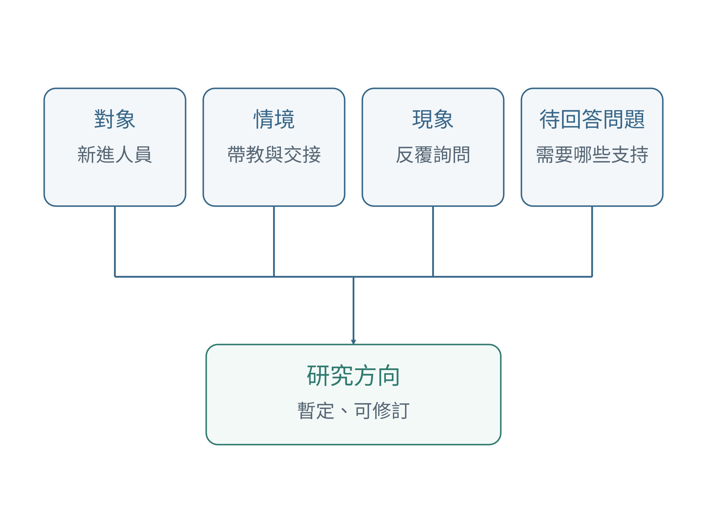
圖3-1 研究方向的四個要素
在＿＿情境下，＿＿對象出現＿＿現象，因此想了解＿＿。
3.2.2 同一個現象可以有三種切入
同樣是交接後反覆詢問前任，工管可研究流程缺漏，資訊可研究查找工具，管理可研究帶教與分享。路線不同，所需證據也不同。
資訊研究不一定開發新平台，工管也不一定使用複雜模型；可從現有系統或流程觀察開始。
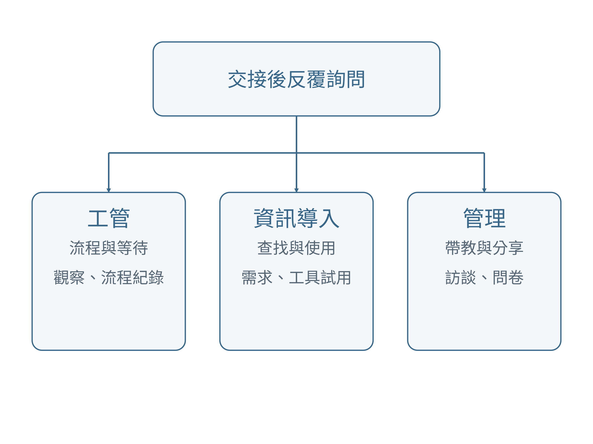
圖3-2 同一工作現象的工管、資訊與管理切入
| 路線 | 主要關心 | 可能資料 | 初步研究方向 |
|---|---|---|---|
| 工管與流程改善 | 哪些環節等待或重複？ | 一般流程紀錄、觀察、訪談 | 業務交接流程瓶頸與改善需求 |
| 資訊導入 | 資料能否有效被取得與使用？ | 系統使用經驗、原型操作、訪談 | 電子交接工具的可用性與使用需求 |
| 管理研究 | 人員如何互動、學習與適應？ | 問卷、訪談、適當文件 | 帶教支持、知識分享與工作適應 |
3.2.3 不要把改善目標直接當成研究問題
「建立交接網站」是方案，研究問題則要說明想取得什麼知識。先問資訊缺口、使用需求及呈現方式，再考慮工具。
若要研究改善效果，需要成效指標與比較設計；只有一次問卷或訪談時，不宜直接宣稱改善造成效果。
▸ 動手做｜寫出一個研究方向
從三個候選方向選一個，完成四要素句型，再分別寫出工管、資訊及管理的切入問題。最後圈選最有興趣、也最有資料條件的一條路線，說明理由。
▌ 本節小結
研究方向要能引導資料與方法。先選主要問題，再決定是否需要工具或改善措施，會比同時研究所有因素更容易推進。
3.3 初步檢查研究方向的可行性
3.3.1 有興趣之外，還需要能取得證據
選題時就要確認資料來源。問卷需適合對象與測量來源；訪談需相關經驗；流程研究需可觀察作業；原型評估需試用情境。
先辨識條件，不急著決定樣本數。認識同事不代表同事必然適合或願意參加研究。
| 檢查面向 | 要問的問題 | 如何處理 |
|---|---|---|
| 研究價值 | 結果能協助理解什麼？ | 說出待回答問題及可受益對象 |
| 對象 | 哪些人有相關經驗？ | 列出角色與接觸方式，暫不預設樣本數 |
| 資料 | 需要紀錄、感受、操作表現還是文件？ | 區分已取得、可申請與目前無法取得 |
| 範圍 | 一學期能完成哪些部分？ | 聚焦一類工作、一段過程或少數概念 |
| 使用條件 | 資料是否適合研究與課堂討論？ | 列出授權、保護與必要程序的待確認事項 |
| 文獻 | 是否找到相關概念與方法？ | 先做搜尋，再修訂方向 |
| 個人能力 | 是否能理解並執行方法？ | 選擇可學習與獲得指導的方法 |
3.3.2 軍方研究中的身分與資料條件
階級、主管與同事關係可能影響回答或拒絕參與的意願。研究回答應與工作要求及考核分開思考。
刪除姓名未必無法辨識個人，去識別也不表示已獲准使用。今天先列待確認事項，分享一般化工作描述即可。
3.3.3 為主要方向保留一個備選
以「可繼續」「需調整」「暫不適合」檢查方向。若改研究問題，也要改資料、方法與結論範圍。
例如主要方向是工具效果評估，備選可先研究交接資訊需求；前者需試用與比較，後者可從訪談開始。
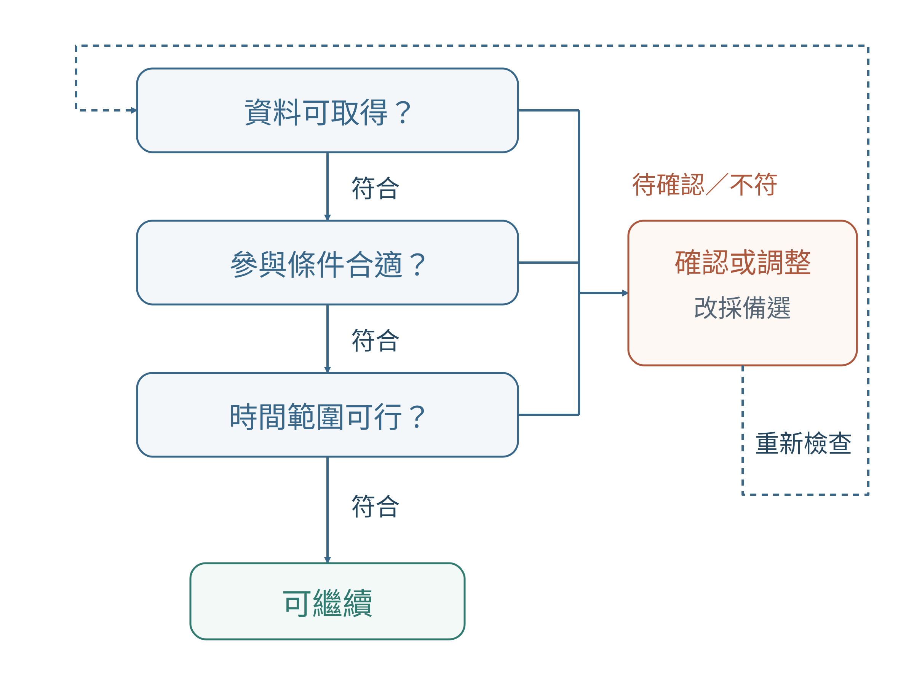
圖3-3 研究方向的可行性初檢與調整回路
▸ 動手做｜可行性初檢
將主要方向的資料分成「目前知道可以取得」「需確認」「目前不具條件」三欄。寫出最大的待確認問題，以及若無法解決，準備如何改變問題或採用備選方向。
▌ 本節小結
可行的研究方向，要讓問題、資料、時間與方法相互配合。先找出條件缺口，能減少後續反覆改題的成本。
3.4 把實務用語轉成搜尋關鍵字
3.4.1 搜尋概念，不只搜尋營區或機型
只搜營區或機型可能找不到材料。把帶教、分派或重複登錄，轉成師徒制、組織公平或流程再造等候選概念。
關鍵字是入口，不是已確定的變項，需閱讀後確認適用性。
| 工作用語或現象 | 可嘗試的研究關鍵字 | 可延伸的情境 |
|---|---|---|
| 新人需要有人帶 | 師徒制、帶教、組織社會化、工作適應 | 軍事單位、技術職務、航空維修 |
| 受訓後不知道如何用 | 訓練轉移、主管支持、學習遷移 | 軍事教育、職場訓練 |
| 工作總是分給同一群人 | 勤務分配、工作負荷、組織公平 | 部隊、人力配置、公共組織 |
| 物料反覆清點或確認 | 庫存管理、帳物一致、資訊品質、補給流程 | 國軍、倉儲、物流 |
| 系統要重複輸入 | 流程再造、系統整合、任務科技適配 | 行政、後勤、資訊系統 |
| 下班仍要回工作訊息 | 即時通訊、工作壓力、職家衝突 | 軍職人員、職場溝通 |
3.4.2 用三層關鍵字逐步搜尋
三層詞是情境、核心概念、相關概念或結果。先搜「國軍 師徒制」，太少就換同義詞或放寬情境；太多則加入對象或第二概念。
沒有結果可能只是用詞不同。每次記錄是否相關與調整理由，進階搜尋依當時系統欄位設定。
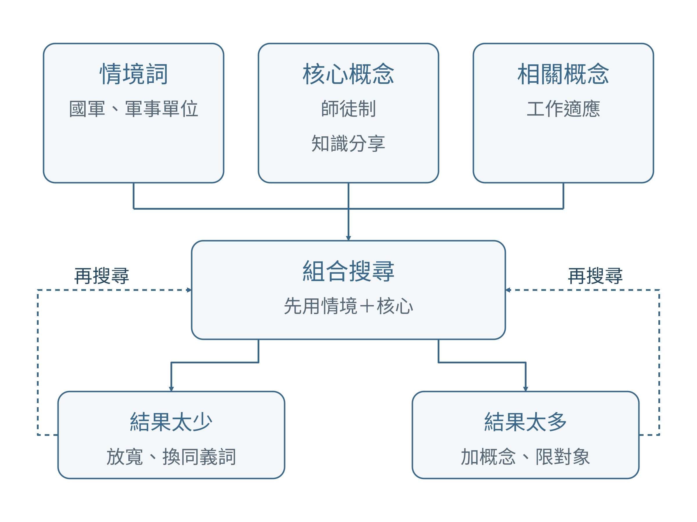
圖3-4 三層關鍵字組合與搜尋調整
3.4.3 AI可以協助整理，但來源要自己核對
AI可整理候選關鍵字、區分觀察與推測，但它生成的題名、作者與年份仍須回原始詳目查核。
輸入一般化、適合使用的描述；人工保留符合經驗的詞，刪除不適合的詞，記下理由。
▸ AI共學｜建立搜尋詞
可使用以下提示：
以下是一般化的工作現象：＿＿。請將它分成「對象、情境、現象、待回答問題」，再提供情境詞、核心概念與同義詞。請指出哪些原因仍是推測。不要編造論文題名或引用資料，也不要把關鍵字視為已確定的變項。
先確認輸入內容適合使用，再人工選擇關鍵字。AI建議若與現場經驗不符，可以刪除或改寫，並留下理由。
▌ 本節小結
關鍵字需要從實務語言走向研究概念，再依搜尋結果修訂。文獻搜尋是來回調整的過程。
3.5 搜尋與初步篩選學位論文
3.5.1 從題名進入，逐步判斷內容
先以關鍵字搜尋，再讀題名、基本資料、摘要與目錄，最後確認全文取得方式。登入或驗證依系統要求處理。
初篩要問問題、概念與方法是否相關。只有摘要可先列候選，深入報告應選能合法取得全文的材料。
3.5.2 六大領域的真實搜尋示例
以下是真實題名，供示範搜尋入口，不代表能直接套用到601營區。
課堂操作：複製一個題名搜尋，讀摘要，再說明它能幫助自己的情境、概念或方法哪一部分。來源連結列於章末。
| 領域 | 已查到的實際研究題名 | 初步閱讀應追問 |
|---|---|---|
| 人力與勤務分配 | 應用二階段貪婪演算法求解國軍部隊衛哨排班問題 | 排班的目標、限制與比較方式是什麼？ |
| 領導與組織管理 | 領導風格、組織公平、組織信任與組織公民行為之探討 | 作者如何界定領導、公平與信任？ |
| 物料與補給流程 | 運用物流管理技術，精進陸軍補給作業之探討－以零附件補給為例 | 作者從哪些環節分析補給流程？ |
| 訓練與知識傳承 | 從社會交換理論探討師徒制對知識分享之影響 | 為什麼用師徒制與社會交換理解知識分享？ |
| 工作適應與人才留任 | 國軍工作生活品質、工作適應對留任意願影響之研究 | 工作適應與留任意願如何分別處理？ |
| 行政與數位工具 | 國軍公文線上簽核系統使用滿意度之研究－以國防部為例 | 系統使用滿意與行政效率是否為相同指標？ |
3.5.3 相近情境與不同方法，都有閱讀價值
三篇可分別提供情境、概念與方法。例如交接學習可讀軍方師徒制、工作適應與訪談設計清楚的研究。
不必都研究同一機型。借鏡其他軍種、教官或其他組織時記錄情境差異，年份新舊不能取代適用性判斷。
3.5.4 不要只看摘要就引用方法細節
摘要適合初篩，不足以核對完整問卷、訪談題綱與分析程序。深入閱讀要查方法章、附錄與頁碼，未交代的細節不要自行補填。
作者、年份與學校以原始著錄為準，不用搜尋引擎爬取日期替代論文年份。
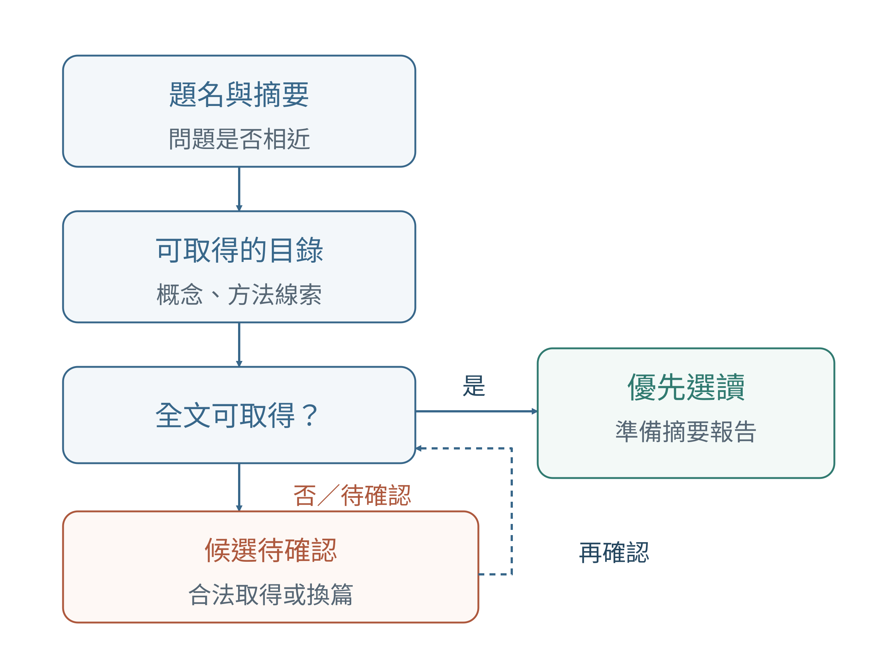
圖3-5 候選論文篩選與全文選讀
▸ 動手做｜完成三篇候選研究
依自己的關鍵字找出至少三篇候選研究。每篇寫一句「值得讀的理由」，並註明主要用途：情境、概念或方法。若尚未取得全文，清楚標示待確認。
▌ 本節小結
搜尋成果應包含可回查的來源、選讀理由及全文狀態。找到題名只是第一步，選出能協助自己的材料才是本節成果。
3.6 六大軍方研究領域：從工作問題走向研究題目
前面的步驟教我們如何從工作經驗描述現象、檢查可行性並建立搜尋詞。接下來要更進一步：看到一個工作問題時，應該從哪些角度思考，才能逐步轉成可以研究的題目？
本課程把常見軍方實務整理成六大領域，並共用一套「六層研究思考模型」：
常見工作問題 → 可能影響因素 → 可處理方向 → 研究概念 → 可蒐集資料／證據 → 研究題目＋核心概念＋搜尋關鍵字
這六層不是要求學生照表填空，而是提醒：研究題目不能只來自一個直覺。當你認為「人不夠」、「系統不好用」或「新人學不會」時，先把問題拆開，再確認有哪些可能因素、可以取得什麼證據，以及文獻中通常用哪些概念描述它。
導讀版的六張圖是「思考地圖」。完整版另列每個領域15篇、合計90篇軍方相關學位研究，供後續搜尋與深入閱讀。
3.6.1 人力與勤務分配
這一領域的核心問題是：有限的人力如何分配到適合的工作，同時兼顧專長、負荷、休息與公平？ 現場常見的說法包括人力不足、勤務總落在同一批人、臨時調班頻繁、專長只有少數人具備，以及夜間或假日勤務容易產生公平爭議。
研究時不要直接把「人少」當成唯一原因。可能需要同時檢查人數、技能結構、任務難度、排班制度、主管分配方式、休息條件及人員資訊是否完整。若問題在配置效率，可往工管與排程研究發展；若問題在工具與資訊，可往決策支援發展；若問題在感受與制度，可往組織公平、人職適配與工作負荷發展。
| 六層 | 思考重點 |
|---|---|
| 常見問題 | 人力不足、排班困難、負荷不均、專長集中、輪調斷層 |
| 可能因素 | 人數、技能、任務量、排班制度、主管分配、休息與疲勞 |
| 處理方向 | 工作量分析、技能矩陣、公平排班、多技能人力、排班輔助工具 |
| 研究概念 | 工作負荷、組織公平、人職適配、人員排程、決策支援 |
| 可用證據 | 排班表、勤務次數、加班／休息、技能資料、問卷、訪談 |
| 題目出口 | 關聯研究、技能矩陣可行性、排班模式、工具接受度 |
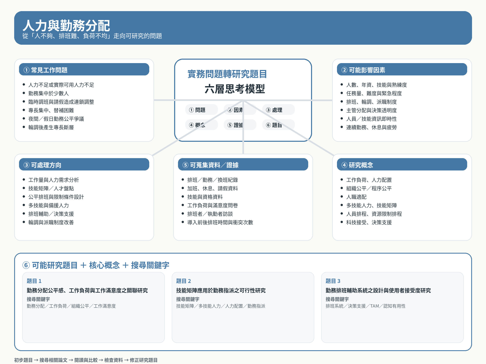
圖3-6 人力與勤務分配：六層研究思考圖
代表性題目可包括：
- 某軍事單位勤務分配公平感、工作負荷與工作滿意度之關聯研究。關鍵字：勤務分配、工作負荷、組織公平、工作滿意度。
- 技能矩陣應用於勤務指派之可行性研究。關鍵字：技能矩陣、多技能人力、人力配置、勤務指派。
- 勤務排班輔助系統之設計與使用者接受度研究。關鍵字：排班系統、決策支援、科技接受、TAM。
從本課程整理的15篇相關研究可以看到兩條主要路線：一類研究排班、人力規劃、派職與最佳化；另一類研究工作負荷、人職配適、公平感、滿意度與留任。自己的題目不必照抄既有題名，而應先判斷最想回答的是「如何配置」還是「人員如何感受與適應」。
3.6.2 領導與組織管理
這一領域常從「主管帶人方式」、「溝通不順」或「跨單位很難合作」開始，但研究不能只把問題歸咎於個人領導風格。真正可能涉及的因素還包括權責清晰度、組織文化、程序公平、資訊透明、組織信任、心理安全與變革溝通。
如果問題是工作反覆往返，可從流程與權責分析；如果問題是資訊無法順利傳遞，可研究協作工具與工作追蹤；如果問題在成員感受，則可從領導、公平、信任、凝聚力與組織承諾切入。
| 六層 | 思考重點 |
|---|---|
| 常見問題 | 指令落差、權責不清、跨單位協作困難、不敢反映、變革抗拒 |
| 可能因素 | 領導方式、組織文化、角色清晰、公平、信任、變革溝通 |
| 處理方向 | 權責梳理、協作流程、任務追蹤、回饋機制、主管支持 |
| 研究概念 | 領導風格、角色模糊、組織公平、信任、凝聚力、變革認知 |
| 可用證據 | 流程／權責文件、協調紀錄、等待時間、問卷、訪談 |
| 題目出口 | 領導與信任、角色清晰、跨單位流程、任務追蹤與公平感 |
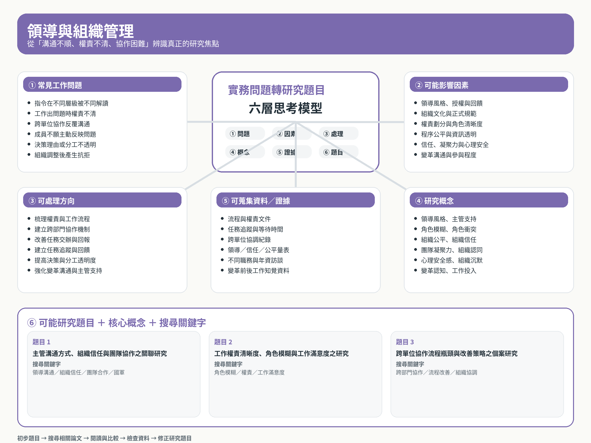
圖3-7 領導與組織管理：六層研究思考圖
代表性題目：
- 主管溝通方式、組織信任與團隊協作之關聯研究。關鍵字：領導溝通、組織信任、團隊合作、國軍。
- 工作權責清晰度、角色模糊與工作滿意度之研究。關鍵字：角色模糊、權責、工作滿意度。
- 跨單位協作流程瓶頸與改善策略之個案研究。關鍵字：跨部門協作、流程改善、組織協調。
15篇代表研究涵蓋領導風格、組織公平、信任、凝聚力、組織文化與變革。閱讀時要特別注意：同樣談「領導」，研究真正測量的概念可能完全不同，不能只因題名有領導兩字就視為同一研究方向。
3.6.3 物料與補給流程
物料與補給的研究不只是「庫存夠不夠」。從需求提出、申領、審核、採購、入庫、儲存、領用到盤點，每個環節都可能產生等待、重複作業、帳物落差及資訊中斷。
研究者可以從工管角度處理庫存、儲位、前置時間與流程；從資訊角度處理條碼、RFID、電子帳籍與追溯；從管理角度處理採購協調、內部服務品質與跨單位溝通。
| 六層 | 思考重點 |
|---|---|
| 常見問題 | 缺料、盤點耗時、帳物不一、申領慢、找料慢、資料分散 |
| 可能因素 | 需求波動、庫存政策、流程等待、儲位、資訊品質、採購前置時間 |
| 處理方向 | ABC分類、庫存控制、儲位改善、電子盤點、追蹤工具、流程改善 |
| 研究概念 | 安全庫存、前置時間、庫存周轉、資訊品質、可追溯性、服務品質 |
| 可用證據 | 申領時間、缺料、盤點差異、揀料時間、退件／重工、訪談 |
| 題目出口 | 流程改善、電子盤點、儲位配置、補給資訊品質與服務滿意 |
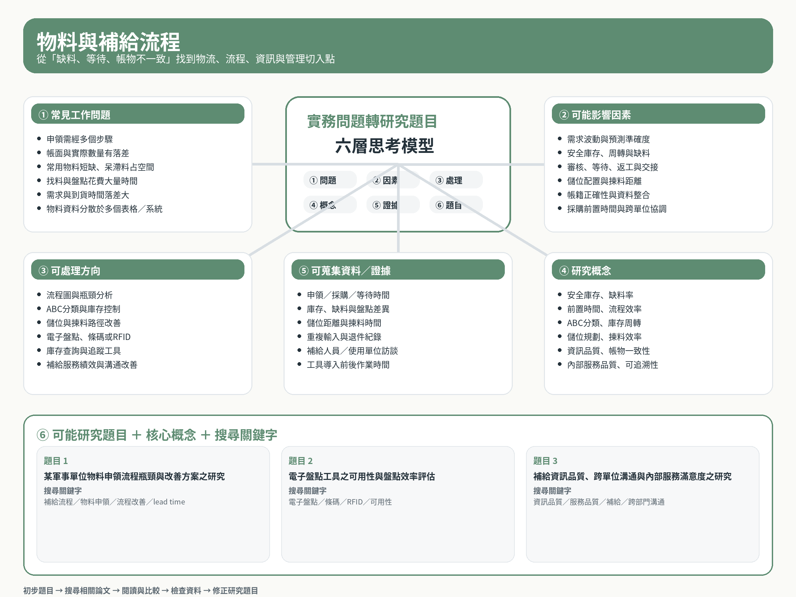
圖3-8 物料與補給流程：六層研究思考圖
代表性題目：
- 某軍事單位物料申領流程瓶頸與改善方案之研究。關鍵字：補給流程、物料申領、流程改善、lead time。
- 電子盤點工具之可用性與盤點效率評估。關鍵字：電子盤點、條碼、RFID、可用性。
- 補給資訊品質、跨單位溝通與內部服務滿意度之研究。關鍵字：資訊品質、服務品質、補給、跨部門溝通。
本領域15篇研究可看到物流流程、採購績效、儲位規劃、庫存控制、供應鏈、RFID及補給滿意度等不同路線。學生若無法取得完整成本或庫存資料，也可以把題目縮小成一般流程、資訊品質或使用者經驗研究。
3.6.4 訓練與知識傳承
這一領域最重要的區分是：「上過課」、「學會」、「回到工作能用」及「經驗能留下來」不是同一件事。 新人持續詢問資深人員，可能是教材不足，也可能是工作本身含有大量難以文件化的隱性知識。
因此可從技能拆解、訓練需求與學習曲線切入；也可以研究數位教材、知識平台、VR與AI知識查詢；管理研究則常關心師徒制、知識分享、主管支持與訓練轉移。
| 六層 | 思考重點 |
|---|---|
| 常見問題 | 上課後不會用、教法不一、新人依賴老手、經驗流失、文件難找 |
| 可能因素 | 先備能力、教材、教學方式、主管支持、隱性知識、科技易用性 |
| 處理方向 | 訓練需求、標準教材、帶教流程、知識庫、數位學習、轉移追蹤 |
| 研究概念 | 訓練轉移、師徒制、知識分享、組織記憶、知識檢索、科技接受 |
| 可用證據 | 前後測、操作表現、錯誤率、上手時間、查找時間、訪談／問卷 |
| 題目出口 | 帶教與適應、主管支持與轉移、數位交接、知識分享、VR／AI工具 |
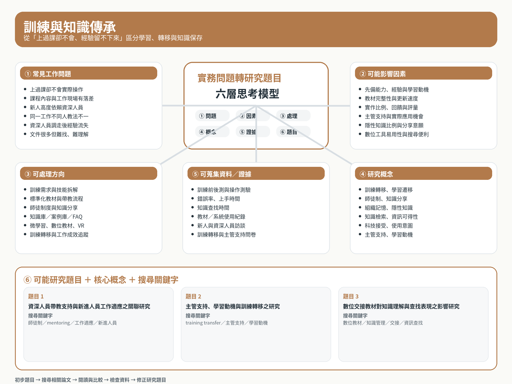
圖3-9 訓練與知識傳承：六層研究思考圖
代表性題目：
- 資深人員帶教支持與新進人員工作適應之關聯研究。關鍵字：師徒制、mentoring、工作適應、新進人員。
- 主管支持、學習動機與訓練轉移之研究。關鍵字：training transfer、主管支持、學習動機。
- 數位交接教材對知識理解與查找表現之影響研究。關鍵字：數位教材、知識管理、交接、資訊查找。
本領域15篇研究涵蓋師徒制、知識分享、訓練需求、訓練轉移、數位學習、VR與知識管理系統。閱讀時應先判斷自己要研究的是「學習效果」、「工作應用」還是「知識保存」，避免把不同成果混成一個題目。
3.6.5 工作適應與人才留任
「為什麼想離開」通常不是單一因素可以解釋。工作壓力、職家衝突、主管支持、工作價值、組織認同及職涯期待都可能與留任有關。新進人員的適應過程也可能與資深人員完全不同。
此領域可從工作設計、人因與負荷切入，也可以研究新人引導與支持工具；管理研究則常見工作生活品質、工作適應、組織承諾、職家衝突及留任意願。
| 六層 | 思考重點 |
|---|---|
| 常見問題 | 新人不適應、壓力高、職家衝突、職涯不清、認同降低、想離開 |
| 可能因素 | 工作量、角色、家庭支持、主管支持、公平、工作價值、職涯發展 |
| 處理方向 | 新人引導、負荷改善、休息安排、主管支持、職涯資訊、支持工具 |
| 研究概念 | 工作適應、組織社會化、工作壓力、職家衝突、組織支持、留任意願 |
| 可用證據 | 新人訪談、壓力／支持量表、工作滿意、輪班資料、不同年資比較 |
| 題目出口 | 新人適應、壓力與留任、主管支持、職家衝突、數位引導工具 |
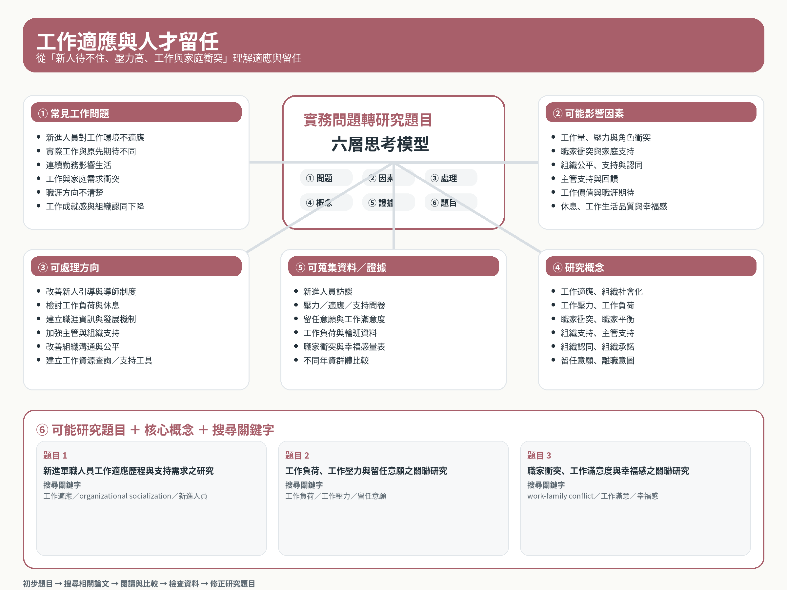
圖3-10 工作適應與人才留任：六層研究思考圖
代表性題目：
- 新進軍職人員工作適應歷程與支持需求之研究。關鍵字：工作適應、organizational socialization、新進人員。
- 工作負荷、工作壓力與留任意願之關聯研究。關鍵字：工作負荷、工作壓力、留任意願。
- 職家衝突、工作滿意度與幸福感之關聯研究。關鍵字：work-family conflict、工作滿意、幸福感。
15篇相關研究多集中於工作壓力、職家衝突、工作生活品質、組織承諾及留營意願。要注意「留任意願」屬於意向，不等於實際留任行為；研究結論必須與實際測量的資料一致。
3.6.6 行政與數位工具
系統已經存在，不代表流程已經改善。若同一資料仍需重複輸入、使用者另外維護Excel、紙本與電子並行，問題可能不在「缺少系統」，而在系統與實際工作不適配。
研究者可以從流程時間、等待與返工切入；從資訊系統角度檢查系統品質、資訊品質、科技接受與任務科技適配；也可以研究主管支持、使用訓練、變革阻力、資訊過載與數位工作壓力。
| 六層 | 思考重點 |
|---|---|
| 常見問題 | 重複輸入、系統難用、資料分散、紙電並行、訊息過載、舊流程未改 |
| 可能因素 | 系統易用性、資訊品質、任務適配、數位能力、主管支持、資安要求 |
| 處理方向 | 流程簡化、資料整合、介面改善、工作追蹤、可用性測試、AI輔助 |
| 研究概念 | 可用性、科技接受、系統品質、資訊品質、任務科技適配、technostress |
| 可用證據 | 作業時間、步驟數、錯誤／返工、任務完成率、問卷、原型操作測試 |
| 題目出口 | 系統成功、流程改善、工作追蹤、資訊過載、數位簽核、AI行政工具 |
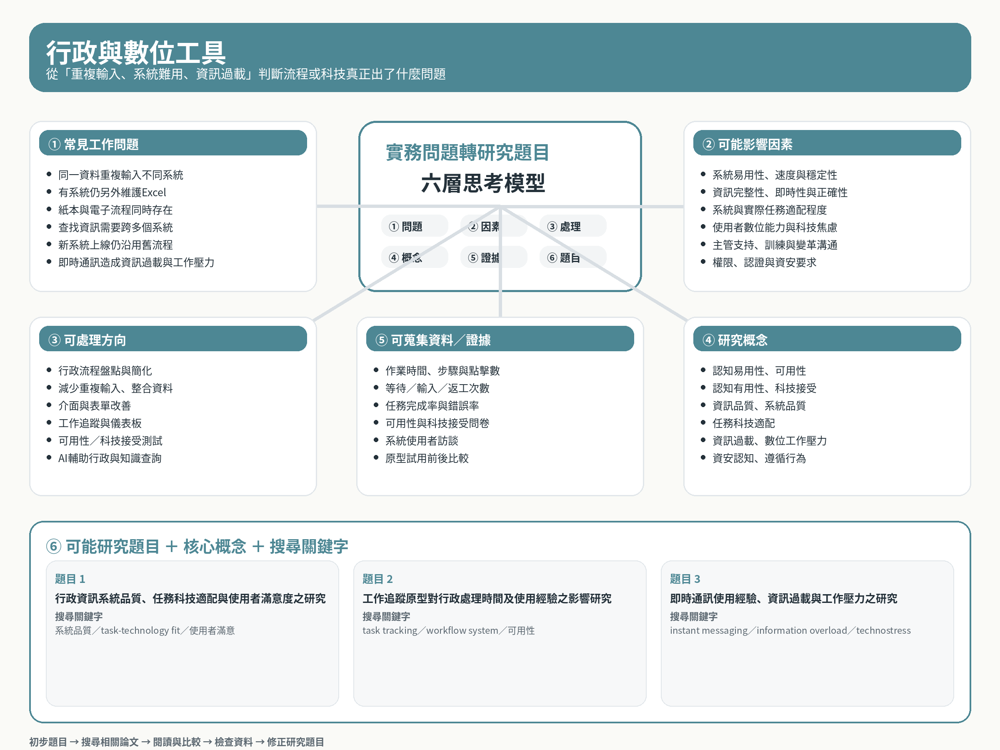
圖3-11 行政與數位工具：六層研究思考圖
代表性題目：
- 行政資訊系統品質、任務科技適配與使用者滿意度之研究。關鍵字：系統品質、task-technology fit、使用者滿意。
- 工作追蹤原型對行政處理時間及使用經驗之影響研究。關鍵字：task tracking、workflow system、可用性。
- 即時通訊使用經驗、資訊過載與工作壓力之研究。關鍵字：instant messaging、information overload、technostress。
15篇代表研究涵蓋公文線上簽核、後勤資訊系統、科技接受、即時通訊、服務品質與資安行為。學生應區分「系統好不好用」、「願不願意使用」及「工作是否真的改善」，三者需要的證據不同。
3.6.7 六張圖怎麼用：先找問題，再選研究路線
六大領域不是六個互不相關的盒子。同一個現象可能同時跨領域。例如新人交接後反覆詢問，可能涉及人力配置、主管支持、訓練與知識傳承、工作適應及數位知識工具。
真正需要決定的不是「它到底屬於哪一類」，而是：我最想回答哪一個問題？
課堂上可以採四個步驟：
- 先在六張圖中圈出最接近自己工作經驗的「問題」。
- 沿著可能因素與處理方向，選擇主要路線：管理關係、流程改善或資訊導入。
- 檢查自己拿得到哪些證據；拿不到的資料不要假裝可以取得。
- 從題目示例拆出「情境詞＋核心概念＋結果概念」，開始搜尋90篇清單與博碩士論文資料庫。
題目形成後還要回到文獻再修正，因此真正的流程是：
工作現象 → 初步題目 → 關鍵字搜尋 → 閱讀相關論文 → 檢查資料條件 → 修正研究題目
▌ 本節小結
六層模型的價值，不是替學生直接產生題目，而是建立一套可以重複使用的思考程序。先描述現象、再拆因素；先確認證據、再決定方法；最後才形成題目並回到文獻驗證。
3.7 建立候選清單與修訂研究方向
3.7.1 讓搜尋結果回頭修正想法
文獻可協助把「上手慢」區分成帶教、知識分享與適應，但不必全部納入題目。
已有相近研究不等於不能做；只更換單位名稱也不等於缺口。先記可能差異，下一章讀全文再檢查。
3.7.2 貫穿案例：從帶教經驗到候選方向
以下示範從想做平台回到問題與資料。先了解經驗與資訊需求，再決定是否需要工具。
沒有成熟工具與適當比較設計時，先不宣稱平台效果。方向、方法與證據條件要一起調整。
| 階段 | 工作稿內容 |
|---|---|
| 原始想法 | 新人常向資深同仁詢問，希望做一個資料平台 |
| 現象整理 | 新進維修人員在理解一般工作文件與處理交接事項時，取得資訊的方式不同 |
| 待回答問題 | 帶教互動與文件如何協助人員適應工作？哪些資訊需求仍未被滿足？ |
| 主要路線 | 先以訪談了解帶教與資訊需求，資訊原型作為後續可能方向 |
| 搜尋詞 | 國軍師徒制、知識分享、工作適應、電子交接、資訊需求 |
| 文獻線索 | 軍方師徒制研究、知識管理研究，以及適合的訪談方法示例 |
| 暫定方向 | 新進軍職人員帶教經驗與交接資訊需求之探討 |
| 可行性待確認 | 可接觸的受訪角色、參與條件與適合討論的資料範圍 |
3.7.3 同儕回饋要針對問題與證據
每人用兩分鐘說明現象、方向與候選研究。同學追問：對象清楚嗎？哪些原因仍在推測？文獻幫助哪部分？資料需確認什麼？
回饋重點是下一步該縮小、查找或閱讀什麼，而不是題目聽起來是否高級。
▸ 動手做｜本章成果提交
提交一份研究方向表、一份搜尋紀錄、三篇候選清單，以及下一章優先閱讀論文的選擇理由。另寫三至五句說明：搜尋前後，自己的想法有哪些改變。
▌ 本節小結
本章的完成標準，是能提出一個可繼續發展的方向，找到適合閱讀的材料，並知道仍需確認哪些條件。
本章課堂安排建議
以下以180分鐘為例，實際可依課堂時間調整，包含中段休息。
| 時間 | 活動 | 成果 |
|---|---|---|
| 0–15分鐘 | 銜接前兩章，說明本章任務 | 確認論文工作稿用途 |
| 15–35分鐘 | 六大領域與工作盤點 | 二至三個候選方向 |
| 35–60分鐘 | 四要素聚焦與可行性初檢 | 主要與備選方向 |
| 60–80分鐘 | 關鍵字與搜尋示範 | 兩組以上關鍵字 |
| 80–90分鐘 | 休息 | — |
| 90–130分鐘 | 個人搜尋，教師巡迴 | 三篇候選研究 |
| 130–155分鐘 | 小組交流與關聯性檢查 | 修訂選讀理由 |
| 155–175分鐘 | 修訂方向表與清單 | 完成工作稿 |
| 175–180分鐘 | 提交與指定下一章選讀 | 確認閱讀材料 |
若課堂網路或全文取得受限，可先使用90篇清單中的公開題名與摘要篩選，將全文取得列為明確待辦；不得用未取得的全文假裝完成深入閱讀。
本章實作表
表3-1 工作經驗與研究方向表
| 項目 | 學生填寫 |
|---|---|
| 主要工作領域 | |
| 工作情境與對象 | |
| 具體現象或例子 | |
| 已知事實 | |
| 尚待查證的原因 | |
| 想回答的問題 | |
| 主要路線：工管／資訊／管理 | |
| 主要方向與暫定題名 | |
| 備選方向 | |
| 可取得的資料與對象 | |
| 待確認條件與下一步 |
表3-2 關鍵字搜尋紀錄表
| 次序 | 搜尋詞與條件 | 結果是否相關 | 保留的論文 | 下一次調整理由 |
|---|---|---|---|---|
| 1 | ||||
| 2 | ||||
| 3 |
表3-3 候選論文清單
| 項目 | 候選一 | 候選二 | 候選三 |
|---|---|---|---|
| 題名 | |||
| 作者、年份、學校 | |||
| 詳目來源連結 | |||
| 對象與情境 | |||
| 摘要可確認的問題與方法 | |||
| 主要用途：情境／概念／方法 | |||
| 與自己研究的關聯 | |||
| 全文已取得／待確認／無法取得 | |||
| 與自己情境的差異 |
表3-4 下一章選讀確認單
| 項目 | 學生填寫 |
|---|---|
| 優先選讀的論文 | |
| 選讀理由 | |
| 全文取得方式與狀態 | |
| 預計從文中回答的三個問題 | |
| 搜尋後修訂了哪些想法 |
本章成果檢核
| 檢核項目 | 完成標準 |
|---|---|
| 現象描述 | 包含對象與情境，能區分觀察與推測 |
| 方向聚焦 | 主要問題清楚，範圍可繼續規劃 |
| 可行性 | 列出資料條件與最大的待確認問題 |
| 搜尋歷程 | 至少兩組關鍵字，有調整理由 |
| 候選清單 | 至少三篇，具來源、關聯理由與全文狀態 |
| 閱讀準備 | 選出一篇，知道下一章要讀它了解什麼 |
檢核重點是思考與修訂歷程。候選論文越多不代表成果越好；最重要的是每一篇的選擇都有理由，能幫助自己的問題形成。
本章小結與下一章銜接
研究方向從熟悉的工作開始，經由問題描述、可行性檢查與文獻搜尋逐步聚焦。六大領域提供入口，工管、資訊與管理提供不同切入；真正的題目仍需根據現象、文獻與證據條件形成。
第四章〈閱讀學位論文與撰寫摘要報告〉將使用本章選出的材料。屆時要從原文整理研究問題、文獻架構、方法、結果及限制，再說明它如何協助自己的研究。本章先完成找到與選出論文，下一章再深入閱讀。
搜尋示例來源與配套材料
本章搜尋練習以「臺灣博碩士論文知識加值系統」為主要入口。導讀版保留六個代表題名，完整來源連結與六大領域90篇清單請參閱完整教材。
- 應用二階段貪婪演算法求解國軍部隊衛哨排班問題
- 領導風格、組織公平、組織信任與組織公民行為之探討
- 運用物流管理技術，精進陸軍補給作業之探討－以零附件補給為例
- 從社會交換理論探討師徒制對知識分享之影響
- 國軍工作生活品質、工作適應對留任意願影響之研究
- 國軍公文線上簽核系統使用滿意度之研究－以國防部為例
完整版第3.6節另整理六大領域各15篇、合計90篇軍方相關研究，供學生依領域選讀。正式摘要報告仍須回原始論文詳目與全文核對作者、年份、方法、結果及頁碼。
第3章 從營區實務尋找研究方向與搜尋論文
章首導讀
前兩章已建立研究的基本觀念，也練習從工作困擾辨識研究現象。從本章開始，課堂上的練習要逐步累積成自己的論文工作稿。本章的任務，是從熟悉的軍方工作經驗中選出值得深入了解的方向，再找到相關學位論文，為下一章的閱讀與摘要報告準備材料。
對在職軍人而言，研究題目常常就在每天執行的工作裡。飛航人員可能注意到任務前溝通與任務後檢討的方式不同；訓練人員可能發現相同課程對不同背景的學員產生不同學習經驗；維修人員可能觀察到技術文件與資深人員帶教各有作用；行政與補給人員則可能長期面對資料反覆確認、人員交接或申領流程上的困難。這些經驗提供了研究的起點，但仍需要整理成其他人可以理解、可以查證的問題。
選題的第一步，是描述發生了什麼。若一開始就認定「因為大家不積極，所以效率差」，便把尚待查證的原因當成答案。研究者應先釐清工作情境、涉及對象及可觀察現象，再尋找可能解釋。文獻搜尋可以幫助我們知道：別人是否研究過類似問題、使用哪些概念、採取哪些方法，以及自己的構想可以如何調整。
本章以六大領域提供選題入口：人力與勤務分配、領導與組織管理、物料與補給流程、訓練與知識傳承、工作適應與人才留任，以及行政與數位工具。飛航、訓練、維修與支援人員都可依自身經驗選擇，不必把題目侷限於機型或技術性能。
本章結束時，要能說清楚：想了解什麼現象、這個現象為什麼值得研究，以及準備先閱讀哪些論文。
本章核心問題
- 如何把軍方工作經驗寫成具體的研究方向？
- 如何區分工作現象、個人判斷與可能原因？
- 如何從工管、資訊導入及管理角度切入同一個問題？
- 如何檢查題目的資料、時間與對象是否可行？
- 如何建立關鍵字，搜尋並篩選相關學位論文？
- 如何將搜尋結果轉成下一階段的閱讀材料？
本章學習目標
完成本章後，應能提出二至三個候選方向；以對象、情境、現象及待回答問題描述其中一個方向；指出可取得的資料及仍待確認的條件；建立至少兩組搜尋關鍵字；完成候選論文清單，並選出一篇適合下一章深入閱讀的論文。
本章學習路徑
工作經驗盤點 → 研究方向描述 → 可行性初檢 → 關鍵字轉換 → 搜尋與篩選 → 修訂方向與選讀論文
本章為剩餘十週的第一週。暫定方向會隨閱讀與指導回饋修訂；本章的成果不是正式定案的論文題目。
本章案例使用說明
以下營區案例為教學假設情境，用以示範研究思考，不表示601龍門營區實際存在所述問題。課堂以一般工作經驗與適合討論的流程為材料；正式研究資料的取得條件應列入可行性檢查。
3.1 盤點自己的工作經驗
3.1.1 從熟悉的日常工作開始
很多學生認為研究題目必須新穎、龐大或充滿技術名詞，因此忽略已經熟悉的工作。實際上，越能清楚說明工作如何進行，越容易辨識值得研究的現象。例如，知道一項行政業務由哪些人接手、在哪些環節等待，以及哪些資訊經常需要補充，就能提出比「提升行政效率」更具體的問題。
軍方工作通常具有明確分工，也包含跨職務協調。同一件事情，從執行者、主管、教官或支援人員的角度看，可能出現不同解釋。對研究而言，這些差異不是必須立即消除的雜音，而是值得整理的線索。先描述各自看到的現象，再判斷需要哪些資料，才能避免只採用單一立場。
請先回想近一段時間最熟悉的工作，不必追求重大事件。可以從四種線索開始：反覆發生的困擾、人員或作法之間的差異、制度與執行的落差，以及改變作法後出現的結果。描述時可使用「經常需要重新確認」「不同人員的上手方式不同」「導入工具後仍保留部分紙本作業」等可繼續查證的敘述。
3.1.2 六大領域如何對應自己的職務
六大領域是整理問題的入口，同一現象可以跨越數個領域。不要為了符合分類而改變自己的經驗；先描述，再選出最主要的研究焦點。
| 領域 | 可回想的軍方工作經驗 | 初步問題示例 |
|---|---|---|
| 人力與勤務分配 | 輪值、臨時工作、專長配置、輪調 | 人員如何理解勤務分派原則？ |
| 領導與組織管理 | 指示傳達、權責分工、跨業務協調 | 哪些溝通方式有助於釐清工作責任？ |
| 物料與補給流程 | 申領、清點、帳籍、採購及交接 | 申領資料在哪些環節需要反覆確認？ |
| 訓練與知識傳承 | 課程、複訓、帶教、經驗分享 | 受訓內容如何被帶回工作現場使用？ |
| 工作適應與人才留任 | 新進人員適應、角色要求、家庭安排 | 新進人員需要哪些支持才能適應職務？ |
| 行政與數位工具 | 公文、資料登錄、通訊及系統查詢 | 現有系統是否符合實際業務需要？ |
飛航人員可以研究組員溝通、訓後回饋或學習經驗；維修人員可以研究帶教、文件使用或交接；補給與行政人員可以研究流程、資訊品質與服務經驗。選题不必涉及作戰性能，也不必每一題都建置資訊系統。
3.1.3 把觀察寫清楚，暫時保留原因
假設一位學員說：「新進維修人員上手慢，因為沒有認真學。」這句話混合了現象、評價與原因。研究者需要追問：「上手慢」是指哪一類工作？是理解文件、辨識作業步驟、完成一般業務，還是獨立處理例外情況？比較的依據是什麼？
較合適的起點是：「在某類日常工作中，新進人員經常需要向資深同仁確認作法；不同人員使用文件與接受帶教的方式可能不同。」這樣既保留現象，也沒有預先認定原因。後續可探討文件清晰度、帶教方式、先備經驗及工作機會等因素。
| 原始說法 | 需要釐清的地方 | 可研究的描述 |
|---|---|---|
| 勤務分配不公平 | 公平指工作量、時段、程序還是說明方式？ | 人員對勤務分派程序與工作量的看法有所不同 |
| 受訓沒有用 | 是未學會、沒有使用機會，還是內容不適合？ | 受訓者返回單位後，應用課程內容的情形不同 |
| 系統很難用 | 是操作複雜、資料不足、速度慢還是工作不適配？ | 使用者在完成特定業務時遇到不同操作困難 |
▸ 動手做｜工作經驗盤點
請各寫一個「反覆困擾」「作法差異」「改變後的結果」，共三個候選方向。每個方向先寫三至五句，包含實際工作、涉及對象及觀察到的情形。若原因只是推測，請註記「待查證」。
▌ 本節小結
工作經驗提供研究線索。先把現象描述清楚，才能判斷這個線索是否值得深入，而不會被第一個想到的原因限制。
3.2 把工作困擾轉成可研究的方向
3.2.1 用四個要素描述研究方向
一個可繼續發展的方向，至少要說清楚對象、情境、現象與待回答問題。對象回答研究誰；情境回答在哪一類工作或制度下；現象回答觀察到什麼；問題則回答仍想了解什麼。
可以先使用以下句型整理構想：
在＿＿情境下，＿＿對象出現＿＿現象，因此想了解＿＿。
例如：「在新進維修人員接受帶教的過程中，人員對文件與口頭指導的依賴程度不同，因此想了解兩種學習資源如何協助工作適應。」這仍是研究方向，還不是完整研究設計，但已能引導文獻搜尋。
如圖3-1所示，研究方向由對象、情境、現象與待回答問題共同構成；這四項不是按時間先後排列的作業步驟。
研究方向四要素
圖3-1 研究方向的四個要素
以新進人員帶教與交接為例，「反覆詢問」是現象，「需要哪些支持」才是待回答問題。尚未蒐集證據前，不能將反覆詢問歸因於能力不足或學習態度。四要素形成的方向仍屬暫定，可隨文獻與資料條件修訂。
課堂提問： 請指出自己的四個要素。你寫的是待回答問題，還是已經預設的答案？
方向聚焦不只是縮小單位名稱，而是減少需要同時回答的事情。「國軍人力、訓練、領導與數位轉型對整體績效之影響」包含過多概念，難以在有限時間內蒐集適當證據。可以先選一種情境、一群對象與一個主要問題，再視文獻與資料條件擴充。
3.2.2 同一個現象可以有三種切入
以假設的「業務交接後需要反覆詢問前任」為例，工管角度可觀察交接流程、重複確認及資訊缺漏；資訊角度可探討電子交接資料是否容易查找；管理角度可探討帶教支持與知識分享。這三者可以連結，但初期應選出主要路線。
同樣是交接後反覆詢問，研究者可以選擇不同焦點。圖3-2將三條路線分開，協助先選主要問題，再規劃資料與方法。
同一工作現象的三種研究切入
圖3-2 同一工作現象的工管、資訊與管理切入
工管關心流程與等待；資訊導入關心資料查找及工具使用；管理關心帶教與知識分享。圖中材料只是可能選擇，不是固定方法配對：工管也可訪談，資訊需求研究也可使用問卷。不能因為選了資訊路線，就直接認定必須建置系統或已能提升效率。
課堂提問： 同一交接現象，你最能取得哪一類證據？如果選資訊導入，先了解需求還是直接做工具？理由是什麼？
| 路線 | 主要關心 | 可能資料 | 初步研究方向 |
|---|---|---|---|
| 工管與流程改善 | 哪些環節等待或重複？ | 一般流程紀錄、觀察、訪談 | 業務交接流程瓶頸與改善需求 |
| 資訊導入 | 資料能否有效被取得與使用？ | 系統使用經驗、原型操作、訪談 | 電子交接工具的可用性與使用需求 |
| 管理研究 | 人員如何互動、學習與適應？ | 問卷、訪談、適當文件 | 帶教支持、知識分享與工作適應 |
資訊導入不等於一定要寫程式。研究現有系統的使用需求與接受程度，也屬資訊管理的研究。工管也不必立即使用複雜最佳化模型；流程分析、工作衡量與指標設計，同樣能協助理解實務問題。
3.2.3 不要把改善目標直接當成研究問題
「建立交接網站」「提升訓練成效」「改善物料管理」都是希望達成的目標。研究問題還需要說明想取得哪些知識。例如，在建立網站前，可以先研究使用者需要哪些資訊、現有交接有哪些缺口，以及什麼呈現方式較容易使用。
同樣地，「勤務公平與工作滿意度之關聯」需要適合的概念界定與資料；「排班系統是否縮短排班時間」則需要可比較的工作或情境。題目中的用語應配合能取得的證據。只有一次問卷時，宜謹慎界定關聯；若要宣稱改變造成效果，研究設計就必須處理比較與其他可能解釋。
▸ 動手做｜寫出一個研究方向
從三個候選方向選一個，完成四要素句型，再分別寫出工管、資訊及管理的切入問題。最後圈選最有興趣、也最有資料條件的一條路線，說明理由。
▌ 本節小結
研究方向要能引導資料與方法。先選主要問題，再決定是否需要工具或改善措施，會比同時研究所有因素更容易推進。
3.3 初步檢查研究方向的可行性
3.3.1 有興趣之外，還需要能取得證據
在職學生的時間有限，選題時應及早檢查資料，而不是寫完前三章才發現無法取得研究材料。可行性檢查不是保證研究成功，而是找出必須先處理的條件。
問卷需要適合的填答對象及可用的測量來源；訪談需要願意分享、且能提供問題相關經驗的人員；流程研究需要可描述或觀察的作業；資訊原型研究則需要清楚的需求、試用情境與評估方式。不同方向要求的條件不同，不能只以「認識很多同事」判斷容易進行。
| 檢查面向 | 要問的問題 | 如何處理 |
|---|---|---|
| 研究價值 | 結果能協助理解什麼？ | 說出待回答問題及可受益對象 |
| 對象 | 哪些人有相關經驗？ | 列出角色與接觸方式，暫不預設樣本數 |
| 資料 | 需要紀錄、感受、操作表現還是文件？ | 區分已取得、可申請與目前無法取得 |
| 範圍 | 一學期能完成哪些部分？ | 聚焦一類工作、一段過程或少數概念 |
| 使用條件 | 資料是否適合研究與課堂討論？ | 列出授權、保護與必要程序的待確認事項 |
| 文獻 | 是否找到相關概念與方法？ | 先做搜尋，再修訂方向 |
| 個人能力 | 是否能理解並執行方法？ | 選擇可學習與獲得指導的方法 |
3.3.2 軍方研究中的身分與資料條件
部隊中的階級與同事關係可能影響回答。受訪者可能擔心意見被辨認，也可能因對方是主管而不容易拒絕。研究設計需要考慮如何讓參與意願與工作要求分開，並避免以個人績效考核方式使用研究回答。
資料是否去識別，與是否可以使用，是兩個不同問題。即使刪除姓名，特定職務、年資或事件組合仍可能辨識個人；也不是所有資料刪除單位名稱後就可任意運用。本章先把條件列入方向表，後續方法章再具體安排。課堂分享可用一般化敘述或教學情境，不必提供內部作業細節。
3.3.3 為主要方向保留一個備選
主要方向可用「可繼續」「需調整」「暫不適合」三種狀態判斷。「需調整」並不等於放棄，例如無法取得實際績效紀錄時，可重新考慮研究問題是否適合轉為工作經驗訪談；但調整後能回答的問題也會不同，不能保留原本的效果宣稱。
備選方向應有自己的問題與資料條件。它可以來自相同工作領域，但不只是更換題名。例如，主要方向研究電子交接工具的使用效果，備選方向可先研究交接資訊需求。前者要有試用與比較，後者可從訪談整理需求。
可行性不是一次勾選即完成。圖3-3呈現三項核心條件與調整回路；任一條件待確認或不符合，都應先處理再推進。
研究方向可行性初檢與調整
圖3-3 研究方向的可行性初檢與調整回路
資料可取得包含是否適合使用及取得條件，不只是知道資料放在哪裡；參與條件包含相關經驗、意願與合適的參與方式，不只是認識同事。時間範圍可行要配合在職學員可投入的時間與能力。無法處理的方向可縮小問題或改採備選，之後仍須重新檢查。圖中的「可繼續」只表示初步具備推進條件，不表示完成研究審查或保證可行。
課堂提問： 你目前卡在哪個條件？下一步需要確認什麼？如果改採備選，能回答的問題是否也改變了？
▸ 動手做｜可行性初檢
將主要方向的資料分成「目前知道可以取得」「需確認」「目前不具條件」三欄。寫出最大的待確認問題，以及若無法解決，準備如何改變問題或採用備選方向。
▌ 本節小結
可行的研究方向，要讓問題、資料、時間與方法相互配合。先找出條件缺口，能減少後續反覆改題的成本。
3.4 把實務用語轉成搜尋關鍵字
3.4.1 搜尋概念，不只搜尋營區或機型
如果只搜尋「601」「阿帕契」或自己的職務名稱，可能找不到足夠材料。論文常以「知識分享」「訓練轉移」「工作適配」「資訊品質」等概念描述問題。工作現場的用語要先轉成研究概念，才能找到可借鏡的文獻。
概念轉換不等於認定兩個詞完全相同。例如「經常請教資深同仁」可能涉及師徒制、非正式學習或知識分享，需要閱讀後才能判斷哪個概念最適合。關鍵字是搜尋入口，不是最後的操作型定義。
| 工作用語或現象 | 可嘗試的研究關鍵字 | 可延伸的情境 |
|---|---|---|
| 新人需要有人帶 | 師徒制、帶教、組織社會化、工作適應 | 軍事單位、技術職務、航空維修 |
| 受訓後不知道如何用 | 訓練轉移、主管支持、學習遷移 | 軍事教育、職場訓練 |
| 工作總是分給同一群人 | 勤務分配、工作負荷、組織公平 | 部隊、人力配置、公共組織 |
| 物料反覆清點或確認 | 庫存管理、帳物一致、資訊品質、補給流程 | 國軍、倉儲、物流 |
| 系統要重複輸入 | 流程再造、系統整合、任務科技適配 | 行政、後勤、資訊系統 |
| 下班仍要回工作訊息 | 即時通訊、工作壓力、職家衝突 | 軍職人員、職場溝通 |
3.4.2 用三層關鍵字逐步搜尋
第一層是情境詞，如國軍、陸軍、軍人、軍事教育或航空維修；第二層是核心概念，如師徒制、工作負荷或庫存管理；第三層是相關概念或結果，如工作適應、滿意度或訓練成效。
初次搜尋可先組合情境與一個核心概念，例如「國軍 師徒制」。結果太少時，放寬情境或換同義詞，如「軍事 知識分享」；結果太多時，再加入第二個概念或對象，如「軍人 工作負荷 工作滿意度」。在系統進階檢索時，依頁面提供的欄位與條件設定組合，不必假定不同平台接受完全相同的搜尋語法。
不要只做一次搜尋就認為沒有相關研究。少量結果可能來自用詞差異；大量結果則可能需要更精確的概念。每次調整都要記錄理由，才能讓搜尋歷程被檢查。
關鍵字不是一次決定就不再改動。圖3-4將情境詞、核心概念與相關概念分開，再依搜尋結果進行調整。
三層關鍵字與搜尋調整
圖3-4 三層關鍵字組合與搜尋調整
初次可先用「國軍＋師徒制」等情境與一個核心概念；三個模組是詞彙來源，不代表每次必須全部同時輸入。「師徒制」與「知識分享」是可嘗試的相關概念，不是完全同義。結果太少可放寬情境或換詞，結果太多可加概念或限制對象；結果數量適中且內容相關時，進入論文篩選。記錄每次組合及調整理由，並依實際系統欄位操作；圖中的「＋」只表示組合概念，不是指定平台語法。
課堂提問： 只搜尋營區名稱找不到論文時，你會改哪個詞？搜尋結果很多，但問題不相關，應如何重新聚焦？
3.4.3 AI可以協助整理，但來源要自己核對
AI可以把一般工作描述轉成候選關鍵字，協助比較用詞，或檢查題目是否太大。沒有查到原始詳目的題名，不能因為AI提供了作者、年份與網址，就列為確定文獻。
▸ AI共學｜建立搜尋詞
可使用以下提示：
以下是一般化的工作現象：＿＿。請將它分成「對象、情境、現象、待回答問題」，再提供情境詞、核心概念與同義詞。請指出哪些原因仍是推測。不要編造論文題名或引用資料，也不要把關鍵字視為已確定的變項。
先確認輸入內容適合使用，再人工選擇關鍵字。AI建議若與現場經驗不符，可以刪除或改寫，並留下理由。
▌ 本節小結
關鍵字需要從實務語言走向研究概念，再依搜尋結果修訂。文獻搜尋是來回調整的過程。
3.5 搜尋與初步篩選學位論文
3.5.1 從題名進入，逐步判斷內容
本課程以臺灣博碩士論文知識加值系統為主要學位論文搜尋入口。開啟系統後，先用關鍵字找到候選研究，再檢查題名與基本資料，接著閱讀摘要及可取得的目錄。頁面與登入條件可能調整，實作時依當時畫面操作；遇到驗證碼，依系統要求完成，不需改用猜測題名取代查核。
研究題名含有相同關鍵字，不代表真正相關。以「知識分享」為例，研究可能關心分享意願、分享行為、師徒互動或系統建置。學生要問：本文的研究問題與自己的問題相近嗎？對象與情境有何差異？方法能否提供參考？
初步篩選可採三階段：先看題名與摘要，排除明顯不符的文章；再看目錄，判斷概念與方法章是否符合需求；最後確認全文取得方式。只有摘要時仍可列為候選，但下一章要做深入摘要報告，應優先選擇能合法取得全文的材料。
3.5.2 六大領域的真實搜尋示例
以下題名來自本課程整理的90篇研究清單。用途是示範搜尋入口與閱讀問題，尚不代表適合直接套用到601營區。
| 領域 | 已查到的實際研究題名 | 初步閱讀應追問 |
|---|---|---|
| 人力與勤務分配 | 應用二階段貪婪演算法求解國軍部隊衛哨排班問題 | 排班的目標、限制與比較方式是什麼？ |
| 領導與組織管理 | 領導風格、組織公平、組織信任與組織公民行為之探討 | 作者如何界定領導、公平與信任？ |
| 物料與補給流程 | 運用物流管理技術，精進陸軍補給作業之探討－以零附件補給為例 | 作者從哪些環節分析補給流程？ |
| 訓練與知識傳承 | 從社會交換理論探討師徒制對知識分享之影響 | 為什麼用師徒制與社會交換理解知識分享？ |
| 工作適應與人才留任 | 國軍工作生活品質、工作適應對留任意願影響之研究 | 工作適應與留任意願如何分別處理？ |
| 行政與數位工具 | 國軍公文線上簽核系統使用滿意度之研究－以國防部為例 | 系統使用滿意與行政效率是否為相同指標？ |
3.5.3 相近情境與不同方法，都有閱讀價值
選論文時可以分成三種用途。第一種是情境相近，幫助了解類似軍方工作的問題；第二種是概念相近，提供工作負荷、支持或資訊品質等理論；第三種是方法相近，示範訪談、問卷、流程分析或原型評估。
例如，以交接學習為方向的學生，可先讀軍方師徒制研究，再找工作適應文獻，並選一篇有清楚訪談設計的文章。三篇不必全部研究直升機，也不必同時包含所有概念。借鏡其他軍種、軍訓教官或民間技術職務的研究時，要記錄情境差異。
舊研究可以提供方法與概念，但其制度、系統與資料不代表目前狀況。新研究也不是因為年份較近就一定適用。判斷標準仍是問題、理論、方法與情境的關聯。
3.5.4 不要只看摘要就引用方法細節
摘要可以協助篩選，完整報告則要讀到問題、文獻、方法、結果與限制。若要參考問卷題項、訪談題綱或分析流程，應找到原文所在章節及附錄，記錄頁碼與來源。尚未取得全文時，不要補寫摘要沒交代的樣本、工具或結論。
搜尋紀錄應保留作者、年份、題名、學校、來源連結及全文取得狀態。年份以論文著錄為準，不用搜尋引擎的爬取時間替代。正式引用格式在後續章節統一處理，本章先確保資料可以回查。
找到題名、完成初篩及取得全文是不同階段。圖3-5特別保留「待確認」分支，提醒選讀材料必須有清楚的取得狀態。
候選論文篩選與全文選讀
圖3-5 候選論文篩選與全文選讀流程
初篩可以依題名、摘要與目錄逐步判斷，但只有摘要不等於已掌握研究方法與結果。若下一章需要深入摘要，應優先選擇能合法取得全文的材料；尚未取得者應標示「待確認」，不能把摘要沒寫的內容補成自己的推測。
課堂提問： 你目前的三篇候選論文中，哪些已取得全文？哪些仍只能做初步篩選？
▸ 動手做｜完成三篇候選研究
依自己的關鍵字找出至少三篇候選研究。每篇寫一句「值得讀的理由」，並註明主要用途：情境、概念或方法。若尚未取得全文，清楚標示待確認。
▌ 本節小結
搜尋成果應包含可回查的來源、選讀理由及全文狀態。找到題名只是第一步，選出能協助自己的材料才是本節成果。
3.6 六大軍方研究領域：90篇論文方向導讀
前面的搜尋方法教學生「怎麼找」，本節則進一步回答「軍方實務可以往哪些研究方向發展」。本課程依工作情境整理六大領域，每一領域各15篇，共90篇軍方相關學位研究。這些文獻不是要學生逐篇全部讀完，而是作為選題地圖：先看一個領域已經研究過哪些問題、常使用哪些概念與方法，再決定自己的工作經驗適合從工業工程、資訊導入或管理研究哪一條路線切入。
本節所列題名與閱讀焦點依臺灣博碩士論文知識加值系統公開資料整理。閱讀焦點是課程用的方向辨識，不等同於已完成全文系統性文獻回顧；正式引用作者、年份、方法、結果及限制時，仍應回到原始論文核對。
六大領域可以先用下表建立整體地圖：
| 領域 | 核心問題 | 主要研究路線 |
|---|---|---|
| 人力與勤務分配 | 人力如何分配與適配 | 工管：工作衡量、作業研究、人因工程、資源限制排程、技能矩陣與系統動態；資訊：排班輔助工具、技能資料表、人力負荷儀表板與派職決策支援；管理：人職適配、程序與分配公平、角色負荷、輪調制度與主管支持 |
| 領導與組織管理 | 組織如何協作與建立信任 | 工管：流程權責分析、跨部門協作、績效指標、組織流程再造與人因；資訊：工作追蹤、意見回饋、交接及協作平台；管理：領導風格、組織公平、信任、承諾、凝聚力、心理資本及變革認知 |
| 物料與補給流程 | 物資如何順暢流動 | 工管：庫存控制、供應鏈、儲位規劃、ABC分類、前置時間分析、流程改善與績效指標；資訊：條碼或RFID、電子帳籍、庫存查詢、資料整合與追溯工具；管理：採購協調、供應商管理、內部服務品質、需求溝通、制度執行及跨單位合作 |
| 訓練與知識傳承 | 學習如何轉成能力並傳承 | 工管：技能拆解、標準作業教材、訓練需求分析、學習曲線、訓練評估與知識流程；資訊：數位教材、微學習、知識入口網站、模擬或VR、搜尋及交接資料庫；管理：師徒關係、知識分享、信任、主管支持、學習動機、組織學習與訓練轉移 |
| 工作適應與人才留任 | 人員如何適應與留任 | 工管：工作設計、人因、負荷與休息安排、技能養成、流程減負及人力流失成本；資訊：新進人員引導、資源查詢、學習與職涯支持工具；管理：工作生活品質、職家衝突、組織支持、工作價值、認同與承諾 |
| 行政與數位工具 | 系統如何支援業務 | 工管：行政流程分析、作業時間、輸入錯誤、重複登錄、等待與返工；資訊：資訊品質、系統品質、服務品質、認知易用性與有用性、任務科技適配、數位簽章及資安認知；管理：主管支持、訓練、變革阻力、服務品質、協作文化及數位工作壓力 |
3.6.1 人力與勤務分配
核心問題是有限人力如何配置到適合的工作，並兼顧工作負荷、專長、休息與公平。閱讀時區分兩條路線：一是排班、派職與人力供需的模型研究；二是人員對配置、配適度與工作要求的感受研究。前者需要可用的排程與限制條件，後者可以從問卷或訪談開始。
從15篇論文看研究方向：這15篇大致形成三條研究線：第一類用排程、最佳化、系統動態或指派模型處理「人怎麼配」；第二類探討工作負荷、心智負荷與工作效率；第三類從人職配適、組織公平、滿意度及留任意願理解「人被這樣配置後的感受與結果」。對601學員而言，可依自己能否取得排班資料，選擇「模型／流程」或「人員知覺」路線，不必一開始就做複雜演算法。
三種切入方式
工管切入：工作衡量、作業研究、人因工程、資源限制排程、技能矩陣與系統動態。可觀察工時分散、超時、排班耗時、技能覆蓋與任務完成情形。
資訊切入：排班輔助工具、技能資料表、人力負荷儀表板與派職決策支援。資訊導入研究可評估工具可用性與決策品質；只有原型時，須以情境試用評估，不能宣稱實際勤務效益。
管理切入：人職適配、程序與分配公平、角色負荷、輪調制度與主管支持。可問人員如何看待勤務分派，而不是一開始就假定配置不公平。
六層研究思考模型
人力與勤務分配的研究，不應只停留在「缺人」或「排班不公平」的描述。可先將現場現象拆成工作負荷、技能配置、排班規則、公平感與資訊條件，再檢查哪些資料實際可取得。
常見工作問題：人力不足或實際可用人力不足、勤務集中於少數人、臨時調班、專長集中與替補困難、夜間或假日勤務公平爭議、輪調後專長斷層。
可能影響因素：人數與技能結構、任務量與難度、排班與輪調制度、主管分配與決策透明度、人員與技能資訊即時性，以及連續勤務與休息條件。
可處理方向：工作量與人力需求分析、技能矩陣與人才盤點、公平排班、多技能與備援人力、排班決策支援，以及輪調與派職制度改善。
研究概念：工作負荷、人力配置、組織公平、程序公平、人職適配、多技能人力、技能矩陣、人員排程、資源限制排程與科技接受。
可蒐集資料：排班與換班紀錄、加班與休息資料、技能資格、工作負荷與滿意度問卷、排班者與執勤者訪談，以及導入工具前後的排班時間與衝突次數。
圖3-X 人力與勤務分配：從工作問題形成研究題目的六層思考圖
同一個「人不夠」的現象，可能是總量不足，也可能是技能結構、排班規則或人力運用方式造成。研究的目的不是替既有看法尋找證明，而是利用資料確認真正值得改善的環節。
代表研究與閱讀焦點
下列15篇的用途是辨識研究方向與挑選深入閱讀材料。學生可先看題名與閱讀焦點，再選出最接近工作現象、最能提供理論概念、或最能提供方法工具的論文。
| 編號 | 論文題名 | 閱讀焦點 |
|---|---|---|
| A01 | 應用二階段貪婪演算法求解國軍部隊衛哨排班問題 | 排班演算法 |
| A02 | 國軍兵力整建最適化模式之研究 | 人力最佳化 |
| A03 | 職業軍人個人工作/組織配適度及工作壓力對工作滿意度影響之研究 - 以社會支持為調節變項 | 人職與組織配適 |
| A04 | 國軍監察幹部工作壓力之探討 | 工作負荷 |
| A05 | 國軍輪調制度對工作績效之研究-以陸軍部隊為例 | 輪調與績效 |
| A06 | 空軍保修軍官工作效率影響因素探討 -以空軍某飛行部隊為例 | 工作效率 |
| A07 | 國軍士官人力規劃模式之構建 | 士官人力結構 |
| A08 | 艦艇航行任務之工作壓力嚴重等級、心智負荷與工作滿意度之關聯性 | 心智負荷 |
| A09 | 以系統動態學探討影響國軍人員短缺率之因素 | 短缺率與系統動態 |
| A10 | 國軍志願役士兵在工作要求、工作滿意度與幸福感之研究 | 工作要求與幸福感 |
| A11 | 整合灰關聯分析與模糊指派問題於陸軍深造教育學員派職之研究 | 派職決策 |
| A12 | 國軍人力配置對組織公平、工作滿意度及留營意願之研究 -以南部某海巡單位為例 | 配置與公平 |
| A13 | 國軍士官人力政策規劃之研究 | 士官政策 |
| A14 | 財經軍官人力資源規劃之研究 | 軍官人力供給 |
| A15 | 從任務派遣和心緒管理觀點探討部隊組織效能提升之關鍵因素分析 | 派遣與AHP；專業實務報告 |
可如何導出自己的題目
閱讀這15篇時，不要只找「跟自己單位最像」的題名，而要比較研究對象、核心概念、資料來源與方法。可依「工作現象 → 對照文獻 → 定義概念或改善指標 → 檢查資料取得 → 選擇方法 → 修訂題目」逐步收斂。
1\. 勤務分配公平感、工作負荷與工作滿意度之關聯研究—以某軍事單位為例
2\. 運用技能矩陣輔助人員工作指派之可行性研究
3\. 排班輔助原型對排班時間及使用者接受度之影響研究
題目、核心概念與搜尋關鍵字
| 可能研究題目 | 核心概念 | 建議搜尋關鍵字 |
|---|---|---|
| 勤務分配公平感、工作負荷與工作滿意度之關聯研究—以某軍事單位為例 | 工作負荷、組織公平、工作滿意度 | 國軍／勤務分配／工作負荷／組織公平／工作滿意度 |
| 運用技能矩陣輔助人員工作指派之可行性研究 | 技能矩陣、人力配置、勤務指派 | 技能矩陣／competency matrix／多技能人力／人力配置／勤務指派 |
| 排班輔助原型對排班時間及使用者接受度之影響研究 | 排班系統、決策支援、科技接受 | 排班系統／決策支援／TAM／認知有用性／認知易用性 |
題目完成後仍需回到文獻檢查。建議先以一個情境詞搭配一個核心概念搜尋，再依結果多寡逐步放寬或聚焦；題目中的字不一定就是最有效的搜尋詞。
建議搜尋組合：國軍＋人力配置／勤務排班／工作負荷／人職適配／輪調／派職
3.6.2 領導與組織管理
核心問題是領導、權責、文化及變革如何影響信任、士氣、協作與工作表現。不能把所有問題歸因於領導風格；應同時考量制度、流程、任務特性與可取得的資料。這個領域可從人員知覺研究進入，再連結組織流程改善。
從15篇論文看研究方向：這15篇多集中在「領導—文化／公平—信任／認同—承諾／績效」的關係鏈，也有組織再造與變革認知。適合的研究方向不是泛問「什麼領導最好」，而是把具體管理現象拆成可觀察構面，例如溝通、程序公平、權責清晰、凝聚力或變革接受，再選擇問卷、訪談或流程權責分析。
三種切入方式
工管切入：流程權責分析、跨部門協作、績效指標、組織流程再造與人因。用流程圖與權責表找出重複審核、等待、責任模糊的環節。
資訊切入：工作追蹤、意見回饋、交接及協作平台。研究工具透明度是否與公平、信任或協調效率有關，並分清楚平台功能與管理制度。
管理切入：領導風格、組織公平、信任、承諾、凝聚力、心理資本及變革認知。可比較不同職務或年資的知覺差異，不能將相關直接寫成因果。
六層研究思考模型
領導與組織問題不宜簡化為「主管好不好」。更適合的作法，是把溝通、權責、公平、信任、協作與變革等構面分開，再確認真正需要回答的問題。
常見工作問題：指令在不同層級被不同解讀、權責不清、跨單位反覆協調、成員不願主動反映問題、決策或分工不透明，以及組織調整後產生抗拒。
可能影響因素：領導風格與授權、組織文化、權責與角色清晰度、程序公平與資訊透明、信任與心理安全，以及變革溝通與參與程度。
可處理方向：梳理權責與流程、建立跨部門協作機制、改善任務交辦與回報、建立追蹤與回饋、提高決策透明度，以及強化主管支持與變革溝通。
研究概念：領導風格、主管支持、角色模糊、角色衝突、組織公平、組織信任、團隊凝聚力、組織認同、心理安全與變革認知。
可蒐集資料：流程與權責文件、任務追蹤紀錄、跨單位協調與等待時間、領導與公平量表、不同職務與年資訪談，以及變革前後的工作知覺資料。
圖3-X 領導與組織管理：從工作問題形成研究題目的六層思考圖
若跨單位協作不順，原因可能來自權責不清、資訊延遲、流程差異或信任不足。不同解釋會形成不同研究題目，因此研究前應避免過早把問題歸因於單一主管或單一制度。
代表研究與閱讀焦點
下列15篇的用途是辨識研究方向與挑選深入閱讀材料。學生可先看題名與閱讀焦點，再選出最接近工作現象、最能提供理論概念、或最能提供方法工具的論文。
| 編號 | 論文題名 | 閱讀焦點 |
|---|---|---|
| B01 | 領導風格、組織公平、組織信任與組織公民行為之探討 | 領導、公平、信任 |
| B02 | 組織變革過程中組織公平對工作士氣、組織承諾與工作績效之影響研究 | 變革與工作士氣 |
| B03 | 軍隊團體凝聚力量表之發展與應用 | 凝聚力量表 |
| B04 | 以公平理論對組織工作士氣的影響 -以空軍某組織為例 | 公平與士氣 |
| B05 | 轉換型領導、團隊凝聚力與組織承諾之關聯性研究–以東部某部隊為例 | 領導與團隊凝聚 |
| B06 | 組織文化與領導型態對組織效能之研究--以軍中受訓班隊及勤務單位為例 | 文化與效能 |
| B07 | 國軍轉換型領導對部屬組織凝聚力及組織認同之影響：探討心理資本之中介效果 | 心理資本與認同 |
| B08 | 領導風格、工作壓力與組織承諾之關聯性研究-以陸軍某後勤單位為例 | 領導與工作壓力 |
| B09 | 國軍衛勤部隊組織再造對官兵工作態度影響之研究 | 組織再造 |
| B10 | 領導者之酬賞方式對士兵工作表現之影響性研究－以部隊凝聚力為調節變項 | 酬賞與工作表現 |
| B11 | 組織文化如何影響組織承諾之研究－以國防部軍事安全總隊為例 | 文化與承諾 |
| B12 | 主管領導型態與組織文化對軍事機構人員承諾行為影響之研究：以國軍某部隊為例 | 領導與承諾行為 |
| B13 | 組織變革知覺與員工之工作滿足、組織承諾、及工作投入－以國防部後備司令部政戰幹部為例 | 變革知覺與投入 |
| B14 | 探討陸軍組織文化對工作績效之影響-領導統御之中介效果 | 文化與績效 |
| B15 | 組織變革認知與成員組織認同之研究－以國防部某單位文檔人員為例 | 文檔整併與認同 |
可如何導出自己的題目
閱讀這15篇時，不要只找「跟自己單位最像」的題名，而要比較研究對象、核心概念、資料來源與方法。可依「工作現象 → 對照文獻 → 定義概念或改善指標 → 檢查資料取得 → 選擇方法 → 修訂題目」逐步收斂。
1\. 主管溝通方式、組織信任與團隊協作之關聯研究
2\. 工作權責清晰度與跨業務協調品質之研究
3\. 任務追蹤工具使用經驗與程序公平感之關聯研究
題目、核心概念與搜尋關鍵字
| 可能研究題目 | 核心概念 | 建議搜尋關鍵字 |
|---|---|---|
| 主管溝通方式、組織信任與團隊協作之關聯研究 | 主管溝通、組織信任、團隊協作 | 領導溝通／組織信任／團隊合作／國軍 |
| 工作權責清晰度與跨業務協調品質之研究 | 權責清晰、角色模糊、協調品質 | 角色模糊／role ambiguity／權責／跨部門協作 |
| 任務追蹤工具使用經驗與程序公平感之關聯研究 | 任務追蹤、資訊透明、程序公平 | task tracking／資訊透明／程序公平／協作平台 |
題目完成後仍需回到文獻檢查。建議先以一個情境詞搭配一個核心概念搜尋，再依結果多寡逐步放寬或聚焦；題目中的字不一定就是最有效的搜尋詞。
建議搜尋組合：國軍＋領導／組織公平／組織信任／權責／凝聚力／組織變革
3.6.3 物料與補給流程
核心問題是需求、申領、採購、儲存、分配及交接如何協同運作。可由補給服務感受與流程瓶頸切入，也可研究儲位、批量、存量及成本。模型研究需要需求與成本資料；資料有限時可採個案訪談、流程分析或專家因素評估。
從15篇論文看研究方向：這15篇從補給流程、採購績效、儲位規劃、庫存控制一路延伸到RFID、區塊鏈與供應鏈。可以看到同一個「物料問題」至少有三種研究層次：作業流程是否順、存量與儲位是否合理、資訊工具是否值得導入。對維修與後勤人員而言，先從申領時間、帳物一致、等待與重工等非機敏指標切入，通常比直接碰裝備妥善或敏感料件資料更可行。
三種切入方式
工管切入：庫存控制、供應鏈、儲位規劃、ABC分類、前置時間分析、流程改善與績效指標。研究指標可含申領時間、帳物一致性、重複作業及補給滿意度。
資訊切入：條碼或RFID、電子帳籍、庫存查詢、資料整合與追溯工具。應從現有問題決定功能，再評估導入條件，避免先選科技再硬套需求。
管理切入：採購協調、供應商管理、內部服務品質、需求溝通、制度執行及跨單位合作。數位工具帶來的改善需與人員訓練、流程標準化一併考慮。
六層研究思考模型
物料與補給問題可以同時從物流、流程、資訊與管理四個方向分析。研究前應先確認瓶頸發生在需求、申領、審核、採購、儲存、領用或帳籍更新中的哪一段。
常見工作問題：申領步驟多、帳物不一致、常用物料短缺或呆滯料占空間、找料與盤點耗時、需求與到貨時間落差大，以及資料分散於多個表格或系統。
可能影響因素：需求波動、安全庫存與周轉、審核與等待、儲位與揀料距離、帳籍正確性與資料整合，以及採購前置時間與跨單位協調。
可處理方向：流程與瓶頸分析、ABC分類與庫存控制、儲位改善、電子盤點與自動識別、庫存追蹤工具，以及補給服務績效與溝通改善。
研究概念：安全庫存、缺料率、前置時間、流程效率、ABC分類、庫存周轉、儲位規劃、揀料效率、資訊品質、帳物一致性與可追溯性。
可蒐集資料：申領與採購時間、庫存與缺料紀錄、盤點差異、儲位與揀料時間、重複輸入與退件紀錄、補給與使用單位訪談，以及工具導入前後作業時間。
圖3-X 物料與補給流程：從工作問題形成研究題目的六層思考圖
例如帳物不一致，可能來自輸入錯誤、作業延遲、盤點制度或資料未整合。若沒有先確認問題來源，就直接導入RFID或其他工具，研究容易變成「先選科技，再找問題」。
代表研究與閱讀焦點
下列15篇的用途是辨識研究方向與挑選深入閱讀材料。學生可先看題名與閱讀焦點，再選出最接近工作現象、最能提供理論概念、或最能提供方法工具的論文。
| 編號 | 論文題名 | 閱讀焦點 |
|---|---|---|
| C01 | 運用物流管理技術，精進陸軍補給作業之探討－以零附件補給為例 | 補給流程與物流 |
| C02 | 應用灰色統計法及分析層級程序法建構軍事機關小額採購績效指標之研究 | 採購績效指標 |
| C03 | 國軍自動倉儲儲位規劃分析 | 儲位規劃 |
| C04 | 利用區塊鏈實施國軍倉儲管理可行性研究 | 區塊鏈可行性 |
| C05 | 倉儲管理產品儲存時間成本最佳化研究─以聯勤庫儲空用油箱為例 | 儲存時間與成本 |
| C06 | 供應商管理庫存之二階供應鏈運送策略整合-國軍保修廠個案研究 | 供應商管理庫存 |
| C07 | 台灣海軍修艦料採購作業影響因素之研究 | 修艦料採購 |
| C08 | 以顧客關係為導向探討服裝補給滿意度之相關性研究 | 服裝補給滿意 |
| C09 | 國軍通用裝備零附件管理關鍵因素與因應作為之研究 | 零附件管理因素 |
| C10 | 國防產業人員對供應鏈管理與整體後勤支援系統認知程度之研究─以Ａ軍工廠為例 | 供應鏈認知 |
| C11 | 無線射頻辨識系統（RFID）導入國軍彈藥管理關鍵成功因素之研究—以陸軍地區彈藥庫為例 | RFID導入因素 |
| C12 | 研發單位物料管理制度之探討—以軍事研發單位為例— | 物料制度與流程 |
| C13 | 國軍修護補給體系的多階層庫存控制技術應用與評估：以提升後勤支援效益為目標 | 多階層庫存 |
| C14 | 國軍主件裝備補給管理績效問題之探討-從供應鏈觀點 | 供應鏈績效 |
| C15 | 軍事統包工程發包作業流程之研究 | 工程發包流程 |
可如何導出自己的題目
閱讀這15篇時，不要只找「跟自己單位最像」的題名，而要比較研究對象、核心概念、資料來源與方法。可依「工作現象 → 對照文獻 → 定義概念或改善指標 → 檢查資料取得 → 選擇方法 → 修訂題目」逐步收斂。
1\. 某軍事單位物料申領流程瓶頸與改善方案之研究
2\. 電子盤點原型之可用性與帳籍作業效率評估
3\. 補給資訊品質、跨單位溝通與補給服務滿意度之關聯研究
題目、核心概念與搜尋關鍵字
| 可能研究題目 | 核心概念 | 建議搜尋關鍵字 |
|---|---|---|
| 某軍事單位物料申領流程瓶頸與改善方案之研究 | 流程改善、前置時間、等待 | 補給流程／物料申領／流程改善／lead time |
| 電子盤點原型之可用性與帳籍作業效率評估 | 電子盤點、可用性、作業效率 | 電子盤點／條碼／RFID／可用性／倉儲管理 |
| 補給資訊品質、跨單位溝通與補給服務滿意度之關聯研究 | 資訊品質、溝通、服務品質 | 資訊品質／內部服務品質／補給／跨部門溝通 |
題目完成後仍需回到文獻檢查。建議先以一個情境詞搭配一個核心概念搜尋，再依結果多寡逐步放寬或聚焦；題目中的字不一定就是最有效的搜尋詞。
建議搜尋組合：國軍／陸軍＋物料／補給／庫存／倉儲／零附件／採購／物流
3.6.4 訓練與知識傳承
核心問題是訓練如何轉成實際工作能力，以及人員調動後經驗如何留下。需區分課程滿意、知識學習、工作應用與單位績效，這些不是同一個成果。軍方研究已涵蓋師徒制、知識管理、數位學習及訓練轉移，可用來建立學生自己的閱讀架構。
從15篇論文看研究方向：這15篇可分成訓練需求與成效、訓練轉移、師徒／知識分享、知識管理系統，以及數位學習與VR。研究重點應區分「學會了沒有」與「回到工作現場有沒有用出來」。若要做資訊導入，可評估教材查找、使用體驗與學習表現；若做管理研究，可聚焦主管支持、師徒關係、分享意願與訓練轉移。
三種切入方式
工管切入：技能拆解、標準作業教材、訓練需求分析、學習曲線、訓練評估與知識流程。可設計工作情境測驗、操作評分規準或上手時間指標。
資訊切入：數位教材、微學習、知識入口網站、模擬或VR、搜尋及交接資料庫。AI導入可評估資料正確性、查找表現與使用經驗，但須有人工查證。
管理切入：師徒關係、知識分享、信任、主管支持、學習動機、組織學習與訓練轉移。可用訪談理解為何學過卻用不上。
六層研究思考模型
訓練滿意度不等於工作能力提升。本領域要區分「學會了沒有」、「回到工作中能否使用」以及「經驗能否留下來」，三者需要不同的研究證據。
常見工作問題：上過課卻不會實際操作、課程與現場有落差、新人高度依賴資深人員、不同人教法不一、資深人員調走後經驗流失，以及文件很多但難找或難理解。
可能影響因素：先備能力與學習動機、教材完整性與更新、實作比例與回饋、主管支持與應用機會、隱性知識與分享意願，以及數位工具易用性與搜尋便利。
可處理方向：訓練需求與技能拆解、標準教材與帶教流程、師徒制度與知識分享、知識庫或案例庫、微學習與VR，以及訓練轉移與工作成效追蹤。
研究概念：訓練轉移、學習遷移、師徒制、知識分享、組織記憶、隱性知識、知識檢索、資訊可得性、科技接受、主管支持與學習動機。
可蒐集資料：訓練前後測、操作測驗、錯誤率、上手時間、知識查找時間、教材或系統使用紀錄、新人與資深人員訪談，以及訓練轉移與主管支持問卷。
圖3-X 訓練與知識傳承：從工作問題形成研究題目的六層思考圖
若新人反覆詢問資深人員，可能是教材不足，也可能是工作本身高度依賴隱性知識。研究者應先判斷問題發生在「學習」、「應用」還是「知識保存」階段。
代表研究與閱讀焦點
下列15篇的用途是辨識研究方向與挑選深入閱讀材料。學生可先看題名與閱讀焦點，再選出最接近工作現象、最能提供理論概念、或最能提供方法工具的論文。
| 編號 | 論文題名 | 閱讀焦點 |
|---|---|---|
| D01 | 從社會交換理論探討師徒制對知識分享之影響 | 國軍師徒制 |
| D02 | 新北市軍訓教官知識分享與工作績效關係之研究 | 軍訓教官知識分享 |
| D03 | 國軍訓練需求與成效之研究 | 訓練需求與成效 |
| D04 | 軍職教官對參與數位學習科技接受度之研究：以陸軍某訓練中心為例 | 教官科技接受 |
| D05 | 虛擬實境技術於軍事專長教學之應用 -以某訓部戰車駕駛專長班為例 | VR專長教學 |
| D06 | 軍事專業教育之訓練轉移與原服務單位組織績效關聯研究—以南部某軍事院校專業班隊受訓者為例 | 訓練轉移 |
| D07 | 「精實案」後國軍人力資源發展之研析─延續管理的觀點 | 知識延續管理 |
| D08 | 「軍事知識管理系統」流程整合性分析與設計初探－以動態知識流觀點 | 軍事知識流程 |
| D09 | 知識管理導入模式之研究－以海軍艦隊為例 | 海軍知識管理 |
| D10 | 認證導向之數位學習教材研發-以國防架構規範課程為例 | 認證導向教材 |
| D11 | 國軍深造教育畢業學員訓練轉移之研究─畢業學員主官(管)的追蹤調查 | 畢業學員訓練轉移 |
| D12 | 知識管理入口網站之建置及研究 | 國防大學知識入口 |
| D13 | 「虛擬實境」技術導入軍事教育訓練之研究-以美國陸軍為例 | 美軍VR訓練 |
| D14 | 海軍教育訓練學校導入數位學習考量因素之研究 | 海軍數位學習 |
| D15 | 探討國軍資訊安全教育訓練E化之成效-以海軍線上資安簽證系統為例 | 資安訓練E化 |
可如何導出自己的題目
閱讀這15篇時，不要只找「跟自己單位最像」的題名，而要比較研究對象、核心概念、資料來源與方法。可依「工作現象 → 對照文獻 → 定義概念或改善指標 → 檢查資料取得 → 選擇方法 → 修訂題目」逐步收斂。
1\. 資深人員帶教支持與新進人員工作適應之關聯研究
2\. 訓後主管支持與訓練轉移之研究
3\. 數位交接教材對工作知識理解與查找表現之影響研究
題目、核心概念與搜尋關鍵字
| 可能研究題目 | 核心概念 | 建議搜尋關鍵字 |
|---|---|---|
| 資深人員帶教支持與新進人員工作適應之關聯研究 | 師徒制、主管支持、工作適應 | 師徒制／mentoring／工作適應／新進人員／國軍 |
| 訓後主管支持與訓練轉移之研究 | 訓練轉移、主管支持、學習動機 | training transfer／主管支持／學習動機／軍事訓練 |
| 數位交接教材對工作知識理解與查找表現之影響研究 | 數位學習、知識查找、交接 | 數位教材／知識管理／交接／資訊查找 |
題目完成後仍需回到文獻檢查。建議先以一個情境詞搭配一個核心概念搜尋，再依結果多寡逐步放寬或聚焦；題目中的字不一定就是最有效的搜尋詞。
建議搜尋組合：國軍／軍事＋訓練成效／訓練轉移／知識分享／師徒制／數位學習
3.6.5 工作適應與人才留任
核心問題是人員如何適應工作，以及哪些工作、家庭、支持與職涯因素與留任有關。留營意願屬意向，不能當作實際留營行為；滿意度與幸福感也應分別界定。閱讀時避免只重複『壓力影響留營』，應找出自己的對象、情境或機制差異。
從15篇論文看研究方向：這15篇高度集中在職家衝突、工作壓力、工作價值、組織支持、工作適應與留任意願。這類題目容易取得問卷材料，但也最容易變成變項堆疊。學生應先鎖定一個具體工作情境，例如新進適應、輪班／任務負荷或家庭支持，再選2至3個有文獻基礎的概念形成簡潔模型。
三種切入方式
工管切入：工作設計、人因、負荷與休息安排、技能養成、流程減負及人力流失成本。可從減少重工、等待與角色模糊找改善點。
資訊切入：新進人員引導、資源查詢、學習與職涯支持工具。評估工具是否改善資訊取得與適應，而非直接假定能提高留營率。
管理切入：工作生活品質、職家衝突、組織支持、工作價值、認同與承諾。選擇少數有文獻根據的概念，避免模型過度複雜。
六層研究思考模型
留任問題通常是多項因素累積的結果。研究時應把工作、家庭、主管、組織與職涯因素分開，不宜把所有留任問題直接歸因於薪資或工作壓力。
常見工作問題：新進人員不適應、實際工作與期待不同、連續勤務影響生活、工作與家庭衝突、職涯方向不清楚，以及工作成就感與組織認同下降。
可能影響因素：工作量與壓力、職家衝突與家庭支持、組織公平與支持、主管支持與回饋、工作價值與職涯期待，以及工作生活品質與幸福感。
可處理方向：改善新人引導與導師制度、檢討負荷與休息、建立職涯資訊、加強主管與組織支持、改善溝通與公平，以及建立工作資源查詢與支持工具。
研究概念：工作適應、組織社會化、工作壓力、職家衝突、職家平衡、組織支持、主管支持、組織認同、組織承諾、留任意願與離職意圖。
可蒐集資料：新進人員訪談、壓力與適應問卷、主管與組織支持、工作滿意度與留任意願、工作負荷與輪班資料、職家衝突與幸福感量表，以及不同年資群體比較。
圖3-X 工作適應與人才留任：從工作問題形成研究題目的六層思考圖
留任研究最容易出現「變項堆疊」。初步選題時應先鎖定一個具體工作情境，再選擇少數有文獻支持且可以取得資料的概念。留任意願也不等於實際留任行為。
代表研究與閱讀焦點
下列15篇的用途是辨識研究方向與挑選深入閱讀材料。學生可先看題名與閱讀焦點，再選出最接近工作現象、最能提供理論概念、或最能提供方法工具的論文。
| 編號 | 論文題名 | 閱讀焦點 |
|---|---|---|
| E01 | 工作壓力對軍人離職傾向之影響-以職家衝突為調節變項 | 壓力與職家衝突 |
| E02 | 國軍友善家庭政策與職家平衡關係之研究—以職家衝突為中介變項 | 家庭政策與平衡 |
| E03 | 男性志願役軍官工作-家庭衝突與婚姻滿意度關係之研究：以社會支持為調節變項 | 軍官婚姻與社會支持 |
| E04 | 國軍志願役人員工作價值觀、工作家庭衝突與離職傾向關係之探討 | 工作價值與離職 |
| E05 | 國軍現役軍人職家衝突、工作與家庭滿意及幸福感之相關研究 | 職家與幸福感 |
| E06 | 工作投入、家庭衝突與離職傾向關係之研究-以陸軍彈藥庫女性軍人為例 | 女性軍人工作投入 |
| E07 | 國軍已婚女性軍士官工作投入、家庭投入、角色衝突與離職傾向關係之研究 | 女性軍士官角色衝突 |
| E08 | 國軍工作生活品質、工作適應對留任意願影響之研究 | 生活品質與適應 |
| E09 | 國軍志願役官兵工作認知、部隊適應、工作承諾與留營意願相關聯性研究 | 新進官兵部隊適應 |
| E10 | 國軍部隊組織承諾、工作壓力與留任意願關係之研究-以陸軍志願役人員為例 | 壓力與留任 |
| E11 | 國軍人員薪資福利、外在環境與留營意願關係之研究 | 福利與留營 |
| E12 | 國軍募兵體制下工作滿意度與留營意願之研究－以陸軍北部地區單位為例 | 工作滿意與留營 |
| E13 | 國軍部隊志願役在工作特性、工作滿足與留營意願之研究 | 工作特性與留營 |
| E14 | 志願役軍人工作價值認知與留營意願之研究 | 工作價值認知 |
| E15 | 陸軍工兵部隊志願役軍士官組織溝通、組織認同對留任意願影響之研究 | 組織溝通與認同 |
可如何導出自己的題目
閱讀這15篇時，不要只找「跟自己單位最像」的題名，而要比較研究對象、核心概念、資料來源與方法。可依「工作現象 → 對照文獻 → 定義概念或改善指標 → 檢查資料取得 → 選擇方法 → 修訂題目」逐步收斂。
1\. 新進軍職人員工作適應歷程與支持需求之研究
2\. 角色負荷、主管支持與職家衝突之關聯研究
3\. 工作資訊取得便利性、工作適應與留任意願之研究
題目、核心概念與搜尋關鍵字
| 可能研究題目 | 核心概念 | 建議搜尋關鍵字 |
|---|---|---|
| 新進軍職人員工作適應歷程與支持需求之研究 | 工作適應、組織社會化、支持需求 | 工作適應／organizational socialization／新進人員／軍職 |
| 角色負荷、主管支持與職家衝突之關聯研究 | 角色負荷、主管支持、職家衝突 | 主管支持／工作負荷／work-family conflict／軍職人員 |
| 工作資訊取得便利性、工作適應與留任意願之研究 | 資訊取得、工作適應、留任意願 | 資訊可得性／工作適應／留任意願／新進人員 |
題目完成後仍需回到文獻檢查。建議先以一個情境詞搭配一個核心概念搜尋，再依結果多寡逐步放寬或聚焦；題目中的字不一定就是最有效的搜尋詞。
建議搜尋組合：志願役／軍人＋工作適應／工作生活品質／職家衝突／組織支持／留營
3.6.6 行政與數位工具
核心問題是資訊工具能否支援實際業務，以及使用者為何接受或不接受。可把資訊系統成功模式、科技接受與流程改善串起來，區分『系統好用』『使用滿意』『工作效率提升』。歷史研究中的系統名稱與政策情境不代表現況，選題時以學生實際接觸的工具為準。
從15篇論文看研究方向：這15篇涵蓋資訊系統滿意、科技接受、資訊系統成功、服務品質、數位簽章、資安管控與即時通訊。研究時必須把「好不好用」「願不願意用」「有沒有提升工作表現」分開。若學生想做AI或新工具，也可沿用這些既有框架，先做需求與可用性評估，再談實際效益。
三種切入方式
工管切入：行政流程分析、作業時間、輸入錯誤、重複登錄、等待與返工。導入效益須定義可觀察指標。
資訊切入：資訊品質、系統品質、服務品質、認知易用性與有用性、任務科技適配、數位簽章及資安認知。可研究現有系統或原型的可用性與使用意向。
管理切入：主管支持、訓練、變革阻力、服務品質、協作文化及數位工作壓力。系統與管理措施需分別觀察。
六層研究思考模型
數位工具存在不代表工作已經數位化。若工具與任務不適配，可能反而增加重複輸入、等待與額外負擔，因此應先確認究竟是流程問題、系統問題還是管理問題。
常見工作問題：同一資料重複輸入、已有系統仍另外維護Excel、紙本與電子流程並存、資訊需跨多個系統查找、新系統上線仍沿用舊流程，以及即時通訊造成資訊過載。
可能影響因素：系統易用性與穩定性、資訊完整與即時性、任務科技適配、數位能力與科技焦慮、主管支持與訓練，以及權限、認證與資安要求。
可處理方向：行政流程盤點、減少重複輸入與整合資料、改善介面與表單、工作追蹤與儀表板、可用性與科技接受測試，以及AI輔助行政或知識查詢。
研究概念：認知易用性、認知有用性、可用性、資訊品質、系統品質、任務科技適配、資訊過載、數位工作壓力、資安認知與遵循行為。
可蒐集資料：作業時間、步驟與點擊數、等待與返工次數、任務完成率與錯誤率、可用性與科技接受問卷、系統使用者訪談，以及原型試用前後比較。
圖3-X 行政與數位工具：從工作問題形成研究題目的六層思考圖
資訊系統研究至少要區分「工具是否好用」、「使用者是否願意使用」以及「工作是否真的改善」。若只有課堂原型，可以研究可用性與使用經驗，但不宜直接宣稱正式導入後會提升整體組織績效。
代表研究與閱讀焦點
下列15篇的用途是辨識研究方向與挑選深入閱讀材料。學生可先看題名與閱讀焦點，再選出最接近工作現象、最能提供理論概念、或最能提供方法工具的論文。
| 編號 | 論文題名 | 閱讀焦點 |
|---|---|---|
| F01 | 國軍基本體能鑑測網使用滿意度之研究 | 體能系統滿意 |
| F02 | 探討軍方後勤主件管理資訊系統導入對於工作績效之影響 | 後勤系統與績效 |
| F03 | 運用科技接受模式探討「國軍主財資訊雲端服務網」使用者滿意度與落差之研究 | 主財網科技接受 |
| F04 | 國軍人員使用即時通訊軟體滿意度之研究 | 通訊滿意度 |
| F05 | 國軍公文線上簽核系統使用滿意度之研究－以國防部為例 | 線上簽核滿意 |
| F06 | 陸軍服裝供售站網路購物不滿意因素-以資訊系統成功模式探討 | 供售站資訊成功模式 |
| F07 | 植基於PZB模式探討國軍通資部門服務品質及滿意度之研究 | 通資服務品質 |
| F08 | 國軍公文電子化資訊系統效益之研究—以某生產中心為例 | 公文電子化效益 |
| F09 | 軍備壽期資訊管理(CALS)策略對組織推動專案管理效益之影響研究－以中科院「後續維持資訊管理系統(FOSMIS)精進專案」為例 | 壽期資訊與專案 |
| F10 | 以科技接受模式探討空軍使用手機即時通訊軟體之行為意圖 | 空軍通訊接受 |
| F11 | 軍職人員使用國軍Juiker通訊軟體之意願研究 | Juiker使用意願 |
| F12 | 電子公文結合數位簽章與認證機制之研究-以空軍電子公文傳送系統為例 | 數位簽章 |
| F13 | 國軍使用即時通訊軟體LINE影響任務完成度 | LINE與任務完成 |
| F14 | 國軍使用行動裝置管控軟體(MDM)之資訊安全素養及管理規定認知對於違犯資安風險行為之研究 | MDM認知與行為 |
| F15 | 探討國軍官兵使用揪科即時通訊軟體與工作績效及壓力之影響-以空軍某後勤部隊人員為例 | 揪科與績效壓力 |
可如何導出自己的題目
閱讀這15篇時，不要只找「跟自己單位最像」的題名，而要比較研究對象、核心概念、資料來源與方法。可依「工作現象 → 對照文獻 → 定義概念或改善指標 → 檢查資料取得 → 選擇方法 → 修訂題目」逐步收斂。
1\. 行政資訊系統品質、任務適配與使用者滿意度之研究
2\. 工作追蹤原型對重複登錄及處理時間之影響研究
3\. 即時通訊使用經驗、溝通品質與工作壓力之關聯研究
題目、核心概念與搜尋關鍵字
| 可能研究題目 | 核心概念 | 建議搜尋關鍵字 |
|---|---|---|
| 行政資訊系統品質、任務適配與使用者滿意度之研究 | 系統品質、任務科技適配、滿意度 | information system success／task-technology fit／系統品質／使用者滿意 |
| 工作追蹤原型對重複登錄及處理時間之影響研究 | 工作追蹤、流程效率、可用性 | task tracking／workflow system／可用性／行政流程 |
| 即時通訊使用經驗、溝通品質與工作壓力之關聯研究 | 即時通訊、資訊過載、工作壓力 | instant messaging／information overload／technostress／工作壓力 |
題目完成後仍需回到文獻檢查。建議先以一個情境詞搭配一個核心概念搜尋，再依結果多寡逐步放寬或聚焦；題目中的字不一定就是最有效的搜尋詞。
建議搜尋組合：國軍＋資訊系統／線上簽核／使用滿意度／科技接受／資訊品質／數位工具
六張圖的共同使用方式
六張圖雖分屬不同領域，但使用方式相同：先圈出最接近自己工作的現象，再把「可能原因」改寫成待確認因素；接著選擇流程改善、資訊導入或管理關係等主要路線，最後檢查可取得的資料，形成題目草案與搜尋關鍵字。
同一個工作問題可能同時跨越多個領域。例如「新人交接後反覆詢問」可能同時涉及人力配置、主管支持、訓練轉移、工作適應與知識查詢工具。選題時不必強迫問題只屬於一類，而應問：「我最想回答哪一個問題，而且我拿得到什麼證據？」
3.6.7 如何用90篇論文完成自己的選題
90篇清單的目的不是增加閱讀負擔，而是讓每位學生有一張可依循的研究地圖。先選一個主要領域，再從該領域15篇中挑3篇：第一篇最接近自己的工作現象；第二篇能提供理論或核心概念；第三篇能提供方法、量表、流程分析或資訊工具的做法。三篇不必題名最相近，而要能分別補足「問題、概念、方法」三個面向。
若最後想走管理關係研究，可優先看人員知覺、工作態度、組織行為與留任等論文；若想走流程改善，可優先看排班、庫存、補給、行政流程與績效指標；若想走資訊導入，可優先看科技接受、資訊系統成功、知識管理、數位學習與工具可用性。加入AI也應先說明AI究竟協助查找、預測、排程、知識問答或決策支援哪一項工作，再選擇相對應的評估指標。
特別要注意：研究缺口不能只靠「以前研究空軍，我改研究陸軍」或「以前研究某單位，我改成601」來成立。真正需要比較的是工作情境、限制條件、尚未回答的過程、理論關係、資料或工具適配方式是否不同。
3.7 建立候選清單與修訂研究方向
3.7.1 讓搜尋結果回頭修正想法
閱讀摘要後，學生可能發現原先用語太籠統，也可能發現想研究的關係已有大量文獻。例如，原本只想研究「新人上手慢」，搜尋後可區分帶教支持、知識分享、組織社會化與工作適應。這些概念協助理解現象，但不必全部放入題目。
已有相近研究不代表不能繼續，也不能只更換單位名稱就宣稱研究缺口。需考慮自己的情境有何不同、原研究未回答哪些問題，以及能取得何種證據。本章先記錄「可能差異」，下一章讀全文後再檢查。
修訂時應讓題目逐步變得清楚。若方向從「建置平台提升所有工作效率」變成「了解新進人員對交接資訊的需求」，範圍雖然縮小，卻更容易規劃對象、資料與方法。論文的價值來自可說明與可查證的問題。
3.7.2 貫穿案例：從帶教經驗到候選方向
以下呈現假設學生的完整推進過程：
| 階段 | 工作稿內容 |
|---|---|
| 原始想法 | 新人常向資深同仁詢問，希望做一個資料平台 |
| 現象整理 | 新進維修人員在理解一般工作文件與處理交接事項時，取得資訊的方式不同 |
| 待回答問題 | 帶教互動與文件如何協助人員適應工作？哪些資訊需求仍未被滿足？ |
| 主要路線 | 先以訪談了解帶教與資訊需求，資訊原型作為後續可能方向 |
| 搜尋詞 | 國軍師徒制、知識分享、工作適應、電子交接、資訊需求 |
| 文獻線索 | 軍方師徒制研究、知識管理研究，以及適合的訪談方法示例 |
| 暫定方向 | 新進軍職人員帶教經驗與交接資訊需求之探討 |
| 可行性待確認 | 可接觸的受訪角色、參與條件與適合討論的資料範圍 |
這個方向還可以修訂。若學生有成熟工具、適當試用對象與比較設計，才考慮工具效果評估；沒有這些條件時，需求與經驗研究仍有價值。方向與方法應隨證據條件調整。
3.7.3 同儕回饋要針對問題與證據
小組分享時，每人先用兩分鐘說明現象、方向與三篇候選研究，其他同學再提出問題。回饋可以問：「對象是否清楚？」「哪些原因仍在推測？」「這篇文獻能幫助哪一部分？」「資料目前具備哪些條件？」避免只評論題目聽起來是否高級。
教師回饋也應聚焦下一步。若方向太大，請學生刪去一項問題；若缺少資料，先確認取得條件；若只找到不相關文章，回到關鍵字調整。每位學生在離開課堂前，至少知道下一章要讀哪一篇，以及讀它要解決什麼疑問。
▸ 動手做｜本章成果提交
提交一份研究方向表、一份搜尋紀錄、三篇候選清單，以及下一章優先閱讀論文的選擇理由。另寫三至五句說明：搜尋前後，自己的想法有哪些改變。
▌ 本節小結
本章的完成標準，是能提出一個可繼續發展的方向，找到適合閱讀的材料，並知道仍需確認哪些條件。
本章課堂安排建議
以下以180分鐘為例，實際可依課堂時間調整，包含中段休息。
| 時間 | 活動 | 成果 |
|---|---|---|
| 0–15分鐘 | 銜接前兩章，說明本章任務 | 確認論文工作稿用途 |
| 15–35分鐘 | 六大領域與工作盤點 | 二至三個候選方向 |
| 35–60分鐘 | 四要素聚焦與可行性初檢 | 主要與備選方向 |
| 60–80分鐘 | 關鍵字與搜尋示範 | 兩組以上關鍵字 |
| 80–90分鐘 | 休息 | — |
| 90–130分鐘 | 個人搜尋，教師巡迴 | 三篇候選研究 |
| 130–155分鐘 | 小組交流與關聯性檢查 | 修訂選讀理由 |
| 155–175分鐘 | 修訂方向表與清單 | 完成工作稿 |
| 175–180分鐘 | 提交與指定下一章選讀 | 確認閱讀材料 |
若課堂網路或全文取得受限，可先使用90篇清單中的公開題名與摘要篩選，將全文取得列為明確待辦；不得用未取得的全文假裝完成深入閱讀。
本章實作表
表3-1 工作經驗與研究方向表
| 項目 | 學生填寫 |
|---|---|
| 主要工作領域 | |
| 工作情境與對象 | |
| 具體現象或例子 | |
| 已知事實 | |
| 尚待查證的原因 | |
| 想回答的問題 | |
| 主要路線：工管／資訊／管理 | |
| 主要方向與暫定題名 | |
| 備選方向 | |
| 可取得的資料與對象 | |
| 待確認條件與下一步 |
表3-2 關鍵字搜尋紀錄表
| 次序 | 搜尋詞與條件 | 結果是否相關 | 保留的論文 | 下一次調整理由 |
|---|---|---|---|---|
| 1 | ||||
| 2 | ||||
| 3 |
表3-3 候選論文清單
| 項目 | 候選一 | 候選二 | 候選三 |
|---|---|---|---|
| 題名 | |||
| 作者、年份、學校 | |||
| 詳目來源連結 | |||
| 對象與情境 | |||
| 摘要可確認的問題與方法 | |||
| 主要用途：情境／概念／方法 | |||
| 與自己研究的關聯 | |||
| 全文已取得／待確認／無法取得 | |||
| 與自己情境的差異 |
表3-4 下一章選讀確認單
| 項目 | 學生填寫 |
|---|---|
| 優先選讀的論文 | |
| 選讀理由 | |
| 全文取得方式與狀態 | |
| 預計從文中回答的三個問題 | |
| 搜尋後修訂了哪些想法 |
本章成果檢核
| 檢核項目 | 完成標準 |
|---|---|
| 現象描述 | 包含對象與情境，能區分觀察與推測 |
| 方向聚焦 | 主要問題清楚，範圍可繼續規劃 |
| 可行性 | 列出資料條件與最大的待確認問題 |
| 搜尋歷程 | 至少兩組關鍵字，有調整理由 |
| 候選清單 | 至少三篇，具來源、關聯理由與全文狀態 |
| 閱讀準備 | 選出一篇，知道下一章要讀它了解什麼 |
檢核重點是思考與修訂歷程。候選論文越多不代表成果越好；最重要的是每一篇的選擇都有理由，能幫助自己的問題形成。
本章小結與下一章銜接
研究方向從熟悉的工作開始，經由問題描述、可行性檢查與文獻搜尋逐步聚焦。六大領域提供入口，工管、資訊與管理提供不同切入；真正的題目仍需根據現象、文獻與證據條件形成。
第四章〈閱讀學位論文與撰寫摘要報告〉將使用本章選出的材料。屆時要從原文整理研究問題、文獻架構、方法、結果及限制，再說明它如何協助自己的研究。本章先完成找到與選出論文，下一章再深入閱讀。
搜尋示例來源與配套材料
配套閱讀清單：〈軍方研究六大領域：90篇研究清單與工管、資訊、管理選題導引〉（2026-10-03）。本章示例依据公開題名與摘要整理，不表示已完成全部全文閱讀。正式摘要報告應核對原文與頁碼。